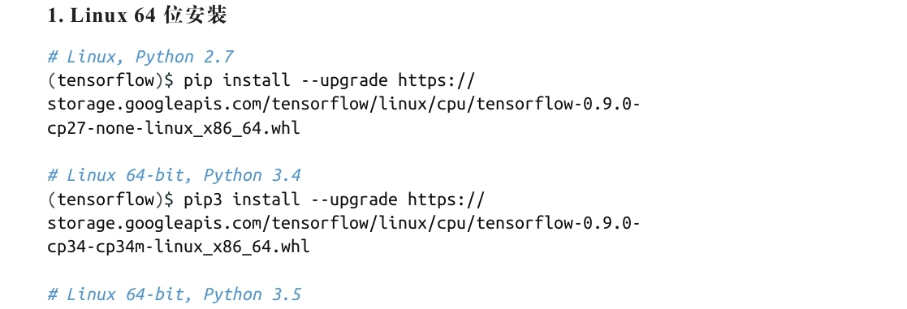
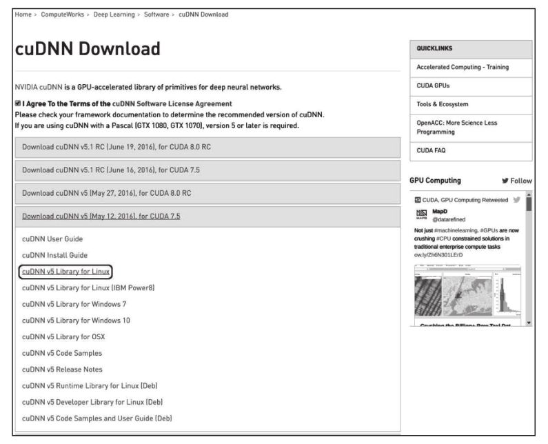
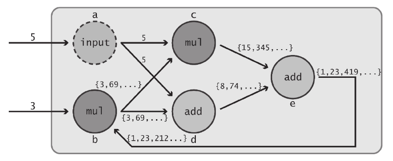
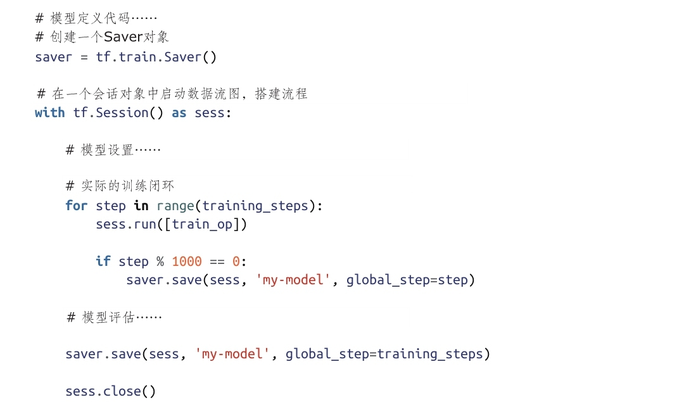
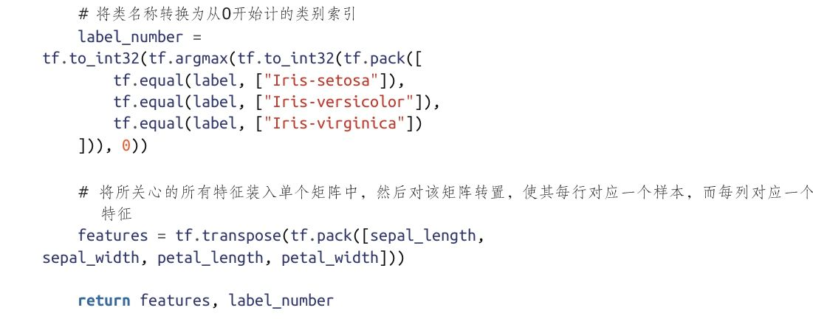
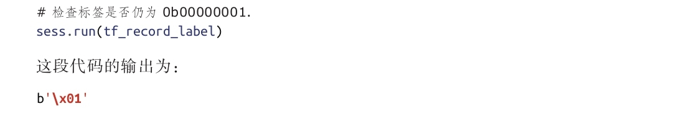
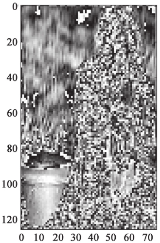
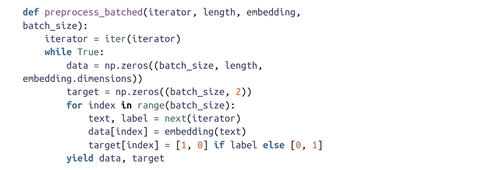
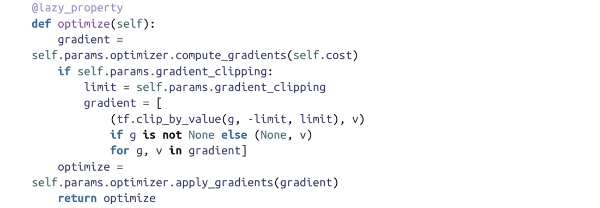
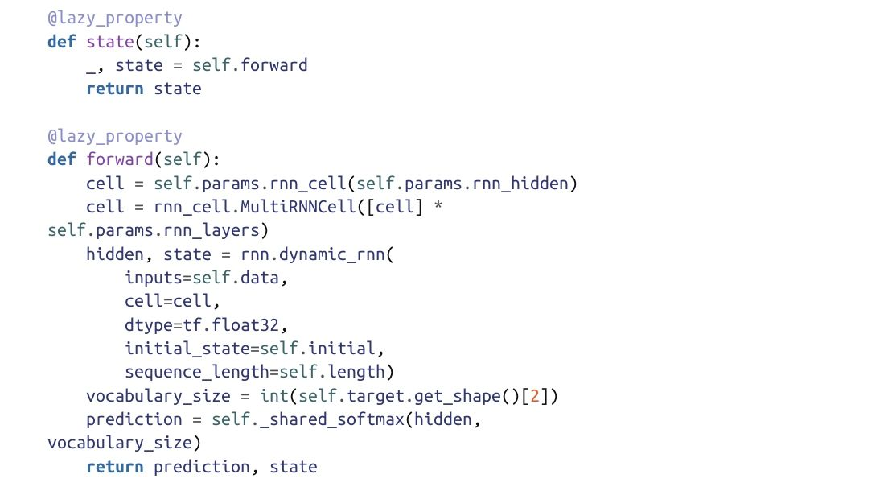

作者: [美] 山姆·亚伯拉罕（Sam Abrahams） / [美] 丹尼亚尔·哈夫纳（Danijar Hafner） / [美] 埃里克·厄威特 / [美] 阿里尔·斯卡尔皮内里
出版社: 机械工业出版社
原作名: TensorFlow for Machine Intelligence
译者: 段菲 / 陈澎
出版年: 2017-5-1
丛书: 智能系统与技术丛书
ISBN: 9787111563891
译者序
我们正处在一个激动人心的时代，深度学习作为近年来最具突破性的技术之一，极大地推动了人工智能领域的研究进程，并迅速渗透各行各业，同时带动了一大批如家庭服务机器人、自动驾驶这样的新兴产业。不夸张地说，深度学习技术正在深刻地影响着人们的工作、生活和思维方式。
为了帮助人们更高效地从事深度学习研究和应用，并积极分享其研究成果，优秀的开源深度学习框架如雨后春笋般不断涌现。作为深度学习领域巨擘之一的Google也在2015年11月将自己的第二代分布式机器学习系统TensorFlow开源。虽然发布时间较晚，但凭借Google在业内广泛而巨大的影响力以及顶尖的人工智能研究水平，其代码的简洁性、部署的便利性，以及在学术研究和产品研发两端取得的良好平衡，在极短的时间内便从众多优秀的深度学习框架中脱颖而出，获得了广大开发者的强烈关注。自公开发布以来，TensorFlow始终保持着兼收并蓄的态势，不断地从其他优秀开源框架中汲取优秀特性，在广大研究和开发人员的强力推动下，不断快速迭代并大幅提升代码的效率，平均每周的代码更新量都超过了万行，所形成的社区开创了空前的活跃度。完全可以预见，TensorFlow将长期位列一流开源框架的行列。
虽然TensorFlow的优点数不胜数，但其“不足”也较为突出，那就是其接口过于复杂，对初学者的编程技能和知识水平要求偏高，学习曲线过陡。本书的问世在一定程度上缓解了这个矛盾。本书的几位作者都来自Google的研发一线，他们用自己的宝贵经验，结合众多高质量的代码，生动讲解了TensorFlow的底层原理，并从实战角度介绍了如何将两种常见模型——深度卷积网络、循环神经网络应用到图像理解和自然语言处理的典型任务中。难能可贵的是，他们还介绍了在模型部署和编程中可用的诸多实用技巧。总之，本书非常适合TensorFlow的入门学习。
需要说明的是，这并不是一本机器学习理论或深度学习的入门读物，阅读本书需要读者对经典机器学习理论和算法、深度卷积网络、循环神经网络的基本原理有初步的了解，并对Python编程和常用的Python库（如NumPy和matplotlib）较为熟悉。另外，本书的代码是基于TensorFlow 0.8版的，译者对0.9版所做的接口变动以“译者注”的形式做了部分说明，并对原书中的一些错误进行了订正。尽管TensorFlow 1.0版已经正式发布，接口升级相比以往任何一版都要更多，但笔者认为读者朋友大可不必过于担忧。只要清楚地掌握了TensorFlow的基本原理和Python编程，并勤于借助互联网，相信接口问题都可迎刃而解。同时，为方便广大读者的学习，原书作者和译者也会抽时间对本书中的实例代码按照TensorFlow最新版本进行升级，请大家关注原出版社和机械工业出版社相关主题的后续图书。
深入理解深度学习，从了解优秀的开源框架开始，愿读者朋友们的TensorFlow学习之旅一帆风顺！
段菲
2017年3月3日
前言
欢迎
自2015年11月TensorFlow第一个开源版本发布以来，它便迅速跻身于最激动人心的机器学习库的行列，并在科研、产品和教育等领域正在得到日益广泛的应用。这个库也在不断地得到改进、充实和优化。与此同时，TensorFlow社区正以惊人的速度发展壮大。无论你是新手还是有经验的用户，笔者都希望通过本书帮助你提升使用TensorFlow的能力，使你自如地充分利用这个功能强大的开源库。
本书的内容编排
第一部分：开启TensorFlow之旅
本书第一部分将帮助读者做好使用TensorFlow的准备。第1章为引言，对TensorFlow的历史脉络进行了简要的梳理，并对TensorFlow的设计模式以及选择TensorFlow作为深度学习库的优势和面临的挑战进行了讨论。
引言之后的第2章将介绍安装TensorFlow时应当考虑的因素，并给出了详细的TensorFlow安装指南，即如何从二进制安装包安装和从源码构建TensorFlow。
第二部分：TensorFlow与机器学习基础
从第3章开始，进入本书第二部分。在TensorFlow安装完毕后，第3章将深入介绍TensorFlow API的基础知识，而不会涉及过多的机器学习概念。这样做是为了将“学习TensorFlow”和“学习如何利用TensorFlow从事机器学习相关工作”区分开来。第3章将对TensorFlow API中许多重要的部分进行深入剖析。此外，还将演示如何用可视化的数据流图表示模型，并将其转化为TensorFlow代码，以及如何利用TensorBoard验证数据流图是否被正确建模。
介绍完TensorFlow API的核心概念之后，便进入第4章。这一章将利用TensorFlow实现一些简单的机器学习模型，如线性回归、对数几率回归（logistic regression）和聚类模型。
第三部分：用TensorFlow实现更高级的深度模型
第三部分由两章构成，每章都只关注一种更为复杂的深度学习模型。每章首先对模型进行描述，然后介绍如何用可视化的数据流图表示所要创建的模型。这两章还将讨论为什么要以特定方式构建这些模型，并对所涉及的数学难点进行讲解，之后再介绍如何利用TensorFlow有效地构建这些模型。
所要研究的第一个模型是卷积神经网络（CNN），对应于第5章。该章会介绍如何使用图像数据训练TensorFlow模型，并对卷积的数学原理和使用目的展开讨论，同时还将介绍如何将图像裸数据转化为一种与TensorFlow兼容的格式，以及如何对最终的输出进行测试。
第6章将探讨如何使用TensorFlow正确地构建循环神经网络（RNN）模型。通过各种自然语言处理（NLP）任务，读者将了解如何利用长短时记忆网络（LSTM）以及如何将预训练的词向量包含到模型中。
第四部分：其他提示、技术与特性
本书最后一部分将探讨TensorFlow API中最新推出的特性，内容包括如何准备用于部署的模型、一些有用的编程模式，以及其他精选主题。
其他机器学习库
TensorFlow并非唯一可用的开源机器学习库。下面列出一份可用于深度学习的简短开源库清单：
·Caffe专注于卷积神经网络和图像处理，使用C++语言编写。
·Chainer是另一个灵活的机器学习Python库，支持单机多GPU运算。
·CNTK是微软公司发布的首个开源机器学习库，它拥有自己的模型定义语言，支持声明式的分布式模型构建。
·Deeplearning4j是一个专门针对神经网络的Java库，它易于与Spark、Hadoop和其他基于Java的分布式软件集成，具有良好的可伸缩性。
·Nervana Neon是一个高效的Python机器学习库，支持单机多GPU运算。
·Theano是一个极为灵活的Python机器学习库，因其出众的用户友好性以及可以用异常简单的方式定义复杂模型等特点，在科研领域深受欢迎。TensorFlow的API与Theano API最为相似。
·Torch是一个专注于GPU实现的机器学习库，它是用Lua语言编写的，并由来自若干家大公司的研究团队提供支持。
限于篇幅，本书不打算对上述这些库的优缺点展开深入讨论，但如果有时间，非常值得深入展开。TensorFlow的作者在进行框架设计时，便是从当中的几个库汲取了灵感。
先修知识
虽然本书主要关注TensorFlow API，但笔者希望读者已经熟悉大量数学和编程概念，包括：
·微积分（一元和多元）
·矩阵代数（尤其是矩阵乘法）
·基本的编程原理
·机器学习的基本概念
此外，读者若能够掌握下列知识，则将从本书中获得更大的收获：
·拥有Python编程及模块组织的经验
·拥有NumPy库的使用经验
·拥有matplotlib库的使用经验
·掌握机器学习中更高级的概念，尤其是前馈神经网络、卷积神经网络和循环神经网络
在适宜的时候，笔者会通过一些提示信息帮助读者重新熟悉那些为充分理解相关数学和Python概念所必需的概念。
预期的收获
通过阅读本书，读者将掌握以下内容：
·TensorFlow的核心API
·TensorFlow的工作流：数据流图的定义和数据流图的执行
·如何在各种设备上安装TensorFlow
·组织代码和项目的最佳实践
·如何用TensorFlow创建核心机器学习模型
·如何用TensorFlow实现RNN和CNN
·如何用TensorFlow Serving部署代码
·利用TensorBoard分析模型的基础知识
在学习完本书之后，如果读者想对TensorFlow获得更多了解，可参考下列资源：
·TensorFlow官网 其中包含最新的文档、API和入门材料。
·TensorFlow Github代码库 在此，可对TensorFlow的开源实现做出贡献，并直接对源代码进行审查。
·官方发布的用TensorFlow实现的机器学习模型 可原封不动地使用这些模型，也可稍加调整以适合自己的设计目的。
·谷歌研究院的博客（Google Research Blog） 提供了来自谷歌的有关TensorFlow的应用和更新的最新消息。
·Kaggle 获取公开数据集并与其他从事数据分析工作的人开展竞赛的绝佳网站。
·Data.gov 美国政府的门户网站，从中可找到全美国的公开数据集。
至此，“动员演讲”已经结束，现在让我们开启本书的学习之旅吧！
第一部分 开启TensorFlow之旅
第1章 引言
第2章 安装TensorFlow
第1章 引言
1.1 无处不在的数据
我们正实实在在地处于“信息时代”。如今，各种数据从无穷无尽的渠道不断涌入：智能手机、手表、汽车、停车计时表、家用电器。几乎任何一种能够说出名字的技术与生俱来都具备与位于云端的某个数据库进行通信的能力。在看似无限的存储能力的支持下，开发者们为数据仓库选择了一种“更多即是更好”的方法，存储着从他们的产品和客户那里收集到的以拍字节（PB）为单位计的海量数据。
与此同时，计算机的性能也在持续提升。虽然CPU的发展速度已经放缓，但并行处理架构取得了爆炸式的发展。一向主要服务于计算机游戏的图形处理单元（GPU）如今已被大量运用于通用计算领域，并拉开了机器学习迅猛发展的序幕。
机器学习（有时简记为ML）试图利用通用的数学模型回答涉及数据的特定问题。机器学习成功应用于垃圾邮件检测、产品推荐（向客户）、预测商品的价格等领域已有多年。近年来，一种特殊类型的机器学习范式在几乎所有领域都取得了无数巨大的成功，它就是深度学习。
1.2 深度学习
“深度学习”已成为用于描述使用多层神经网络的过程的标准术语，多层神经网络是一类极为灵活的可利用种类繁多的数学方法以及不同数学方法组合的模型。这类模型极为强大，但直到最近几年，人们才有能力卓有成效地利用神经网络，其背后原因主要有两点，一是获取足够数量的数据成为现实；二是得益于通用GPU的快速发展，多层神经网络拥有了超越其他机器学习方法所必需的计算能力 [1] 。
深度学习的强大之处在于当决定如何最有效地利用数据时，它能够赋予模型更大的灵活性。人们无需盲目猜测应当选择何种输入。一个调校好的深度学习模型可以接收所有的参数，并自动确定输入值的有用高阶组合。这种能力使得更为复杂的决策过程成为可能，并使计算机比以往任何时候都更加智能。借助深度学习，我们可以制造出具有自动驾驶能力的汽车和能够理解人类语音的电话。由于深度学习的出现，机器翻译、人脸识别、预测分析、机器作曲以及无数的人工智能任务都成为可能，或相比以往有了显著改进。
虽然深度学习背后的数学概念几十年前便提出，但致力于创建和训练这些深度模型的编程库是近年来才出现的。遗憾的是，这些库中的大多数都会在灵活性和生产价值之间进行取舍。灵活的库对于研究新的模型架构极有价值，但常常或者运行效率太低，或者无法运用于产品中。另一方面，虽然出现了可托管在分布式硬件上的快速、高效的库，但它们往往专注于特定类型的神经网络，并不适宜研究新的和更好的模型。这就使决策制定者陷于两难境地：是应当用缺乏灵活性的库来从事研究，以避免重新实现代码，还是应当在研究阶段和产品开发阶段分别使用两个完全不同的库？如果选择前一种方案，可能便无法测试不同类型的神经网络模型；如果选择后一种方案，则需要维护可能调用了完全不同的两套API的代码。由此甚至会引发另一个问题——我们是否拥有这样的资源？
解决这个两难问题正是TensorFlow的设计初衷。
[1] 还应补充第三点原因：更有效的训练算法。——译者注
1.3 TensorFlow：一个现代的机器学习库
TensorFlow由谷歌于2015年11月向公众正式开源，它是汲取了其前身——DistBelief在创建和使用中多年积累的经验与教训的产物。TensorFlow的设计目标是保证灵活性、高效性、良好的可扩展性以及可移植性。任何形式和尺寸的计算机，从智能手机到大型计算集群，都可运行TensorFlow。TensorFlow中包含了可即刻将训练好的模型产品化的轻量级软件，有效地消除了重新实现模型的需求。TensorFlow拥抱创新，鼓励开源的社区参与，但也拥有一家大公司的支持、引导，并保持一定的稳定性。由于其强大的功能，TensorFlow不仅适合个人使用，对于各种规模的公司（无论是初创公司，还是谷歌这样的大公司）也都非常适合。
如果你和你的同事拥有数据、一个有待求解的问题以及一台可工作的计算机，那么很幸运，TensorFlow正是你们一直寻找的“武林秘籍”。
1.4 TensorFlow：技术概要
本小节将给出一些关于TensorFlow库的高层信息，如它是什么、它的发展史、用例以及与竞争对手的比较。决策制定者、利益相关者以及任何希望了解TensorFlow背景的人都会从本小节受益。
谷歌的深度学习研究简史
谷歌最初开发的大规模深度学习工具是谷歌大脑（Google Brain）团队研发的DistBelief。自创建以来，它便被数十个团队应用于包括深度神经网络在内的不计其数的项目中。然而，像许多开创性的工程项目一样，DistBelief也存在一些限制了其易用性和灵活性的设计错误。DistBelief完成之后的某个时间，谷歌发起了新的项目，开始研发新一代深度学习工具，其设计准备借鉴最初的DistBelief在使用中总结的教训和局限性。这个项目后来发展为TensorFlow，并于2015年11月正式向公众开源，接着迅速成为一个颇受欢迎的机器学习库，如今已被成功运用于自然语言处理、人工智能、计算机视觉和预测分析等领域。
1.5 何为TensorFlow
下面以一种高层观点来介绍TensorFlow，以帮助读者理解它试图求解的问题。
1.5.1 解读来自官网的单句描述
在TensorFlow的官网上，针对访问者的第一句致辞便是下列（相当含糊的）声明：
TensorFlow is an Open Source Software Library for Machine Intelligence
这句话的下方，即“About TensorFlow”下的一段还有这样一句描述：
TensorFlowTM is an open source software library for numerical computation using data flow graphs.
比起前面的声明，第二个定义更为具体，但对那些数学或技术背景不强的人而言，这可能并非最全面的解释。下面我们对其进行解构。
1.Open Source（开源）
TensorFlow最初是作为谷歌的内部机器学习工具而创建的，但在2015年11月，它的一个实现被开源，所采用的开源协议是Apache 2.0。作为开源软件，任何人都可自由下载、修改和使用其代码。开源工程师可对代码添加功能和进行改进，并提议在未来版本中打算实施的修改。由于TensorFlow深受广大开发者欢迎，因此这个库每天都会得到来自谷歌和第三方开发者的改进。
注意，严格来说，我们只能称之为“一个实现”，而不能说“TensorFlow”被开源。从技术角度讲，TensorFlow是《TensorFlow白皮书》所描述的一个用于数值计算的内部接口，其内部实现仍然由谷歌维护。然而，开源实现与谷歌的内部实现之间的差异是由与其他内部软件的连接造成的，并非谷歌有意“将好东西藏着掖着”。谷歌始终都在不断将内部改进推送到公共代码库。总之，TensorFlow的开源版本包含了与谷歌的内部版本完全相同的功能。
在本书后续内容中，当提到“TensorFlow”时，笔者实际上指的是其开源实现。
2.Library for Numerical Computation（数值计算库）
官网的定义中并未将TensorFlow称为一个“机器学习库”，而是使用了更宽泛的短语“数值计算”。虽然TensorFlow中的确包含一个模仿了具有单行建模功能的机器学习库Scikit-Learn的名为“learn”（也称“Scikit Flow”）的包，但需要注意的是，TensorFlow的主要目标并非是提供现成的机器学习解决方案。相反，TensorFlow提供了一个可使用户用数学方法从零开始定义模型的函数和类的广泛套件。这使得具有一定技术背景的用户可迅速而直观地创建自定义的、具有较高灵活性的模型。此外，虽然TensorFlow为面向机器学习的功能提供了广泛支持，但它也非常适合做复杂的数学计算。然而，由于本书重点讨论机器学习（尤其是深度学习），因此下面主要讲述如何利用TensorFlow创建“机器学习模型”。
3.Data Flow Graphs（数据流图）
TensorFlow的计算模型是有向图（directed graph），其中每个节点（通常以圆圈或方框表示）代表了一些函数或计算，而边（通常以箭头或线段表示）代表了数值、矩阵或张量。
数据流图极为有用的原因如下。首先，许多常见的机器学习模型，如神经网络，本身就是以有向图的形式表示的，采用数据流图无疑将使机器学习实践者的实现更为自然。其次，通过将计算分解为一些小的、容易微分的环节，TensorFlow能够自动计算任意节点关于其他对第一个节点的输出产生影响的任意节点的导数（在TensorFlow中称为“Operation”）。计算任何节点（尤其是输出节点）的导数或梯度的能力对于搭建机器学习模型至关重要。最后，通过计算的分解，将计算分布在多个CPU、GPU以及其他计算设备上更加容易，即只需将完整的、较大的数据流图分解为一些较小的计算图，并让每台计算设备负责一个独立的计算子图（此外，还需一定的逻辑对不同设备间的共享信息进行调度）。
补充：何为张量？
简而言之，张量是一个n维矩阵。因此，2阶张量等价于标准矩阵。从可视化的角度，若将m×m的矩阵视为方形数组（m个数字高，m个数字宽），则可将m×m×m的张量视为立方数组（m个数字高，m个数字宽，m个数字深）。一般而言，如果读者更熟悉矩阵数学，完全可以按矩阵的方式来看待张量。
1.5.2 单句描述未体现的内容
虽然短语“open source software library for numerical computation using data flow graphs”的信息密度非常大，但并未涵盖那些真正使TensorFlow作为机器学习库脱颖而出的重要方面。下面列出一些成就TensorFlow的重要组成。
1.分布式功能
上文在介绍数据流图时间接提到，TensorFlow的设计目标之一是在多台计算机以及单机多CPU、单机多GPU环境中具有良好的可伸缩性。虽然，最初的开源实现在发布时并不具备分布式功能，但自0.8.0版本起，分布式运行时已成为TensorFlow内置库的一部分。虽然这个最初版本的分布式API有些臃肿，但它极其强大。大多数其他机器学习库尚不具备这样的功能，尤其值得注意的是，TensorFlow与特定集群管理器（如Kubernetes）的本地兼容性正在得到改善。
2.软件套件
虽然“TensorFlow”主要是指用于构建和训练机器学习模型的API，但TensorFlow实际上是一组需配合使用的软件：
·TensorFlow是用于定义机器学习模型、用数据训练模型，并将模型导出供后续使用的API。虽然实际的计算是用C++编写的，但主要的API均可通过Python访问。这使得数据科学家和工程师可利用Python中对用户更为友好的环境，而将实际计算交给高效的、经过编译的C++代码。TensorFlow虽然也提供了一套可执行TensorFlow模型的C++API，但在本书编写之时它还具有较大的局限性，因此对大多数用户都是不推荐的。
·TensorBoard是一个包含在任意标准TensorFlow安装中的图可视化软件。当用户在TensorFlow中引入某些TensorBoard的特定运算时，TensorBoard可读取由TensorFlow计算图导出的文件，并对分析模型的行为提供有价值的参考。它对概括统计量、分析训练过程以及调试TensorFlow代码都极有帮助。学会尽早并尽可能多地使用TensorBoard会为使用TensorFlow工作增添趣味性，并带来更高的生产效率。
·TensorFlow Serving是一个可为部署预训练的TensorFlow模型带来便利的软件。利用内置的TensorFlow函数，用户可将自己的模型导出到可由TensorFlow Serving在本地读取的文件中。之后，它会启动一个简单的高性能服务器。该服务器可接收输入数据，并将之送入预训练的模型，然后将模型的输出结果返回。此外，TensorFlow Serving还可以在旧模型和新模型之间无缝切换，而不会给最终用户带来任何停机时间。虽然Serving可能是TensorFlow生态系统中认可度最低的组成，它却可能是使TensorFlow有别于其他竞争者的重要因素。将Serving纳入生产环境可避免用户重新实现自己的模型——他们只需使用TensorFlow导出的文件。TensorFlow Serving完全是用C++编写的，其API也只能通过C++访问。
笔者相信，只有深入了解上述所有软件之间的联系，并熟练掌握它们的联合使用方法，方可真正使TensorFlow物尽其用。因此，本书会涵盖上述三个软件的用法。
1.6 何时使用TensorFlow
下面介绍一些TensorFlow的用例。一般而言，对于大多数机器学习任务，TensorFlow都是一个很好的选择。下面简单列出了TensorFlow尤其适合的一些场合。
·研究、开发和迭代新的机器学习架构 。由于TensorFlow极为灵活，因此在构建新颖的、测试较少的模型时非常有用。而使用某些库时，用户只能获取对实现原型有帮助的具有较强刚性的预建模型，而无法对其进行修改。
·将模型从训练直接切换到部署 。如前所述，TensorFlow Serving使用户可实现训练到部署的快速切换。因此，在创建依赖于机器学习模型的产品时，使用TensorFlow便可实现快速迭代。如果你的团队需要保持较快的开发进度，或者你只是没有用C++、Java等语言重新实现某个模型的资源，TensorFlow可赋予你的团队快速实现产品的能力。
·实现已有的复杂架构 。一旦用户掌握了如何阅读可视化的计算图，并使用TensorFlow来进行构建，他们便有能力用TensorFlow实现最新的研究文献中所描述的模型。在构建未来的模型，或甚至在对用户的当前模型进行严谨的改进时，这种能力可提供非常有价值的见解。
·大规模分布式模型 。在面对多种设备时，TensorFlow表现出卓越的向上可扩展性。它已经开始在谷歌内部的各个项目中逐步取代DistBelief。随着最近分布式运行时的发布，我们将看到越来越多的将TensorFlow运行于多台硬件服务器和云端虚拟机的用例。
·为移动/嵌入式系统创建和训练模型 。虽然TensorFlow主要关注向上的扩展（scaling up），对于向下的扩展（scaling down），它同样有优异的表现。TensorFlow的灵活性之一体现在它可轻松扩展到计算性能不高的系统中。例如，它可在安卓设备以及像树莓派（Raspberry Pi）这样的微型计算机中运行。TensorFlow代码库中包含了一个在安卓系统中运行预训练模型的例程。
1.7 TensorFlow的优势
1.易用性
·相对而言，TensorFlow工作流易于理解。它的API保持着高度的一致性，这意味着在尝试不同模型时，无需从头学习一套新的东西。
·TensorFlow API很稳定，维护者始终在努力确保每次改动都向下兼容。
·TensorFlow与NumPy无缝集成，可使大多数了解Python的数据科学家如鱼得水。
·不同于其他库，TensorFlow不占编译时间。这就使用户可快速验证自己的想法，而省去了专门的等待时间。
·目前已有多种高层接口构建在TensorFlow之上，如Keras和SkFlow。这就使得即便用户不希望动手实现整个模型，也可以利用TensorFlow的优势。
2.灵活性
·TensorFlow能够运行在不同类型和尺寸的机器之上。这使得TensorFlow无论是在超级计算机上，还是在嵌入式系统，或任何其他介于两者之间的计算机上都有用武之地。
·TensorFlow的分布式架构使得在大规模数据集上的模型训练可在合理的时间内完成。
·TensorFlow可利用CPU、GPU，或同时使用这两者。
3.高效性
·当TensorFlow的第一个版本发布时，它在很多流行的机器学习基准测试中都非常低效。从那时起，TensorFlow的开发团队便投入大量的时间和精力对TensorFlow代码的大部分实现进行改进。如今，TensorFlow中大部分库的性能已有了显著提升，已成为众多开源机器学习框架中居于榜首位置的有力竞争者。
·TensorFlow的效率仍在持续地得到改进，因为有越来越多的开发者正在共同努力带来更好的实现。
4.幕后支持
·TensorFlow为谷歌所支持。谷歌已为其投入巨大的资源，因为它希望TensorFlow成为机器学习研究者和开发者的通用语言。此外，谷歌也在利用TensorFlow完成其日常工作，并且通过投资来为TensorFlow提供持续不断的支持。
·围绕TensorFlow已经形成了一个不可思议的社区，从社区中的知名成员或GitHub上的知名开发者那里得到回应相对比较容易。
·谷歌已经发布了若干用TensorFlow预训练的机器学习模型。它们可供免费使用，使得无需大量数据的流水线便可迅速实现原型系统。
5.额外特性
·当需要对模型进行调试和可视化时，TensorBoard便体现出极为重要的价值，而在其他机器学习库中，并无类似的功能。
·TensorFlow Serving可能是会使得更多的初创公司将服务和资源投入到机器学习领域的软件，因为重新实现代码来部署某个模型所需付出的代价绝对不可小觑。
1.8 使用TensorFlow所面临的挑战
1.分布式支持尚不成熟
虽然分布式运行时已正式发布，但在TensorFlow中使用这种特性却并非想象中那样容易。在本书写作之时，为使用该特性，需手工定义每台设备的角色，这种工作既乏味又容易出错。由于它是一种全新的特性，因此可供学习的例程较少，想必未来的版本应当会有所改进。如前文所述，对Kubernetes的支持已进入开发流水线，但到目前为止，它仍然尚未完成。
2.实现定制代码的技巧性较强
虽然关于如何用TensorFlow创建用户自己的运算有一份官方指南可供参考，但要将定制的代码实现到TensorFlow中仍然颇费周折。然而，如果希望对主代码库做出贡献，谷歌开发团队会快速回答你的问题，并查看你所提交的代码，以便为吸纳你的工作成果进行准备。
3.某些特性仍然缺失
如果你是一名经验丰富的机器学习专家，并对其他框架具备深入的了解，你可能会发现一些自己喜欢的虽小但十分有用的特性尚未在TensorFlow中实现。通常，你想要的这种特性在TensorFlow中会有一些替代方案，但这可能无法阻止你的抱怨“为什么它还未得到本地支持？”
1.9 高歌猛进
无需多言，笔者对TensorFlow的未来充满期待，而且笔者对帮助你开始使用这样一款强大工具感到激动万分。下一章将介绍如何安装TensorFlow，并对TensorFlow的核心库、基本使用模式以及环境进行全面讲解。
第2章 安装TensorFlow
在开始使用TensorFlow之前，需要先将其安装到计算机中。幸运的是，TensorFlow官网提供了一份在Linux和Mac OS X系统中安装TensorFlow的完整分步指南。本章对安装中将会出现的不同选项如何选择给出了一些建议，并提供了一些关于能够与TensorFlow很好地集成的其他第三方软件的信息。此外，本章还给出一份从源代码构建和安装TensorFlow的参考，以帮助用户安装带有GPU支持的TensorFlow。
如果用户对Pip/Conda、虚拟环境，或从源码安装程序已经非常熟悉，则可放心地参考如下官方指南：
https://www.tensorflow.org/versions/master/get_started/os_setup.html
2.1 选择安装环境
许多软件都会使用一些库和独立维护的软件包。对于开发者而言，这是一件好事，因为这种做法有利于代码复用，而且他们可专注于创建新的功能，而无需重复造轮。然而，这种做法也会付出一定的代价。如果某个程序的正常运行必须依赖于另一个库，则用户或这款软件必须确保任何运行该程序代码的机器都已安装了依赖库。乍看上去，这几乎不算一个问题——只需随这款软件一起安装所需的依赖库不就行了？不幸的是，这种方法会带来一些意想不到的后果，而且常常如此。
设想如下场景：你找到一款出色的软件——软件A，下载后开始安装。在执行其安装脚本时，软件A需要另外一款依赖软件。如果你的计算机中缺少这个依赖软件，则需进行安装。我们称之为软件依赖项（software dependency）。假设该依赖项的当前版本号为1.0。软件A先安装1.0版的依赖项，然后再对自身进行安装，一切都进行得很顺利。再假设将来的某个时候，你偶然发现了另一款希望安装的软件——软件B。软件B需要使用2.0版的依赖项，相对于1.0版，这个版本做出了重大改进，且不具备向下兼容性。鉴于这个依赖项的发行方式，无法做到1.0和2.0两个版本同时运行，因为这将导致使用它时产生二义性（这两个版本的都会作为依赖项被导入，应使用哪个版本？）。最终，软件B将用2.0版的依赖项覆盖1.0版，并完成自身的安装。经历一番艰辛后，你才发现软件A与2.0版依赖项不兼容，因此完全被破坏，情况顿时变得很糟。如何才能在同一台机器上既可运行软件A，也可运行软件B？这个问题非常重要，因为TensorFlow也依赖于若干开源软件。利用Python（用于将TensorFlow打包的编程语言），可采取多种方式避免上述依赖冲突问题。
·代码库内部的软件包依赖 。无需依赖于系统级的软件包或库，开发者可将所需版本的依赖库放在自己的代码中，并在局部引用。按照这种方式，软件所需的所有代码都是可直接操控的，不会受到外部变动的影响。然而，这种方式并非无懈可击。首先，它增加了安装该软件所需的磁盘空间，这意味着安装时间更长、使用成本更高。其次，用户可能已经以全局方式安装了依赖库，这意味着局部版本完全是多余的，会占用不必要的空间。最后，依赖库在将来可能会推出修复若干严重安全漏洞的关键的、保持向下兼容性的更新。这时，对代码库中依赖库的更新将无法借助软件包管理器，而只能由软件开发者手工完成。不幸的是，最终用户对此无从插手，因为何时直接包含依赖库完全是由开发者决定的。有一些依赖库由于没有被包含进TensorFlow，因此必须单独安装。
·使用依赖环境 。一些软件包管理器中包含可创建虚拟环境的相关软件。在一个环境中可完全独立地维护特定版本的软件而不受其他环境的影响。借助Python，有多种选择。对于Python的标准发行版，Virtualenv是直接可用的。如果使用的是Anaconda，它会包含一个内置的虚拟环境系统及其软件包管理器——Conda。稍后，笔者将会介绍如何使用这两种工具安装TensorFlow。
·使用容器 。容器（如Docker）是将软件与完整的文件系统，包括其运行时和依赖库打包的轻量级方案。因此，任何可运行一个容器的机器（包括虚拟机在内）都能够与任何运行该容器的其他机器对其中所包含的软件获得完全相同的运行效果。与简单地激活Virtualenv环境或Conda环境相比，虽然从Docker中启动TensorFlow需要略多一点的步骤，但当需要将代码在不同实例（无论是虚拟机还是物理的服务器）上进行部署时，它在不同运行时环境中的一致性使其成为无价之宝。下文将介绍如何安装Docker，并创建你自己的TensorFlow容器（以及如何使用官方的TensorFlow镜像）。
一般而言，如果准备在单机上安装和使用TensorFlow，笔者建议采用Virtualenv或Conda的虚拟环境。它们能够以较小的代价解决依赖冲突问题，且易于设置。一旦创建完毕，便几乎一劳永逸。如果准备将TensorFlow代码部署到一台或多台服务器中，则值得创建一个Docker容器镜像。虽然所需的步骤略多，但却会大大降低在多服务器上部署的成本。笔者不推荐既不使用虚拟环境，也不使用容器的TensorFlow安装方法。
2.2 Jupyter Notebook与matplotlib
在数据科学工作流中频繁使用的两款出色的软件是Jupyter Notebook和matplotlib。它们与NumPy协同使用已有多年，TensorFlow与NumPy的紧密集成使得用户可采用他们熟悉的工作模式。两者均为开源软件，且采用的许可协议均为BSD。
利用Jupyter Notebook（前身为iPython Notebook），可交互式地编写包含代码、文本、输出、LaTeX及其他可视化结果的文档。这使得它在依据探索分析创建报告时极为有用，因为可将创建可视化图表的代码直接在图表的旁边展示出来，也可利用Markdown单元以格式丰富的文本分享你对于某个特定方法的见解。此外，对于设计原型的想法，Jupyter Notebook也极为出色，因为你可回顾和编辑部分代码，然后从笔记本中直接运行。与许多其他要求逐行执行代码的交互式Python环境不同，Jupyter Notebook允许将代码写入逻辑块中，这使得调试脚本中特定部分相对容易。在TensorFlow中，这个特性是极有价值的，因为典型的TensorFlow程序已经被划分为“计算图的定义”和“运行计算图”两部分。
matplotlib是一个绘图库，它允许用户使用Python创建动态的、自定义的可视化结果。它与NumPy无缝集成，其绘图结果可直接显示在Jupyter Notebook中。matplotlib也可将数值数据以图像的形式可视化，这个功能可用于验证图像识别任务的输出，并将神经网络的内部单元可视化。构建在Matplotlib之上的其他层，如Seaborn，可用于增强其功能。
2.3 创建Virtualenv环境
为保持依赖项的干净整洁，下面介绍如何利用Virtualenv创建虚拟的Python环境。首先需要确保Virtualenv与pip（Python的包管理器）均被安装。运行下列命令（根据操作系统的不同，选择相应的命令）：
至此，准备工作已完成，接下来创建一个包含该虚拟环境的目录，以及将来可能会创建的任意虚拟环境：
接下来，利用Virtualevn命令创建虚拟环境。在本例中，它位于~/env/tensorflow下。
一旦创建完毕，便可利用source命令激活该虚拟环境：
我们希望当使用pip安装任何软件时都确保该虚拟环境处于活动状态，从而使Virtualenv能够对各依赖库进行追踪。
虚拟环境使用完毕后，需用下列deactivate命令将其关闭：
由于将频繁使用虚拟环境，创建一个激活虚拟环境的快捷方式而非每次键入完整的source…命令便很有价值。接下来的命令将向~/.bashrc文件添加一个bash别名，使在需要启动虚拟环境时只需键入tensorflow：

要测试该快捷方式是否生效，可重启bash终端，并键入tensorflow：
2.4 TensorFlow的简易安装
如果只是希望尽快上手实践一些入门的例子，而不关心是否有GPU支持，则可从TensorFlow官方预制的二进制安装程序中择一。请确保你的Virtualenv环境处于活动状态，并运行下列与你的操作系统和Python版本对应的命令：

从技术角度，可以使用带有GPU支持的预制TensorFlow二进制安装程序，但它需要特定版本的NVIDIA软件，且与未来版本不兼容。
2.5 源码构建及安装实例：在64位Ubuntu Linux上安装GPU版TensorFlow
如果希望使用带有GPU支持的TensorFlow，那么最可能的选择是从源码构建和安装。本节给出了一个完整的安装参考实例，详细介绍了安装和运行TensorFlow所需的每一具体步骤。请注意，本示例中的操作系统为64位Ubuntu Linux发行版，因此如果你使用的是其他Linux发行版，则可能需要对某些命令进行修改（如apt-get）。如果希望在Mac OS X上从源码构建TensorFlow，笔者推荐TensorFlow官网的安装指南：
https://www.tensorflow.org/versions/master/get_started/os_setup.html#installation-for-mac-os-x
2.5.1 安装依赖库
这里假定你已安装了python-pip、python-dev和python-virtualenv。
构建TensorFlow需要事先安装少量依赖库。按照所安装的Python版本，执行下列命令：

2.5.2 安装Bazel
Bazel是一款基于谷歌内部软件的开源构建工具。在本书写作之时，为从源码构建TensorFlow，需要Bazel，因此我们必须自行安装该软件。Bazel官网中有一份非常完整的安装指南，本节只介绍一些最基本的步骤。
第一件事是确保系统中已安装Java Development Kit8（JDK 8）。下列命令会将Oracle JDK 8代码库添加到apt源中，然后进行安装：
对于Ubuntu 15.10版及后续版本，也可安装Oracle JDK的替代软件OpenJDK 8。安装后者更为容易，也是笔者所推荐的，可使用下列命令在系统中安装OpenJDK：
在继续下一步之前，请验证Java已被正确安装：
Java安装完毕后，还需要安装少量其他依赖库：
接下来，需要下载Bazel安装脚本。为此，既可前往GitHub上的Bazel发行页面，也可使用下列wget命令。请注意，对于Ubuntu系统，需要下载“bazel-xxx-installer-linux-x86_64.sh”：
最后，将所下载的安装脚本的权限修改为可执行的，并运行它：

通过使用—user选项，Bazel将被安装到$HOME/bin目录。为确保该路径被添加到环境变量PATH中，可通过下列命令对~/.bashrc进行更新：
重启bash终端，并运行bazel，以确保一切可正常工作：

非常棒！接下来，需要安装一些能够支持GPU运算的依赖软件。
2.5.3 安装CUDA软件（仅限NVIDIA GPU）
如果拥有一款支持CUDA的NVIDIA GPU，则可安装带有GPU支持的TensorFlow。支持CUDA的显卡清单可从下列网址获取：
https://developer.nvidia.com/cuda-gpus
除了确保你的GPU榜上有名，还需注意与显卡“计算能力（compute capability）”有关的量化数字。例如，GeForce GTX 1080的计算能力为6.1，而GeForce GTX TITAN X的计算能力为5.2。在编译TensorFlow时需要用到这个数字。在确定可利用CUDA后，要做的第一件事便是注册NVIDIA的“Accelerated Computer Developer Program”。为了下载安装CUDA和cuDNN所需的所有文件，这个步骤是必需的。注册链接如下：
https://developer.nvidia.com/accelerated-computing-developer
当注册完成后，你会希望下载CUDA。前往下列链接，并使用如下操作指南：
https://developer.nvidia.com/cuda-downloads
1）在“Select Target Platform（选择目标平台）”下方，选择下列选项：
·Linux
·x86_64
·Ubuntu
·14.04/15.04
·deb（本地）
2）单击“Download（下载）”按钮，将安装文件保存在你的计算机中。该文件体积较大，因此完成下载可能需要一段较长的时间。
3）导航至包含所下载的安装文件的目录，并运行下列命令：

上述命令执行完毕后，CUDA将被安装到/usr/local/cuda目录下。
接下来，需要下载cuDNN，它是一款专为深度神经网络设计的基于CUDA的加速库。单击如下页面的“Download”按钮：
https://developer.nvidia.com/cudnn
用在前面创建的账号登录后，将看到一份简短的调查问卷。完成问卷后，可通过单击问卷下方的按钮进入下载页面。单击“I Agree to the Terms…”以接受下载许可协议。由于前面安装的是CUDA 7.5，所以需要下载cuDNN for CUDA7.5（本书写作之时，笔者使用的是cuDNN v5.0）。
单击“Download cuDNN v5 for CUDA7.5”，将下载选项展开。
单击“cuDNN v5 Library for Linux”，下载经过压缩的cuDNN文件。

导航至下载好的.tgz文件，运行下列命令，将必要的文件复制到/usr/local/cuda目录下：
以上便是安装CUDA所需的所有步骤。由于所有依赖库都已细心安装，接下来便可安装TensorFlow了。
2.5.4 从源码构建和安装TensorFlow
首先需要克隆GitHub上的TensorFlow代码库，然后进入其所在目录：
进入上述目录后，运行./configure脚本，将所使用的编译器、CUDA版本等信息通知给Bazel。请确保已记录显卡的“计算能力”数字（上文中已介绍过）：


Google Cloud Platform支持目前正处于封闭alpha测试阶段。如果能够访问该程序，可在回答Google Cloud Platform支持问题时选择y（Yes）。
配置完成后，便可利用Bazel创建一个用于创建Python二进制文件的可执行程序：
执行上述命令需要相当长的一段时间，具体时长取决于你的计算机性能。待Bazel完成上述任务后，运行输出的可执行程序，并传入一个表示Python wheel文件存储路径的参数：
上述命令将在~/tensorflow/bin下创建一个Python.whl文件。请确保你的“tensor-flow”Virtualenv环境处于活动状态，然后用pip安装该wheel文件（请注意该二进制文件的具体名称会依所安装的TensorFlow版本、所使用的操作系统和Python版本而不同）：
如果你拥有多台硬件配置类似的机器，则可使用该wheel文件在这些机器上实现TensorFlow的快速安装。
至此，TensorFlow便安装完毕！最后介绍如何安装Jupyter Notebook和matplotlib。
2.6 安装Jupyter Notebook
首先，运行下列命令安装ipython——一个极为有用的交互式Python内核，它也是Jupyter Notebook的核心。笔者强烈推荐同时安装Python 2和Python 3内核，以便获得更多的选择（即执行下列所有命令）：
此后，通过两个命令便可让你马上体验Jupyter Notebook。首先安装依赖项build-essential：
然后，用pip安装Jupyter Notebook（若使用的是Python 3，则使用pip3）：
官方的安装指南可从Jupyter网站的下列页面获取：
http://jupyter.readthedocs.io/en/latest/install.html
2.7 安装matplotlib
在Linux/Ubuntu上安装matplotlib的方法非常简单，只需运行下列命令：
就是这样简单！
2.8 测试TensorFlow、Jupyter Notebook及matplotlib
下面通过一些虚设代码来复查所有软件是否都能正常工作。创建一个名为“tf-notebooks”的目录以便进行测试。进入该目录，并运行Jupyter Notebook。同样，请确保“tensorflow”环境处于活动状态。
最后一条命令将启动一个Jupyter Notebook服务器，并在你默认的网页浏览器中打开该软件。假设tf-notebooks目录下没有任何文件，那么将看到一个空的工作空间，以及消息“Notebook list is empty”。要创建新的笔记，可单击页面右上角的“New”按钮，然后选择“Python 2”或“Python 3”，具体选择哪个取决于安装TensorFlow时使用的是哪个版本的Python。
新笔记将自动打开，呈现在眼前的将是一块用于工作的白板。下面为这个笔记设置一个新名称。在页面的顶端单击“Untitled”。
之后会弹出一个用于对笔记本重命名的窗口，也可用于修改笔记本文件的名称（扩展名为.ipynb）。你可使用任何自己喜欢的名称，在本例中笔者将其命名为“My First Notebook”：
下面来看实际的界面。我们注意到旁边有一个“In[]：”方块的空单元格，你可在该单元格内直接键入代码，而且它可容纳多行代码。下面将TensorFlow、NumPy以及matplotlib的pyplot模块导入该笔记本：
要运行该单元格，只需同时按下shift键和回车键。该单元格中的代码执行完成后，其下方会自动创建一个新的单元格。我们注意到左边方框中的提示符变成了“In[1]：”，这意味着该单元格是在内核中运行的第一个代码块。在该笔记本中键入下列代码，使用单元格的数量取决于你的需求。你可利用单元格中的分隔符将相关代码很自然地组织在一起。
下面这行代码非常特殊，值得专门介绍：
这是一条专门的命令，用于通知笔记本将matplotlib图表直接显示在浏览器中。
下面逐行分析其余代码，如果你不理解某些术语，请不必担心，后面章节还会一一进行讲解：
1）用TensorFlow定义一个由随机数构成的2×20的矩阵，并将其赋给变量a。
2）启动TensorFlow Session，并将其赋予一个sess对象。
3）用sess.run（）方法执行对象a，并将输出（NumPy数组）赋给out。
4）将这个2×20的矩阵划分为两个1×10的向量x和y。
5）利用pyplot模块绘制散点图，x对应横轴，y对应纵轴。
如果所有软件均已正确安装，你将得到与上图类似的输出结果。这虽然只是向前迈出的小小一步，但我们毕竟已经开始上手尝试TensorFlow，但愿这能给你带来一个良好的体验。
要想通过更多、更全面的教程了解Jupyter Notebook的细节，请参考如下页面中的示例：
http://jupyter-notebook.readthedocs.io/en/latest/examples/Notebook/examples_index.htm
2.9 本章小结
至此，你应当已经拥有了一个可工作的TensorFlow版本。下一章将介绍若干TensorFlow的基础概念，并用这个库构建自己的模型。如果在安装TensorFlow中遇到任何问题，建议首先参考如下的官方指南：
https://www.tensorflow.org/versions/master/get_started/os_setup.html
第二部分 TensorFlow与机器学习基础
第3章 TensorFlow基础
第4章 机器学习基础
第3章 TensorFlow基础
3.1 数据流图简介
本节将脱离TensorFlow的语境，介绍一些数据流图的基础知识，内容包括节点、边和节点依赖关系的定义。此外，为对一些关键原理进行解释，本章还提供了若干实例。如果你对数据流图已有一定使用经验或已运用自如，可直接跳过本节。
3.1.1 数据流图基础
借助TensorFlow API用代码描述的数据流图是每个TensorFlow程序的核心。毫不意外，数据流图这种特殊类型的有向图正是用于定义计算结构的。在TensorFlow中，数据流图本质上是一组链接在一起的函数，每个函数都会将其输出传递给0个、1个或更多位于这个级联链上的其他函数。按照这种方式，用户可利用一些很小的、为人们所充分理解的数学函数构造数据的复杂变换。下面来看一个比较简单的例子。
上图展示了可完成基本加法运算的数据流图。在该图中，加法运算是用圆圈表示的，它可接收两个输入（以指向该函数的箭头表示），并将1和2之和3输出（对应从该函数引出的箭头）。该函数的运算结果可传递给其他函数，也可直接返回给客户。
该数据流图可用如下简单公式表示：
上面的例子解释了在构建数据流图时，两个基础构件——节点和边是如何使用的。下面回顾节点和边的基本性质：
·节点（node） ：在数据流图的语境中，节点通常以圆圈、椭圆和方框表示，代表了对数据所做的运算或某种操作。在上例中，“add”对应于一个孤立节点。
·边（edge）
：对应于向Operation传入和从Operation传出的实际数值，通常以箭头表示。在“add”这个例子中，输入1和2均为指向运算节点的边，而输出3则为从运算节点引出的边。可从概念上将边视为不同Operation之间的连接，因为它们将信息从一个节点传输到另一个节点。
下面来看一个更有趣的例子。
相比之前的例子，上图所示的数据流图略复杂。由于数据是从左侧流向右侧的（如箭头方向所示），因此可从最左端开始对这个数据流图进行分析：
1）最开始时，可看到两个值5和3流入该数据流图。它们可能来自另一个数据流图，也可能读取自某个文件，或是由客户直接输入。
2）这些初始值被分别传入两个明确的“input”节点（图中分别以a、b标识）。这些“input”节点的作用仅仅是传递它们的输入值——节点a接收到输入值5后，将同样的数值输出给节点c和节点d，节点b对其输入值3也完成同样的动作。
3）节点c代表乘法运算。它分别从节点a和b接收输入值5和3，并将运算结果15输出到节点e。与此同时，节点d对相同的两个输入执行加法运算，并将计算结果8传递给节点e。
4）最后，该数据流图的终点——节点e是另一个“add”节点。它接收输入值15和8，将两者相加，然后输出该数据流图的最终结果23。
下面说明为何上述图形表示看起来像是一组公式：
当a＝5、b＝3时，若要求解e，只需依次代入上述公式。
经过上述步骤，便完成了计算，这里有一些概念值得重点说明：
·上述使用“input”节点的模式十分有用，因为这使得我们能够将单个输入值传递给大量后继节点。如果不这样做，客户（或传入这些初值的其他数据源）便不得不将输入值显式传递给数据流图中的多个节点。按照这种模式，客户只需保证一次性传入恰当的输入值，而如何对这些输入重复使用的细节便被隐藏起来。稍后，我们将对数据流图的抽象做更深入的探讨。
·突击小测验。哪一个节点将首先执行运算？是乘法节点c还是加法节点d？答案是：无从知晓。仅凭上述数据流图，无法推知c和d中的哪一个节点将率先执行。有的读者可能会按照从左到右、自上而下的顺序阅读该数据流图，从而做出节点c先运行的假设。但我们需要指出，在该数据流图中，将节点d绘制在c的上方也未尝不可。也可能有些读者认为这些节点会并发执行，但考虑到各种实现细节或硬件的限制，实际情况往往并非总是如此。实际上，最好的方式是将它们的执行视为相互独立。由于节点c并不依赖于来自节点d的任何信息，所以节点c在完成自身的运算时无需关心节点d的状态如何。反之亦然，节点d也不需要任何来自节点c的信息。在本章稍后，还将对节点依赖关系进行更深入的介绍。
接下来，对上述数据流图稍做修改。
主要的变化有两点：
1）来自节点b的“input”值3现在也传递给了节点e。
2）节点e中的函数“add”被替换为“sum”，表明它可完成两个以上的数的加法运算。
你已经注意到，上图在看起来被其他节点“隔离”的两个节点之间添加了一条边。一般而言，任何节点都可将其输出传递给数据流图中的任意后继节点，而无论这两者之间发生了多少计算。数据流图甚至可以拥有下图所示的结构，它仍然是完全合法的。

通过这两个数据流图，想必你已能够初步感受到对数据流图的输入进行抽象所带来的好处。我们能够对数据流图中内部运算的精确细节进行操控，但客户只需了解将何种信息传递给那两个输入节点则可。我们甚至可以进一步抽象，将上述数据流图表示为如下的黑箱。
这样，我们便可将整个节点序列视为拥有一组输入和输出的离散构件。这种抽象方式使得对级联在一起的若干个运算组进行可视化更加容易，而无需关心每个部件的具体细节。
3.1.2 节点的依赖关系
在数据流图中，节点之间的某些类型的连接是不被允许的，最常见的一种是将造成循环依赖（circular dependency）的连接。为理解“循环依赖”这个概念，需要先理解何为“依赖关系”。再次观察下面的数据流图。
循环依赖这个概念其实非常简单：对于任意节点A，如果其输出对于某个后继节点B的计算是必需的，则称节点A为节点B的依赖节点。如果某个节点A和节点B彼此不需要来自对方的任何信息，则称两者是独立的。为对此进行可视化，首先观察当乘法节点c出于某种原因无法完成计算时会出现何种情况。
可以预见，由于节点e需要来自节点c的输出，因此其运算无法执行，只能无限等待节点c的数据的到来。容易看出，节点c和节点d均为节点e的依赖节点，因为它们均将信息直接传递到最后的加法函数。然而，稍加思索便可看出节点a和节点b也是节点e的依赖节点。如果输入节点中有一个未能将其输入传递给数据流图中的下一个函数，情形会怎样？
可以看出，若将输入中的某一个移除，会导致数据流图中的大部分运算中断，从而表明依赖关系具有传递性。即，若A依赖于B，而B依赖于C，则A依赖于C。在本例中，最终节点e依赖于节点c和节点d，而节点c和节点d均依赖于输入节点b。因此，最终节点e也依赖于输入节点b。同理可知节点e也依赖于输入节点a。此外，还可对节点e的不同依赖节点进行区分：
1）称节点e直接依赖 于节点c和节点d。即为使节点e的运算得到执行，必须有直接来自节点c和节点d的数据。
2）称节点e间接依赖 于节点a和节点b。这表示节点a和节点b的输出并未直接传递到节点e，而是传递到某个（或某些）中间节点，而这些中间节点可能是节点e的直接依赖节点，也可能是间接依赖节点。这意味着一个节点可以是被许多层的中间节点相隔的另一个节点的间接依赖节点（且这些中间节点中的每一个也是后者的依赖节点）。
最后来观察将数据流图的输出传递给其自身的某个位于前端的节点时会出现何种情况。
不幸的是，上面的数据流图看起来无法工作。我们试图将节点e的输出送回节点b，并希望该数据流图的计算能够循环进行。这里的问题在于节点e现在变为节点b的直接依赖节点；而与此同时，节点e仍然依赖于节点b（前文已说明过）。其结果是节点b和节点e都无法得到执行，因为它们都在等待对方计算的完成。
也许你非常聪明，决定将传递给节点b或节点e的值设置为某个初始状态值。毕竟，这个数据流图是受我们控制的。不妨假设节点e的输出的初始状态值为1，使其先工作起来。

上图给出了经过几轮循环各数据流图中各节点的状态。新引入的依赖关系制造了一个无穷反馈环，且该数据流图中的大部分边都趋向于无穷大。然而，出于多种原因，对于像TensorFlow这样的软件，这种类型的无限循环是非常不利的。
1）由于数据流图中存在无限循环，因此程序无法以优雅的方式终止。
2）依赖节点的数量变为无穷大，因为每轮迭代都依赖于之前的所有轮次的迭代。不幸的是，在统计依赖关系时，每个节点都不会只被统计一次，每当其输出发生变化时，它便会被再次记为依赖节点。这就使得追踪依赖信息变得不可能，而出于多种原因（详见本节的最后一部分），这种需求是至关重要的。
3）你经常会遇到这样的情况：被传递的值要么在正方向变得非常大（从而导致上溢），要么在负方向变得非常大（导致下溢），或者非常接近于0（使得每轮迭代在加法上失去意义）。
基于上述考虑，在TensorFlow中，真正的循环依赖关系是无法表示的，这并非坏事。在实际使用中，完全可通过对数据流图进行有限次的复制，然后将它们并排放置，并将代表相邻迭代轮次的副本的输出与输入串接。该过程通常被称为数据流图的“展开”（unrolling）。第6章还将对此进行更为详细的介绍。为了以图形化的方式展示数据流图的展开效果，下面给出一个将循环依赖展开5次后的数据流图。
对这个数据流图进行分析，便会发现这个由各节点和边构成的序列等价于将之前的数据流图遍历5次。请注意原始输入值（以数据流图顶部和底部的跳跃箭头表示）是传递给数据流图的每个副本的，因为代表每轮迭代的数据流图的每个副本都需要它们。按照这种方式将数据流图展开，可在保持确定性计算的同时模拟有用的循环依赖。
既然我们已理解了节点的依赖关系，接下来便可分析为什么追踪这种依赖关系十分有用。不妨假设在之前的例子中，我们只希望得到节点c（乘法节点）的输出。我们已经定义了完整的数据流图，其中包含独立于节点c和节点e（出现在节点c的后方）的节点d，那么是否必须执行整个数据流图的所有运算，即便并不需要节点d和节点e的输出？答案当然是否定的。观察该数据流图，不难发现，如果只需要节点c的输出，那么执行所有节点的运算便是浪费时间。但这里的问题在于：如何确保计算机只对必要的节点执行运算，而无需手工指定？答案是：利用节点之间的依赖关系！
这背后的概念相当简单，我们唯一需要确保的是为每个节点的直接（而非间接）依赖节点维护一个列表。可从一个空栈开始，它最终将保存所有我们希望运行的节点。从你希望获得其输出的节点开始。显然它必须得到执行，因此令其入栈。接下来查看该输出节点的依赖节点列表，这意味着为计算输出，那些节点必须运行，因此将它们全部入栈。然后，对所有那些节点进行检查，看它们的直接依赖节点有哪些，然后将它们全部入栈。继续这种追溯模式，直到数据流图中的所有依赖节点均已入栈。按照这种方式，便可保证我们获得运行该数据流图所需的全部节点，且只包含所有必需的节点。此外，利用上述栈结构，可对其中的节点进行排序，从而保证当遍历该栈时，其中的所有节点都会按照一定的次序得到运行。唯一需要注意的是需要追踪哪些节点已经完成了计算，并将它们的输出保存在内存中，以避免对同一节点反复计算。按照这种方式，便可确保计算量尽可能地精简，从而在规模较大的数据流图上节省以小时计的宝贵处理时间。
3.2 在TensorFlow中定义数据流图
在本书中，你将接触到多样化的以及相当复杂的机器学习模型。然而，不同的模型在TensorFlow中的定义过程却遵循着相似的模式。当掌握了各种数学概念，并学会如何实现它们时，对TensorFlow核心工作模式的理解将有助于你脚踏实地开展工作。幸运的是，这个工作流非常容易记忆，它只包含两个步骤：
1）定义数据流图。
2）运行数据流图（在数据上）。
这里有一个显而易见的道理，如果数据流图不存在，那么肯定无法运行它。头脑中有这种概念是很有必要的，因为当你编写代码时会发现TensorFlow功能是如此丰富。每次只需关注上述工作流的一部分，有助于更周密地组织自己的代码，并有助于明确接下来的工作方向。
本节将专注于讲述在TensorFlow中定义数据流图的基础知识，下一节将介绍当数据流图创建完毕后如何运行。最后，我们会将这两个步骤进行衔接，并展示如何创建在多次运行中状态不断发生变化并接收不同数据的数据流图。
3.2.1 构建第一个TensorFlow数据流图
通过上一节的介绍，我们已对如下数据流图颇为熟悉。
用于表示该数据流图的TensorFlow代码如下所示：
下面来逐行解析这段代码。首先，你会注意到下列导入语句：
毫不意外，这条语句的作用是导入TensorFlow库，并赋予它一个别名——tf。按照惯例，人们通常都是以这种形式导入TensorFlow的，因为在使用该库中的各种函数时，键入“tf”要比键入完整的“tensorflow”容易得多。
接下来研究前两行变量赋值语句：

这里定义了“input”节点a和b。语句第一次引用了TensorFlow Operation：tf.constant（）。在TensorFlow中，数据流图中的每个节点都被称为一个Operation（简记为Op）。各Op可接收0个或多个Tensor对象作为输入，并输出0个或多个Tensor对象。要创建一个Op，可调用与其关联的Python构造方法，在本例中，tf.constant（）创建了一个“常量”Op，它接收单个张量值，然后将同样的值输出给与其直接连接的节点。为方便起见，该函数自动将标量值6和3转换为Tensor对象。此外，我们还为这个构造方法传入了一个可选的字符串参数name，用于对所创建的节点进行标识。
如果暂时还无法充分理解什么是Operation，什么是Tensor对象，请不必担心，本章稍后还会对这些概念进行详细介绍。
这两个语句定义了数据流图中的另外两个节点，而且它们都使用了之前定义的节点a和b。节点c使用了tf.mul Op，它接收两个输入，然后将它们的乘积输出。类似地，节点d使用了tf.add，该Op可将它的两个输入之和输出。对于这些Op，我们均传入了name参数（今后还将有大量此类用法）。请注意，无需专门对数据流图中的边进行定义，因为在Tensorflow中创建节点时已包含了相应的Op完成计算所需的全部输入，TensorFlow会自动绘制必要的连接。
最后的这行代码定义了数据流图的终点e，它使用tf.add的方式与节点d是一致的。区别只在于它的输入来自节点c和节点d，这与数据流图中的描述完全一致。
通过上述代码，便完成了第一个小规模数据流图的完整定义。如果在一个Python脚本或shell中执行上述代码，它虽然可以运行，但实际上却不会有任何实质性的结果输出。请注意，这只是整个流程的数据流图定义部分，要想体验一个数据流图的运行效果，还需在上述代码之后添加两行语句，以将数据流图终点的结果输出。
如果在某个交互环境中运行这些代码，如Python shell或Jupyter/iPython Notebook，则可看到正确的输出：
下面通过一个练习来实践上述内容。
练习：在TensorFlow中构建一个基本的数据流图
动手实践的时间已到！在这个练习中，你将编码实现第一个TensorFlow数据流图，运行它的各个部件，并初步了解极为有用的工具——TensorBoard。完成该练习后，你将能够非常自如地构建基本的TensorFlow数据流图。
下面让我们在TensorFlow中实际定义一个数据流图吧！请确保已成功安装TensorFlow，并启动Python依赖环境（如果使用的话），如Virtualenv、Conda、Docker等。此外，如果是从源码安装TensorFlow，请确保控制台的当前工作路径不同于TensorFlow的源文件夹，否则在导入该库时，Python将会无所适从。现在，启动一个交互式Python会话（既可通过shell命令jupyter notebook使用Jupyter Notebook，也可通过命令python启动简易的Python shell）。如果有其他偏好的方式交互式地编写Python代码，也可放心地使用！
可将代码写入一个Python文件，然后以非交互方式运行，但运行数据流图所产生的输出在默认情况下是不会显示出来的。为了使所定义的数据流图的运行结果可见，同时获得Python解释器对输入的句法的即时反馈（如果使用的是Jupyter Notebook），并能够在线修正错误和修改代码，强烈建议在交互式环境中完成这些例子。此外，你还会发现使用交互式TensorFlow乐趣无穷！
首先需要加载TensorFlow库。可按照下列方式编写导入语句：
导入过程需要持续几秒钟，待导入完成后，交互式环境便会等待下一行代码的到来。如果安装了有GPU支持的TensorFlow，你可能还会看到一些输出信息，提示CUDA库已被导入。如果得到一条类似下面的错误提示：
请确保交互环境不是从TensorFlow的源文件夹启动的。而如果得到一条类似下面的错误提示：
请复查TensorFlow是否被正确安装。如果使用的是Virtualenv或Conda，请确保启动交互式Python软件时，TensorFlow环境处于活动状态。请注意，如果运行了多个终端，则将只有一个终端拥有活动状态的TensorFlow环境。
假设上述导入语句在执行时没有遇到任何问题，则可进入下一部分代码：
这与在上面看到的代码完全相同，可随意更改这些常量的数值或name参数。在本书中，为了保持前后一致性，笔者会始终使用相同的数值。
这样，代码中便有了两个实际执行某个数学函数的Op。如果对使用tf.mul和tf.add感到厌倦，不妨将其替换为tf.sub、tf.div或tf.mod，这些函数分别执行的是减法、除法和取模运算。
接下来定义数据流图的终点：
你可能已经注意到，在调用上述Op时，没有显示任何输出，这是因为这些语句只是在后台将一些Op添加到数据流图中，并无任何计算发生。为运行该数据流图，需要创建一个TensorFlow Session对象：
Session对象在运行时负责对数据流图进行监督，并且是运行数据流图的主要接口。在本练习之后，我们还将对Session对象进行更为深入的探讨，但现在只需了解在TensorFlow中，如果希望运行自己的代码，必须定义一个Session对象。上述代码将Session对象赋给了变量sess，以便后期能够对其进行访问。
关于InteractiveSession
tf.Session有一个与之十分相近的变体——tf.InteractiveSession。它是专为交互式Python软件设计的（例如那些可能正在使用的环境），而且它采取了一些方法使运行代码的过程更加简便。不利的方面是在Python文件中编写TensorFlow代码时用处不大，而且它会将一些作为TensorFlow新手应当了解的信息进行抽象。此外，它不能省去很多的按键次数。本书将始终使用标准的tf.Session类。
至此，我们终于可以看到运行结果了。执行完上述语句后，你应当能够看到所定义的数据流图的输出。对于本练习中的数据流图，输出为23。如果使用了不同的函数和输入，则最终结果也可能不同。然而，这并非我们能做的全部，还可尝试着将数据流图中的其他节点传入sess.run（）函数，如：
通过这个调用，应该能够看到中间节点c的输出（在本例中为15）。TensorFlow不会对你所创建的数据流图做任何假设，程序并不会关心节点c是否是你希望得到的输出！实际上，可对数据流图中的任意Op使用run（）函数。当将某个Op传入sess.run（）时，本质上是在通知TensorFlow“这里有一个节点，我希望得到它的输出，请执行所有必要的运算来求取这个节点的输出”。可反复尝试该函数的使用，将数据流图中其他节点的结果输出。
还可将运行数据流图所得到的结果保存下来。下面将节点e的输出保存到一个名为output的Python变量中：
棒极了！既然我们已经拥有了一个活动状态的Session对象，且数据流图已定义完毕，下面来对它进行可视化，以确认其结构与之前所绘制的数据流图完全一致。为此可使用TensorBoard，它是随TensorFlow一起安装的。为利用TensorBoard，需要在代码中添加下列语句：
下面分析这行代码的作用。我们创建了一个TensorFlow的SummaryWriter对象，并将它赋给变量writer。虽然在本练习中不准备用SummaryWriter对象完成其他操作，但今后会利用它保存来自数据流图的数据和概括统计量，因此我们习惯于将它赋给一个变量。为对SummaryWriter对象进行初始化，我们传入了两个参数。第一个参数是一个字符串输出目录，即数据流图的描述在磁盘中的存放路径。在本例中，所创建的文件将被存放在一个名为my_graph的文件夹中，而该文件夹位于运行Python代码的那个路径下。我们传递给SummaryWriter构造方法的第二个输入是Session对象的graph属性。作为在TensorFlow中定义的数据流图管理器，tf.Session对象拥有一个graph属性，该属性引用了它们所要追踪的数据流图。通过将该属性传入SummaryWriter构造方法，所构造的SummarWriter对象便会将对该数据流图的描述输出到“my_graph”路径下。SummaryWriter对象初始化完成之后便会立即写入这些数据，因此一旦执行完这行代码，便可启动TensorBoard。
回到终端，并键入下列命令，确保当前工作路径与运行Python代码的路径一致（应该能看到列出的“my_graph”路径）：
从控制台中，应该能够看到一些日志信息打印出来，然后是消息“Starting Tensor-Board on port6066”。刚才所做的是启动一个使用来自“my_graph”目录下的数据的TensorBoard服务器。默认情况下，TensorBoard服务器启动后会自动监听端口6006——要访问TensorBoard，可打开浏览器并在地址栏输入http://localhost：6006 ，然后将看到一个橙白主题的欢迎页面：
请不要为警告消息“No scalar data was found”紧张，这仅仅表示我们尚未为Tensor-Board保存任何概括统计量，从而使其无法正常显示。通常，这个页面会显示利用SummaryWriter对象要求TensorFlow所保存的信息。由于尚未保存任何其他统计量，所以无内容可供显示。尽管如此，这并不妨碍我们欣赏自己定义的美丽的数据流图。单击页面顶部的“Graph”链接，将看到类似下图的页面：
这才说得过去！如果数据流图过小，则可通过在TensorBoard上向上滚动鼠标滚轮将其放大。可以看到，图中的每个节点都用传给每个Op的name参数进行了标识。如果单击这些节点，还会得到一些关于它们的信息，如它们依赖于哪些节点。还会发现，输入节点a和b貌似重复出现了，但如果单击或将鼠标悬停在标签为“input_a”的任何一个节点，会发现两个节点同时高亮。这里的数据流图在外观上与之前所绘制的并不完全相同，但它们本质上是一样的，因为“input”节点不过是显示了两次而已，效果还是相当惊艳的！
就是这样！现在已经正式地编写并运行了第一个TensorFlow数据流图，而且还在TensorBoard中对其进行了检查！只用这样少的几行代码就完成如此多的任务真是棒极了！
要想更多地实践，可尝试在数据流图中添加更多节点，并试验一些之前介绍过的不同数学运算，然后添加少量tf.constant节点，运行所添加的不同节点，确保真正理解了数据在数据流图中的流动方式。
完成数据流图的构造之后，需要将Session对象和SummarWriter对象关闭，以释放资源并执行一些清理工作：
从技术角度讲，当程序运行结束后（若使用的是交互式环境，当关闭或重启Python内核时），Session对象会自动关闭。尽管如此，笔者仍然建议显式关闭Session对象，以避免任何诡异的边界用例的出现。
下面给出本练习对应的完整Python代码：
3.2.2 张量思维
在学习数据流图的基础知识时，使用简单的标量值是很好的选择。既然我们已经掌握了“数据流”，下面不妨熟悉一下张量的概念。
如前所述，所谓张量，即n维矩阵的抽象。因此，1D张量等价于向量，2D张量等价于矩阵，对于更高维数的张量，可称“N维张量”或“N阶张量”。有了这一概念，便可对之前的示例数据流图进行修改，使其可使用张量。
现在不再使用两个独立的输入节点，而是换成了一个可接收向量（或1阶张量）的节点。与之前的版本相比，这个新的流图有如下优点：
1）客户只需将输入送给单个节点，简化了流图的使用。
2）那些直接依赖于输入的节点现在只需追踪一个依赖节点，而非两个。
3）这个版本的流图可接收任意长度的向量，从而使其灵活性大大增强。我们还可对这个流图施加一条严格的约束，如要求输入的长度必须为2（或任何我们希望的长度）。
按下列方式修改之前的代码，便可在TensorFlow中实现这种变动：
除了调整变量名称外，主要改动还有以下两处：
1）将原先分离的节点a和b替换为一个统一的输入节点（不止包含之前的节点a）。传入一组数值后，它们会由tf.constant函数转化为一个1阶张量。
2）之前只能接收标量值的乘法和加法Op，现在用tf.reduce_prod（）和tf.reduce_sum（）函数重新定义。当给定某个张量作为输入时，这些函数会接收其所有分量，然后分别将它们相乘或相加。
在TensorFlow中，所有在节点之间传递的数据都为Tensor对象。我们已经看到，TensorFlow Op可接收标准Python数据类型，如整数或字符串，并将它们自动转化为张量。手工创建Tensor对象有多种方式（即无需从外部数据源读取），下面对其中一部分进行介绍。
注意：本书在讨论代码时，会不加区分地使用“张量”或“Tensor对象”。
1.Python原生类型
TensorFlow可接收Python数值、布尔值、字符串或由它们构成的列表。单个数值将被转化为0阶张量（或标量），数值列表将被转化为1阶张量（向量），由列表构成的列表将被转化为2阶张量（矩阵），以此类推。下面给出一些例子。
TensorFlow数据类型
到目前为止，我们尚未见到布尔值或字符串，但可将张量视为一种以结构化格式保存任意数据的方式。显然，数学函数无法对字符串进行处理，而字符串解析函数也无法对数值型数据进行处理，但有必要了解TensorFlow所能处理的数据类型并不局限于数值型数据！下面给出TensorFlow中可用数据类型的完整清单。
利用Python类型指定Tensor对象既容易又快捷，且对为一些想法提供原型非常有用。然而，很不幸，这种方式也会带来无法忽视的不利方面。TensorFlow有数量极为庞大的数据类型可供使用，但基本的Python类型缺乏对你希望使用的数据类型的种类进行明确声明的能力。因此，TensorFlow不得不去推断你期望的是何种数据类型。对于某些类型，如字符串，推断过程是非常简单的，但对于其他类型，则可能完全无法做出推断。例如，在Python中，所有整数都具有相同的类型，但TensorFlow却有8位、16位、32位和64位整数类型之分。当将数据传入TensorFlow时，虽有一些方法可将数据转化为恰当的类型，但某些数据类型仍然可能难以正确地声明，例如复数类型。因此，更常见的做法是借助NumPy数组手工定义Tensor对象。
2.NumPy数组
TensorFlow与专为操作N维数组而设计的科学计算软件包NumPy是紧密集成在一起的。如果之前没有使用过NumPy，笔者强烈推荐你从大量可用的入门材料和文档中选择一些进行学习，因为它已成为数据科学的通用语言。TensorFlow的数据类型是基于NumPy的数据类型的。实际上，语句np.int32==tf.int32的结果为True。任何NumPy数组都可传递给TensorFlow Op，而且其美妙之处在于可以用最小的代价轻易地指定所需的数据类型。
字符串数据类型
对于字符串数据类型，有一个“特别之处”需要注意。对于数值类型和布尔类型，TenosrFlow和NumPy dtype属性是完全一致的。然而，在NumPy中并无与tf.string精确对应的类型，这是由NumPy处理字符串的方式决定的。也就是说，TensorFlow可以从NumPy中完美地导入字符串数组，只是不要在NumPy中显式指定dtype属性。
有一个好处是，在运行数据流图之前或之后，都可以利用NumPy库的功能，因为从Session.run方法所返回的张量均为NumPy数组。下面模仿之前的例子，给出一段用于演示创建NumPy数组的示例代码：

虽然TensorFlow是为理解NumPy原生数据类型而设计的，但反之不然。请不要尝试用tf.int32去初始化一个NumPy数组 [1] ！
手工指定Tensor对象时，使用NumPy是推荐的方式。
3.2.3 张量的形状
在整个TensorFlow库中，会经常看到一些引用了某个张量对象的“shape”属性的函数和Op。这里的“形状”是TensorFlow的专有术语，它同时刻画了张量的维（阶）数以及每一维的长度。张量的形状可以是包含有序整数集的列表（list）或元组（tuple）：列表中元素的数量与维数一致，且每个元素描述了相应维度上的长度。例如，列表[2，3]描述了一个2阶张量的形状，其第1个维上的长度为2，第2个维上的长度为3。注意，无论元组（用一对小括号包裹），还是列表（用一对方括号包裹），都可用于定义张量的形状。下面通过更多的例子来说明这一点：
除了能够将张量的每一维指定为固定长度，也可将None作为某一维的值，使该张量具有可变长度。此外，将形状指定为None（而非使用包含None的列表或元组）将通知TensorFlow允许一个张量为任意形状，即张量可拥有任意维数，且每一维都可具有任意长度。
如果需要在数据流图的中间获取某个张量的形状，可以使用tf.shape Op。它的输入为希望获取其形状的Tensor对象，输出为一个int32类型的向量：
请记住，与其他Op一样，tf.shape只能通过Session对象得到执行。
再次提醒：张量只是矩阵的一个超集！
3.2.4 TensorFlow的Operation
上文曾经介绍过，TensorFlow Operation也称Op，是一些对（或利用）Tensor对象执行运算的节点。计算完毕后，它们会返回0个或多个张量，可在以后为数据流图中的其他Op所使用。为创建Op，需要在Python中调用其构造方法。调用时，需要传入计算所需的所有Tensor参数（称为输入）以及为正确创建Op的任何附加信息（称为属性）。Python构造方法将返回一个指向所创建Op的输出（0个或多个Tensor对象）的句柄。能够传递给其他Op或Session.run的输出如下：
无输入、无输出的运算
是的，这意味着从技术角度讲，有些Op既无任何输入，也无任何输出。Op的功能并不只限于数据运算，它还可用于如状态初始化这样的任务。本章中，我们将回顾一些这样的非数学Op，但请记住，并非所有节点都需要与其他节点连接。
除了输入和属性外，每个Op构造方法都可接收一个字符串参数——name，作为其输入。在上面的练习中我们已经了解到，通过提供name参数，可用描述性字符串来指代某个特定Op：
在这个例子中，我们为加法Op赋予了名称“my_add_op”，这样便可在使用如Tensor-Board等工具时引用该Op。
如果希望在一个数据流图中对不同Op复用相同的name参数，则无需为每个name参数手工添加前缀或后缀，只需利用name_scope以编程的方式将这些运算组织在一起便可。在本章最后的练习中，将简要介绍名称作用域（name scope）的基础知识。
3.2.5 TensorFlow的Graph对象
到目前为止，我们对数据流图的了解仅限于在TensorFlow中无处不在的某种抽象概念，而且对于开始编码时Op如何自动依附于某个数据流图并不清楚。既然已经接触了一些例子，下面来研究TensorFlow的Graph对象，学习如何创建更多的数据流图，以及如何让多个流图协同工作。
创建Graph对象的方法非常简单，它的构造方法不需要接收任何参数：
Graph对象初始化完成后，便可利用Graph.as_default（）方法访问其上下文管理器，为其添加Op。结合with语句，可利用上下文管理器通知TensorFlow我们需要将一些Op添加到某个特定Graph对象中：

你可能会好奇，为什么在上面的例子中不需要指定我们希望将Op添加到哪个Graph对象？原因是这样的：为方便起见，当TensorFlow库被加载时，它会自动创建一个Graph对象，并将其作为默认的数据流图。因此，在Graph.as_default（）上下文管理器之外定义的任何Op、Tensor对象都会自动放置在默认的数据流图中：
在大多数TensorFlow程序中，只使用默认数据流图就足够了。然而，如果需要定义多个相互之间不存在依赖关系的模型，则创建多个Graph对象十分有用。当需要在单个文件中定义多个数据流图时，最佳实践是不使用默认数据流图，或为其立即分配句柄。这样可以保证各节点按照一致的方式添加到每个数据流图中。
1.正确的实践——创建新的数据流图，将默认数据流图忽略
2.正确的实践——获取默认数据流图的句柄
3.错误的实践——将默认数据流图和用户创建的数据流图混合使用
此外，从其他TensorFlow脚本中加载之前定义的模型，并利用Graph.as_graph_def（）和tf.import_graph_def（）函数将其赋给Graph对象也是可行的。这样，用户便可在同一个Python文件中计算和使用若干独立的模型的输出。本书后续章节将介绍数据流图的导入和导出。
3.2.6 TensorFlow Session
在之前的练习中，我们曾经介绍过，Session类负责数据流图的执行。构造方法tf.Session（）接收3个可选参数：
·target指定了所要使用的执行引擎。对于大多数应用，该参数取为默认的空字符串。在分布式设置中使用Session对象时，该参数用于连接不同的tf.train.Server实例（本书后续章节将对此进行介绍）。
·graph参数指定了将要在Session对象中加载的Graph对象，其默认值为None，表示将使用当前默认数据流图。当使用多个数据流图时，最好的方式是显式传入你希望运行的Graph对象（而非在一个with语句块内创建Session对象）。
·config参数允许用户指定配置Session对象所需的选项，如限制CPU或GPU的使用数目，为数据流图设置优化参数及日志选项等。
在典型的TensorFlow程序中，创建Session对象时无需改变任何默认构造参数。

一旦创建完Session对象，便可利用其主要的方法run（）来计算所期望的Tensor对象的输出：
Session.run（）方法接收一个参数fetches，以及其他三个可选参数：feed_dict、options和run_metadata。本书不打算对options和run_metadata进行介绍，因为它们尚处在实验阶段（因此以后很可能会有变动），且目前用途非常有限，但理解feed_dict非常重要，下文将对其进行讲解。
1.fetches参数
fetches参数接收任意的数据流图元素（Op或Tensor对象），后者指定了用户希望执行的对象。如果请求对象为Tensor对象，则run（）的输出将为一NumPy数组；如果请求对象为一个Op，则输出将为None。
在上面的例子中，我们将fetches参数取为张量b（tf.mul Op的输出）。TensorFlow便会得到通知，Session对象应当找到为计算b的值所需的全部节点，顺序执行这些节点，然后将b的值输出。我们还可传入一个数据流图元素的列表：
当fetches为一个列表时，run（）的输出将为一个与所请求的元素对应的值的列表。在本例中，请求计算a和b的值，并保持这种次序。由于a和b均为张量，因此会接收到作为输出的它们的值。
除了利用fetches获取Tensor对象输出外，还将看到这样的例子：有时也会赋予fetches一个指向某个Op的句柄，这是在运行中的一种有价值的用法。tf.initialize_all_variables（）便是一个这样的例子，它会准备将要使用的所有TensorFlow Variable对象（本章稍后将介绍Variable对象）。我们仍然将该Op传给fetches参数，但Session.run（）的结果将为None：
2.feed_dict参数
参数feed_dict用于覆盖数据流图中的Tensor对象值，它需要Python字典对象作为输入。字典中的“键”为指向应当被覆盖的Tensor对象的句柄，而字典的“值”可以是数字、字符串、列表或NumPy数组（之前介绍过）。这些“值”的类型必须与Tensor的“键”相同，或能够转换为相同的类型。下面通过一些代码来展示如何利用feed_dict重写之前的数据流图中a的值：
请注意，即便a的计算结果通常为7，我们传给feed_dict的字典也会将它替换为15。在相当多的场合中，feed_dict都极为有用。由于张量的值是预先提供的，数据流图不再需要对该张量的任何普通依赖节点进行计算。这意味着如果有一个规模较大的数据流图，并希望用一些虚构的值对某些部分进行测试，TensorFlow将不会在不必要的计算上浪费时间。对于指定输入值，feed_dict也十分有用，在稍后的占位符一节中我们将对此进行介绍。
Session对象使用完毕后，需要调用其close（）方法，将那些不再需要的资源释放：
或者，也可以将Session对象作为上下文管理器加以使用，这样当代码离开其作用域后，该Session对象将自动关闭：
也可利用Session类的as_default（）方法将Session对象作为上下文管理器加以使用。类似于Graph对象被某些Op隐式使用的方式，可将一个Session对象设置为可被某些函数自动使用。这些函数中最常见的有Operation.run（）和Tensor.eval（），调用这些函数相当于将它们直接传入Session.run（）函数。
关于InteractiveSession的进一步讨论
在本书之前的章节中，我们提到InteractiveSession是另外一种类型的TensorFlow会话，但我们不打算使用它。InteractiveSession对象所做的全部内容是在运行时将其作为默认会话，这在使用交互式Python shell的场合是非常方便的，因为可使用a.eval（）或a.run（），而无须显式键入sess.run（[a]）。然而，如果需要同时使用多个会话，则事情会变得有些棘手。笔者发现，在运行数据流图时，如果能够保持一致的方式，将会使调试变得更容易，因此我们坚持使用常规的Session对象。
既然已对运行数据流图有了切实的理解，下面来探讨如何恰当地指定输入节点，并结合它们来使用feed_dict。
3.2.7 利用占位节点添加输入
之前定义的数据流图并未使用真正的“输入”，它总是使用相同的数值5和3。我们真正希望做的是从客户那里接收输入值，这样便可对数据流图中所描述的变换以各种不同类型的数值进行复用，借助“占位符”可达到这个目的。正如其名称所预示的那样，占位符的行为与Tensor对象一致，但在创建时无须为它们指定具体的数值。它们的作用是为运行时即将到来的某个Tensor对象预留位置，因此实际上变成了“输入”节点。利用tf.placeholder Op可创建占位符：
调用tf.placeholder（）时，dtype参数是必须指定的，而shape参数可选：
·dtype指定了将传给该占位符的值的数据类型。该参数是必须指定的，因为需要确保不出现类型不匹配的错误。
·shape指定了所要传入的Tensor对象的形状。请参考前文中对Tensor形状的讨论。shape参数的默认值为None，表示可接收任意形状的Tensor对象。
与任何Op一样，也可在tf.placeholder中指定一个name标识符。
为了给占位符传入一个实际的值，需要使用Session.run（）中的feed_dict参数。我们将指向占位符输出的句柄作为字典（在上述代码中，对应变量a）的“键”，而将希望传入的Tensor对象作为字典的“值”：
必须在feed_dict中为待计算的节点的每个依赖占位符包含一个键值对。在上面的代码中，需要计算d的输出，而它依赖于a的输出。如果还定义了一些d不依赖的其他占位符，则无需将它们包含在feed_dict中。
placeholder的值是无法计算的——如果试图将其传入Session.run（），将引发一个异常。
3.2.8 Variable对象
1.创建Variable对象
Tensor对象和Op对象都是不可变的（immutable），但机器学习任务的本质决定了需要一种机制保存随时间变化的值。借助TensorFlow中的Variable对象，便可达到这个目的。Variable对象包含了在对Session.run（）多次调用中可持久化的可变张量值。Variable对象的创建可通过Variable类的构造方法tf.Variable（）完成：
Variable对象可用于任何可能会使用Tensor对象的TensorFlow函数或Op中，其当前值将传给使用它的Op：
Variables对象的初值通常是全0、全1或用随机数填充的阶数较高的张量。为使创建具有这些常见类型初值的张量更加容易，TensorFlow提供了大量辅助Op，如tf.zeros（）、tf.ones（）、tf.random_normal（）和tf.random_uniform（），每个Op都接收一个shape参数，以指定所创建的Tensor对象的形状：
除了tf.random_normal（）外，经常还会看到人们使用tf.truncated_normal（），因为它不会创建任何偏离均值超过2倍标准差的值，从而可以防止有一个或两个元素与该张量中的其他元素显著不同的情况出现：
2.Variable对象的初始化
Variable对象与大多数其他TensorFlow对象在Graph中存在的方式都比较类似，但它们的状态实际上是由Session对象管理的。因此，为使用Variable对象，需要采取一些额外的步骤——必须在一个Session对象内对Variable对象进行初始化。这样会使Session对象开始追踪这个Variable对象的值的变化。Variable对象的初始化通常是通过将tf.initialize_all_variables（）Op传给Session.run（）完成的：

如果只需要对数据流图中定义的一个Variable对象子集初始化，可使用tf.initialize_variables（）。该函数可接收一个要进行初始化的Variable对象列表：
3.Variable对象的修改
要修改Variable对象的值，可使用Variable.assign（）方法。该方法的作用是为Variable对象赋予新值。请注意，Variable.assign（）是一个Op，要使其生效必须在一个Session对象中运行：
对于Variable对象的简单自增和自减，TensorFlow提供了Variable.assign_add（）方法和Variable.assign_sub（）方法：
由于不同Session对象会各自独立地维护Variable对象的值，因此每个Session对象都拥有自己的、在Graph对象中定义的Variable对象的当前值：
如果希望将所有Variable对象的值重置为初始值，则只需再次调用tf.initialize_all_variables（）（如果只希望对部分Variable对象重新初始化，可调用tf.initialize_variables（））：
4.trainable参数
在本书的后续章节将介绍各种能够自动训练机器学习模型的Optimizer类，这意味着这些类将自动修改Variable对象的值，而无须显式做出请求。在大多数情况下，这与读者的期望一致，但如果要求Graph对象中的一些Variable对象只可手工修改，而不允许使用Optimizer类时，可在创建这些Variable对象时将其trainable参数设为False：
对于迭代计数器或其他任何不涉及机器学习模型计算的Variable对象，通常都需要这样设置。
[1] 从技术角度讲，NumPy 也能够自动检测数据类型，但笔者强烈建议你养成显式声明Tensor 对象的数值属性的习惯， 因为当处理的流图规模较大时， 相信你一定不希望去逐一排查到底哪些对象导致了TypeMismatchError ！当然，有一个例外，那就是当处理字符串时—创建字符串Tensor 对象时，请勿指定dtype 属性。
3.3 通过名称作用域组织数据流图
现在开始介绍构建任何TensorFlow数据流图所必需的核心构件。到目前为止，我们只接触了包含少量节点和阶数较小的张量的非常简单的数据流图，但现实世界中的模型往往会包含几十或上百个节点，以及数以百万计的参数。为使这种级别的复杂性可控，TensorFlow当前提供了一种帮助用户组织数据流图的机制——名称作用域（name scope）。
名称作用域非常易于使用，且在用TensorBoard对Graph对象可视化时极有价值。本质上，名称作用域允许将Op划分到一些较大的、有名称的语句块中。当以后用TensorBoard加载数据流图时，每个名称作用域都将对其自己的Op进行封装，从而获得更好的可视化效果。名称作用域的基本用法是将Op添加到with tf.name_scope（
为了在TensorBoard中看到这些名称作用域的效果，可打开一个SummaryWriter对象，并将Graph对象写入磁盘。
由于SummaryWriter对象会将数据流图立即导出，可在运行完上述代码便启动TensorBoard。导航到运行上述脚本的路径，并启动TensorBoard：
与之前一样，上述命令将会在用户的本地计算机启动一个端口号为6006的TensorBoard服务器。打开浏览器，并在地址栏键入localhost：6006，导航至“Graph”标签页，用户将看到类似于下图的结果。
我们添加到该数据流图中的add和mul Op并未立即显示出来，所看到的是涵盖它们的命名作用域。可通过单击位于它们右上角的“+”图标将名称作用域的方框展开。
在每个作用域内，可看到已经添加到该数据流图中的各个Op，也可将名称作用域嵌入在其他名称作用域内：

上述代码并未使用默认的Graph对象，而是显式创建了一个tf.Graph对象。下面重新审视这段代码，并聚焦于命名作用域，了解其组织方式：
现在对上述代码进行分析就更加容易。这个模型拥有两个标量占位节点作为输入，一个TensorFlow常量，一个名为“Transformation”的中间块，以及一个使用tf.maximum（）作为其Op的最终输出节点。可在TensorBoard内看到这种高层的表示：
在Transformation名称作用域内有另外4个命名空间被安排到两个“层”中。第一层由作用域“A”和“B”构成，该层将A和B的输出传给下一层“C”和“D”。最后的节点会将来自最后一层的输出作为其输入。在TensorBoard中展开Transformation名称作用域，将看到类似下图的效果。
这同时还赋予了我们一个展示TensorBoard另外一个特性的机会。在上图中，可发现名称作用域“A”和“B”的颜色一致（蓝色），“C”和“D”的颜色也一致（绿色）。这是因为在相同的配置下，这些名称作用域拥有相同的Op设置，即“A”和“B”都有一个tf.mul（）Op传给一个tf.sub（）Op，而“C”和“D”都有一个tf.div（）Op传给tf.add（）Op。如果开始用一些函数创建重复的Op序列，将会非常方便。
在上图中可以看到，当在TensorBoard中显示时，tf.constant对象的行为与其他Tensor对象或Op并不完全相同。即使我们没有在任何名称作用域内声明static_value，它仍然会被放置在这些名称作用域内，而且，static_value并非只出现一个图标，它会在被使用时创建一个小的视觉元素，其基本思想是常量可在任意时间使用，且在使用时无须遵循任何特定顺序。为防止在数据流图中出现从单点引出过多箭头的问题，只有当常量被使用时，它才会以一个很小的视觉元素的形式出现。
将一个规模较大的数据流图分解为一些有意义的簇能够使对模型的理解和编译更加方便。
3.4 练习：综合运用各种组件
下面通过一个综合运用了之前讨论过的所有组件——Tensor对象、Graph对象、Op、Variable对象、占位符、Session对象以及名称作用域的练习来结束本章。还会涉及一些TensorBoard汇总数据，以使数据流图在运行时能够跟踪其状态。练习结束后，读者将能够自如地搭建基本的TensorFlow数据流图并在TensorBoard中对其进行研究。
本质上，本练习所要实现的数据流图与我们接触的第一个基本模型对应相同类型的变换。
但与之前的模型相比，本练习中的模型更加充分地利用了TensorFlow：
·输入将采用占位符，而非tf.constant节点。
·模型不再接收两个离散标量，而改为接收一个任意长度的向量。
·使用该数据流图时，将随时间计算所有输出的总和。
·将采用名称作用域对数据流图进行合理划分。
·每次运行时，都将数据流图的输出、所有输出的累加以及所有输出的均值保存到磁盘，供TensorBoard使用。
现可直观感受一下本练习中的数据流图。
在解读该模型时，有一些关键点需要注意：
·注意每条边的附近都标识了[None]或[]。它们代表了流经各条边的张量的形状，其中None代表张量为一个任意长度的向量，[]代表一个标量。
·节点d的输出流入“update”环节，后者包含了更新各Variable对象以及将数据传入TensorBoard汇总所需的Op。
·用一个独立的名称作用域包含两个Variable对象。这两个Variable对象中一个用于存储输出的累加和，另一个用于记录数据流图的运行次数。由于这两个Variable对象是在主要的变换工作流之外发挥作用的，因此将其放在一个独立的空间中是完全合理的。
·TensorBoard汇总数据有一个专属的名称作用域，用于容纳tf.scalar_summary Op。我们将它们放在“update”环节之后，以确保汇总数据在Variable对象更新完成后才被添加，否则运算将会失控。
下面开始动手实践吧！打开代码编辑器或交互式Python环境。
3.4.1 构建数据流图
我们要做的第一件事永远是导入TensorFlow库：
下面显式创建一个Graph对象加以使用，而非使用默认的Graph对象，因此需要用Graph类的构造方法tf.Graph（）：
接着在构造模型时，将上述新Graph对象设为默认Graph对象：
在我们的模型中有两个“全局”风格的Variable对象。第一个是“global_step”，用于追踪模型的运行次数。在TensorFlow中，这是一种常见的范式，在整个API中，这种范式会频繁出现。第二个Variable对象是“total_ouput”，其作用是追踪该模型的所有输出随时间的累加和。由于这些Variable对象本质上是全局的，因此在声明它们时需要与数据流图中的其他节点区分开来，并将它们放入自己的名称作用域。
请注意，这里使用了trainable=False设置，这并不会对模型造成影响（因为并没有任何训练的步骤），但该设置明确指定了这些Variable对象只能通过手工设置。
接下来，将创建模型的核心变换部分。我们会将整个变换封装到一个名称作用域“transformation”中，并进一步将它们划分为三个子名称作用域——“input”、“intermediate_layer”和“output”。
除少量关键之处不同外，上述代码与为之前的模型所编写的代码高度相似：
·输入节点为tf.placeholder Op，它可接收一个任意长度（因为shape=[None]）的向量。
·对于乘法和加法运算，这里并未使用tf.mul（）和tf.add（），而是分别使用了tf.reduce_prod（）和tf.reduce_sum（），这样便可以对整个输入向量实施乘法和加法运算，而之前的Op只能接收两个标量作为输入。
经过上述变换计算，需要对前面定义的两个Variable对象进行更新。下面通过创建一个“update”名称作用域来容纳这些变化：
total_output和global_step的递增均通过Variable.assign_add（）Op实现。output的值被累加到total_output中，因为希望随时间将所有的输出进行累加。对于global_step，只是将其简单地增1。
这两个Variable对象更新完毕后，便可创建我们感兴趣的TensorBoard汇总数据，可将它们放入名为“summaries”的名称作用域中：
在该环节中，所做的第一件事是随时间计算输出的均值。幸运的是，可以获取当前全部输出的总和total_output（使用来自update_total的输出，以确保在计算avg之前更新便已完成）以及数据流图的总运行次数global_step（使用increment_step的输出，以确保数据流图有序运行）。一旦获得输出的均值，便可利用各个tf.scalar_summary对象将ouput、update_total和avg保存下来。
为完成数据流图的构建，还需要创建Variable对象初始化Op和用于将所有汇总数据组织到一个Op的辅助节点。下面将它们放入名为“global_ops”的名称作用域：
读者可能会有一些疑惑，为什么将tf.merge_all_summaries（）Op放在这里，而非“summaries”名称作用域？虽然两者并无明显差异，但一般而言，将merge_all_summaries（）与其他全局Op放在一起是最佳做法。我们的数据流图只为汇总数据设置了一个环节，但这并不妨碍去想象一个拥有Variable对象、Op和名称作用域等的不同汇总数据的数据流图。通过保持merge_all_summaries（）的分离，可确保用户无需记忆放置它的特定“summary”代码块，从而比较容易找到该Op。
以上便是构建数据流图的全部内容，但要使这个数据流图能够运行，还需要完成一些设置。
3.4.2 运行数据流图
打开一个Session对象，并加载已经创建好的Graph对象，也可打开一个tf.trian.SummaryWriter对象，便于以后利用它保存汇总数据。下面将./improved_graph作为保存汇总数据的目标文件夹：
Session对象启动后，在做其他事之前，先对各Variable对象进行初始化：
为运行该数据流图，需要创建一个辅助函数run_graph（），这样以后便无需反复输入相同的代码。我们希望将输入向量传给该函数，而后者将运行数据流图，并将汇总数据保存下来：
下面对run_graph（）函数逐行进行解析：
1）首先创建一个赋给Session.run（）中feed_dict参数的字典，这对应于tf.placeholder节点，并用到了其句柄a。
2）然后，通知Session对象使用feed_dict运行数据流图，我们希望确保output、increment_step以及merged_summaries Op能够得到执行。为写入汇总数据，需要保存global_step和merged_summaries的值，因此将它们保存到Python变量step和summary中。这里用下划线“_”表示我们并不关心output值的存储。
3）最后，将汇总数据添加到SummaryWriter对象中。global_step参数非常重要，因为它使TensorBoard可随时间对数据进行图示（稍后将看到，它本质上创建了一个折线图的横轴）。
下面来实际使用这个函数，可变换向量的长度来多次调用run_graph（）函数：
上述调用可反复进行。数据填充完毕后，可用SummaryWriter.flush（）函数将汇总数据写入磁盘：
最后，既然SummaryWriter对象和Session对象已经使用完毕，我们将其关闭，以完成一些清理工作：
以上便是全部的TensorFlow代码！虽然与之前的数据流图相比代码量略大，但还不至于过多。下面打开TensorBoard，看看可以得到什么结果。启动终端，导航至运行上述代码的目录（请确保“improved_graph”目录在该路径下），并运行下列命令：
与之前一样，该命令将在6006端口启动一个TensorBoard服务器，并托管存储在“improved_graph”中的数据。在浏览器中键入“localhost：6006”，观察所得到的结果。首先检查“Graph”标签页。
可以看到，上图与之前所绘制的非常吻合。我们的变换运算流入update方框，后者又同时为summaries和variables名称作用域提供输入。上图与之前所绘制的图表的主要区别体现在“global_ops”名称作用域上，它包含了一些对于主要的变换计算并不十分关键的运算。
可将各个方框展开，以便在更细的粒度上观察它们的结构。
现在可以看到输入层、中间层和输出层是彼此分离的。对于像本例这样的简单模型，这样的划分可能有些小题大做，但这种类型的划分方法是极为有用的。请观察该数据流图的其余部分。当准备好后，请切换到“Events”页面。
当打开“Events”页面后，可以看到3个依据我们赋予各scalar_summary对象的标签而命名的折叠的标签页。单击任意一个标签页，便可看到一个精美的折线图，展示了不同时间点上值的变化。单击该图表左下方的蓝色矩形，它们会像上图一样展开。
仔细检查汇总数据的结果，对其进行比较，确保它们都是有意义的，然后向自己表示祝贺！本练习至此就全部结束了，希望读者能够熟练掌握如何基于虚拟草图创建TensorFlow数据流图，以及如何利用TensorBoard做一些基础的数据汇总工作。
本练习的完整代码如下：
3.5 本章小结
这便是本章的全部内容！读者需要慢慢消化的内容有很多。既然已掌握了TensorFlow的基础内容，不妨大胆实践。让自己更熟练地掌握Op、Variable类和Session类，并将构建和运行数据流图的工作流牢记在心。
虽然对某些读者而言，利用TensorFlow解决简单数学问题十分有趣，但我们尚未接触该库的主要用例——机器学习。下一章将介绍机器学习中的一些核心概念和技术，以及如何在TensorFlow内部运用这些知识。
第4章 机器学习基础
通过第3章的学习，我们已了解了TensorFlow的工作原理，本章将介绍该库的主要用途——机器学习。
本章将介绍一些机器学习基础问题中的高层概念，并辅以一些代码片段，以说明如何利用TensorFlow对相应的问题进行求解。
4.1 有监督学习简介
本书主要介绍有监督学习问题。在这类问题中，我们的目标是依据某个带标注信息的输入数据集（即其中的每个样本都标注了真实的或期望的输出）去训练一个推断模型。该模型应能覆盖一个数据集，并可对不存在于初始训练集中的新样本的输出进行预测。
推断模型即运用到数据上的一系列数学运算。具体的运算步骤是通过代码设置的，并由用于求解某个给定问题的模型确定。模型确定后，构成模型的运算也就固定了。在各运算内部，有一些与其定义相关的数值，如“乘以3”、“加2”。这些值都是模型的参数，且在训练过程中需要不断更新，以使模型能够学习，并对其输出进行调整。
虽然不同的推断模型在所使用的运算的数量、运算的组合方式以及所使用的参数数量上千差万别，但对于训练，我们始终可采用相同的一般结构：
数据流图的高层、通用训练闭环
我们创建了一个训练闭环，它具有如下功能。
·首先对模型参数进行初始化。通常采用对参数随机赋值的方法，但对于比较简单的模型，也可以将各参数的初值均设为0。
·读取训练数据（包括每个数据样本及其期望输出）。通常人们会在这些数据送入模型之前，随机打乱样本的次序。
·在训练数据上执行推断模型。这样，在当前模型参数配置下，每个训练样本都会得到一个输出值。
·计算损失。损失是一个能够刻画模型在最后一步得到的输出与来自训练集的期望输出之间差距的概括性指标。损失函数有多种类型，本书会陆续进行介绍。
·调整模型参数。这一步对应于实际的学习过程。给定损失函数，学习的目的在于通过大量训练步骤改善各参数的值，从而将损失最小化。最常见的策略是使用梯度下降算法（接下来的一节中将对该算法进行介绍）。
上述闭环会依据所需的学习速率、所给定的模型及其输入数据，通过大量循环不断重复上述过程。
当训练结束后，便进入评估阶段。在这一阶段中，我们需要对一个同样含有期望输出信息的不同测试集依据模型进行推断，并评估模型在该数据集上的损失。该测试集中包含了何种样本，模型是预先无法获悉的。通过评估，可以了解到所训练的模型在训练集之外的推广能力。一种常见的方法是将原始数据集一分为二，将70%的样本用于训练，其余30%的样本用于评估。
下面利用上述结构为模型训练和评估定义一个通用的代码框架：
以上便是模型训练和评估的基本代码框架。首先需要对模型参数进行初始化；然后为每个训练闭环中的运算定义一个方法：读取训练数据（inputs方法），计算推断模型（inference方法），计算相对期望输出的损失（loss方法），调整模型参数（train方法），评估训练得到的模型（evaluate方法）；之后，启动一个会话对象，并运行训练闭环。在接下来的几节中，将针对不同类型的推断模型为这些模板方法填充所需的代码。
当对模型的响应满意后，便可将精力放在模型导出，以及用它对所需要使用的数据进行推断上。例如为冰激凌App用户推荐不同口味的冰激凌。
4.2 保存训练检查点
上文曾经提到，训练模型意味着通过许多个训练周期更新其参数（或者用TensorFlow的语言来说，变量）。由于变量都保存在内存中，所以若计算机经历长时间训练后突然断电，所有工作都将丢失。幸运的是，借助tf.train.Saver类可将数据流图中的变量保存到专门的二进制文件中。我们应当周期性地保存所有变量，创建检查点（checkpoint）文件，并在必要时从最近的检查点恢复训练。
为使用Saver类，需要对之前的训练闭环代码框架略做修改：

在上述代码中，在开启会话对象之前实例化了一个Saver对象，然后在训练闭环部分插入了几行代码，使的每完成1000次训练迭代便调用一次tf.train.Saver.save方法，并在训练结束后，再次调用该方法。每次调用tf.train.Saver.save方法都将创建一个遵循命名模板my-model-{step}的检查点文件，如my-model-1000、my-model-2000等。该文件会保存每个变量的当前值。默认情况下，Saver对象只会保留最近的5个文件，更早的文件都将被自动删除。
如果希望从某个检查点恢复训练，则应使用tf.train.get_checkpoint_state方法，以验证之前是否有检查点文件被保存下来，而tf.train.Saver.restore方法将负责恢复变量的值。
在上述代码中，首先检查是否有检查点文件存在，并在开始训练闭环前恢复各变量的值，还可依据检查点文件的名称恢复全局迭代次数。
既然已了解了有监督学习的一般原理，以及如何保存训练进度，接下来将对一些常见的推断模型进行讨论。
4.3 线性回归
在有监督学习问题中，线性回归是一种最简单的建模手段。给定一个数据点集合作为训练集，线性回归的目标是找到一个与这些数据最为吻合的线性函数。对于2D数据，这样的函数对应一条直线。
上图展示了一个2D情形下的线性回归模型。图中的点代表训练数据，而直线代表模型的推断结果。
下面运用少量数学公式解释线性回归模型的基本原理。线性函数的一般表达式为：
其矩阵（或张量）形式为：
·Y为待预测的值。
·x1 ，x2 ，…，xk 是一组独立的预测变量；在使用模型对新样本进行预测时，需要提供这些值。若采用矩阵形式，可一次性提供多个样本，其中每行对应一个样本。
·w1 ，w2 ，…，wk 为模型从训练数据中学习到的参数，或赋予每个变量的“权值”。
·b也是一个学习到的参数，这个线性函数中的常量也称为模型的偏置（bias）。
下面用代码来表示这种模型。这里没有使用权值的转置，而是将它们定义为单个列向量：
接下来需要定义如何计算损失。对于这种简单的模型，将采用总平方误差，即模型对每个训练样本的预测值与期望输出之差的平方的总和。从代数角度看，这个损失函数实际上是预测的输出向量与期望向量之间欧氏距离的平方。对于2D数据集，总平方误差对应于每个数据点在垂直方向上到所预测的回归直线的距离的平方总和。这种损失函数也称为L2范数或L2损失函数。这里之所以采用平方，是为了避免计算平方根，因为对于最小化损失这个目标，有无平方并无本质区别，但有平方可以节省一定的计算量。
我们需要遍历i来求和，其中i为数据样本的索引。该函数的实现如下：
接下来便可用数据实际训练模型。例如，将准备使用一个将年龄、体重（单位：千克）与血液脂肪含量关联的数据集（http://people.sc.fsu.edu/~jburkardt/datasets/regression/x09.txt
）。
由于这个数据集规模很小，下面直接将其嵌入在代码中。下一节将演示如何像实际应用场景中那样从文件中读取训练数据。
下面定义模型的训练运算。我们将采用梯度下降算法对模型参数进行优化（下一节将介绍该算法）。
运行上述代码时，将看到损失函数的值随训练步数的增加呈现逐渐减小的趋势。
模型训练完毕后，便需要对其进行评估。下面计算一个年龄25岁、体重80千克的人的血液脂肪含量，这个数据并未在训练集中出现过，但可将预测结果与同年龄的、体重65千克的人进行比较：

作为一种快速评估方法，可验证该模型学习到了血液脂肪含量随体重下降的衰减情况，且输出值介于原始数据训练值的边界之间。
4.4 对数几率回归
线性回归模型所预测的是一个连续值或任意实数。下面介绍一种能够回答Yes-No类型的问题（如，这封邮件是否为垃圾邮件？）的模型。
在机器学习领域，有一个极为常见的函数——logistic函数。由于外形与字母S相仿，它也称为sigmoid函数（sigma为等价于S的希腊字母）。
从上图可清楚地看到logistic/sigmoid函数呈现出类似字母“S”的形状。
logistic函数是一个概率分布函数，即给定某个特定输入，该函数将计算输出为“success”的概率，也就是对问题的回答为“Yes”的概率。
这个函数接受单个输入值。为使该函数能够接受多维数据，或来自训练集中样本的特征，需要将它们合并为单个值。可利用上述的线性回归模型表达式。
为在代码中对此进行表示，可复用线性模型的所有元素。不过，为了运用sigmoid函数，需要对预测部分稍做修改。
下面重点讨论该模型的损失函数，也可以使用平方误差。logistic函数会计算回答为“Yes”的概率。在训练集中，“Yes”回答应当代表100%的概率，或输出值为1的概率。然后，损失应当刻画的是对于特定样本，模型为其分配一个小于1的值的概率。因此，回答“No”将表示概率值为0，于是损失是模型为那个样本所分配的概率值，并取平方。
假设某个样本的期望输出为“Yes”，但模型为其预测了一个非常低的接近于0的概率，这意味着几乎可以100%地认为答案为“No”。
平方误差所惩罚的是与损失为同一数量级的情形，就好比为“No”输出赋予的概率为20%、30%，甚至50%。
对于这种类型的问题，采取如下的交叉熵（cross entropy）损失函数会更为有效。
可以用可视化的方式依据对“Yes”的预测结果，对这两种损失函数进行比较。
交叉熵与平方误差（L2）函数会被叠加绘制。交叉熵输出了一个更大的值（“惩罚”），因为输出与期望值相去甚远。
借助交叉熵，当模型对期望输出为“Yes”的样本的预测概率接近于0时，罚项的值就会增长到接近于无穷大。这就使得训练完成后，模型不可能做出这样的错误预测。这使得交叉熵更适合作为该模型的损失函数。
TensorFlow提供了一个可在单个优化步骤中直接为一个sigmoid输出计算交叉熵的方法：
下面将该模型运用到一些数据上。我们准备使用来自 https://www.kaggle.com/c/titanic/data 的Kaggle竞赛数据集Titanic。
该模型应能依据乘客的年龄、性别和船票的等级推断他或她是否能够幸存下来。
为增添一些趣味性，这次准备从文件读取数据。请前往该竞赛对应的页面下载train.csv文件。
编写读取文件的基本代码。对于之前编写的框架，这是一个新的方法。你可加载和解析它，并创建一个批次来读取排列在某个张量中的多行数据，以提升推断计算的效率。
需要使用这个数据集中的属性数据（categorical data）。船票等级和性别都属于字符串特征，它们的取值都来自一个预定义的集合。为了在推断模型中使用这些数据，便需要将其转换为数值型特征。一种比较简单的方法是为每个可能的取值分配一个数值。例如，用“1”代表一等船票，用“2”和“3”分别代表二、三等船票，但这种方式会为这些取值强加一种实际并不存在的线性关系。我们不能说“三等票是一等票的3倍”，正确的做法是将每个属性特征扩展为N维的布尔型特征，每个可能的取值对应一维。若具备该属性，则相应的维度上取值为1。这样就可使模型独立地学习到每个可能的取值的重要性。在本例中，持“一等票”的乘客幸存的概率要高于其他乘客。
使用属性数据时，通常都是先将其转换为多维布尔型特征，每个可能的取值对应一维。这使得模型能够对每个可能的取值独立加权。
对于只可能取两种值的属性，如本例数据集中的性别，用单个变量来表示已经足够，这是因为可表达这些值之间的线性关系。例如，若令female=1，male=0，则male=1–female，因此单个权值便可学习同时表示两种状态。
在上述代码中，将输入定义为调用read_csv并对所读取的数据进行转换。为了转换为布尔型，我们使用tf.equal方法检查属性值与某些常量值是否相等，还利用tf.to_float方法将布尔值转换成数值以进行推断。然后，利用tf.pack方法将所有布尔值打包进单个张量中。
最后，训练模型。
为了对训练结果进行评估，准备对训练集中的一批数据进行推断，并统计已经正确预测的样本总数。我们将这种方法称为度量准确率 [1] 。
由于模型计算的是回答为“Yes”的概率，所以如果某个样本对应的输出大于0.5，则将输出转换为一个正的回答，然后利用tf.equal比较预测结果与实际值是否相等。最后，利用tf.reduce_mean统计所有正确预测的样本数，并除以该批次中的样本总数，从而得到正确的预测所占的百分比。
运行上述代码，将得到约80%的准确率。考虑到模型较为简单，这个结果还是比较令人满意的。
[1] 准确率实际上是正确预测的样本总数占全部样本的比例。—译者注
4.5 softmax分类
借助对数几率回归，可对Yes-No型问题的回答进行建模。现在，希望能够回答具有多个选项的问题，如“你的出生地是波士顿、伦敦还是悉尼？”
对于这样的问题，可使用softmax函数，它是对数几率回归在C个可能不同的值上的推广。
该函数的返回值为含C个分量的概率向量，每个分量对应于一个输出类别的概率。由于各分量为概率，C个分量之和始终为1，这是因为softmax的公式要求每个样本必须属于某个输出类别，且所有可能的样本均被覆盖。如果各分量之和小于1，则意味着存在一些隐藏的类别；若各分量之和大于1，则说明每个样本可能同时属于多个类别。
可以证明，当类别总数为2时，所得到的输出概率与对数几率回归模型的输出完全相同。
为实现该模型，需要将之前的模型实现中变量初始化部分稍做修改。由于模型需要计算C个而非1个输出，所以需要C个不同的权值组，每个组对应一个可能的输出。因此，会使用一个权值矩阵而非一个权值向量。该矩阵的每行都与一个输入特征对应，而每列都对应于一个输出类别。
在尝试softmax分类时，我们准备使用经典的鸢尾花数据集Iris（下载链接https://archive.ics.uci.edu/ml/datasets/Iris
）。该数据集中包含4个数据特征及3个可能的输出类（不同类型的鸢尾花），因此权值矩阵的维数应为4×3。
变量初始化代码如下所示：
正如所期望的那样，TensorFlow提供了一个softmax函数的内嵌实现：
对数几率回归中对损失计算的考虑也同样应用于拟合一个候选损失函数，因为这里的输出也是概率值。准备再次使用交叉熵，并对其进行改造以适应多类情形。
对于单个训练样本i，交叉熵的形式变为：
将每个输出类别在训练样本上的损失相加。注意，对于训练样本的期望类别，yc应当为1，对其他情形应为0，因此实际上这个和式中只有一个损失值被计入，它度量了模型为真实类别预测的概率的可信度。
为计算训练集上的总损失值，我们将每个训练样本的损失相加：
在代码层面，TensorFlow为softmax交叉熵函数提供了两个实现版本：一个版本针对训练集中每个样本只对应单个类别专门做了优化。例如，训练数据可能有一个类别值或者是“dog”，或者是“person”或“tree”。这个函数是tf.nn.sparse_softmax_cross_entropy_with_logits。
另一个版本允许用户使用包含每个样本属于每个类别的概率信息的训练集。例如，可使用像“60%被询问的人认为这幅图片与狗有关，25%认为与树有关，其余人认为与人有关”的训练数据，该函数是tf.nn.softmax_cross_entropy_with_logits。在一些真实用例中，可能需要这样的函数，但对于正在考虑的简单问题，并不需要它。在可能的情况下，稀疏版本是更好的选择，因为它的计算速度非常快。注意，模型的最终输出将总是单个类别值，这个版本只是为了支持更灵活的训练数据。
下面定义输入方法。我们将复用来自对数几率回归示例中的read_csv函数，但在调用时会使用数据集中的默认值，它们都是数值型的。

为了使用sparse_softmax_cross_entropy_with_logits，无须将每个类别都转换成它自己的变量，但需要将值转换为范围是0～2的整数，因为总的类别数为3。在数据集文件中，类别是一个来自“Iris-setosa”、“Iris-versicolor”和“Iris-virginica”的字符串。为对其进行转换，可用tf.pack创建一个张量，并利用tf.equal将文件输入与每个可能的值进行比较。然后，利用tf.argmax找到那个张量中值为真的位置，从而有效地将各类别转化为0～2范围的整数。
对于训练函数，内容完全相同。
为了评估模型的准确率，需要对sigmoid版本稍做修改：
推断过程将计算各测试样本属于每个类别的概率。可利用tf.argmax函数来选择预测的输出值中具有最大概率的那个类别。最后，把tf.equal与期望的类别进行比较，并像之前sigmoid的例子中那样运用tf.reduce_mean计算准确率。
运行上述代码，可以获得约95%的准确率。
4.6 多层神经网络
到目前为止，我们已经使用过了比较简单的神经网络，但并未特别声明。线性回归模型和对数几率回归模型本质上都是单个神经元，它具有以下功能：
·计算输入特征的加权和。可将偏置视为每个样本中输入特征为1的权重，称之为计算特征的线性组合。
·然后运用一个激活函数（或传递函数）并计算输出。对于线性回归的例子，传递函数为恒等式（即保持值不变），而对数几率回归将sigmoid函数作为传递函数。
下图表示了每个神经元的输入、处理和输出。
对于softmax分类，使用了一个含C个神经元的网络，其中每个神经元对应一个可能的输出类别。

为求解一些更复杂的问题，如手写数字识别，或识别图像中的猫和狗，我们需要一个更复杂的模型。
首先从一个简单的例子开始，假设希望构建一个能够学习如何拟合“异或”（XOR）运算的网络。
表4.1 XOR运算真值表
当两个输入中有一个为1但不全为1时，该运算结果应为1。
这个问题看似比之前尝试过的都要简单，但到目前为止所接触过的模型都无法解决它。原因在于sigmoid类型的神经元要求数据线性可分，这意味着对于2D数据，一定存在一条直线（对于高维数据则为超平面），它可将分别属于两个类别的样本分隔在直线两侧，如下图所示。
在该图中，圆点表示样本，且不同类别的样本以不同的颜色标识。只要能够在图中找到将黑色点和灰色点完全分离的黄色直线，sigmoid神经元在对应的数据集上就会有良好的表现。
下面来看“异或”门函数的图形表示。

在上图中，无法找到一条直线能够完美地将黑色点（对应布尔值1）和灰色点（对应布尔值0）完美区分，这是因为“异或”函数的输出不是线性可分的。
这个问题在20世纪70年代一度使神经网络研究失去重要性长达近10年之久，后来的研究人员为了继续使用神经网络解决这种不具备线性可分性的问题，采取在神经网络的输入端和输出端之间插入更多的神经元，如下图所示。
可以看到，在输入层和输出层之间增加了一个隐含层（hidden layer），可这样来认识这个新层：它使得网络可以对输入数据提出更多的问题，隐含层中的每个神经元对应一个问题，并依据这些问题的回答最终决定输出的结果。
添加隐含层的作用相当于在数据分布图中允许神经网络绘制一条以上的分隔线。

从上图可以看到，每条分隔线都为向输入数据提出的第一批问题针对平面进行了划分。然后，再将所有相等的输出划分到单个区域中。
想必读者现在已可以大致猜测出“深度学习”中的“深度”的含义。通过添加更多的隐含层，神经网络的层数变得更“深”。这些隐含层之间可采用不同类型的连接，甚至在每层中使用不同的激活函数。
本书后续章节还将介绍在不同应用场景中使用的不同类型的深度神经网络。
4.7 梯度下降法与误差反向传播算法
本节将对所使用的学习算法进行解释，并以此结束对机器学习基础的介绍。
梯度下降法是一种致力于找到函数极值点的算法。前面介绍过，所谓“学习”便是改进模型参数，以便通过大量训练步骤将损失最小化。有了这个概念，将梯度下降法应用于寻找损失函数的极值点便构成了依据输入数据的模型学习。
下面给出梯度的定义，以防读者对此缺乏了解。梯度是一种数学运算，通常以符号 表示。它与导数类似，但也可应用于输入为一个向量、输出为一个标量的函数，损失函数也属于这种类型。
梯度的输出是一个由若干偏导数构成的向量，它的每个分量对应于函数对输入向量的相应分量的偏导：
如果函数接收的输入多于一个变量，则应考虑偏导数。在求偏导时，可将当前变量以外的所有变量视为常数，然后运用单变量求导法则。
偏导数所度量的是函数输出相对于某个特定输入变量的变化率，即当输入变量的值增长时，输出值的增长。
在继续下面的内容之前，有一点需要强调。当提及损失函数的输入变量时，指的是模型的权值，而非实际数据集的输入特征。一旦给定数据集和所要使用的特征类型，这些输入特征便固定下来，无法进行优化。我们所计算的偏导数是相对于推断模型中的每个权值而言的。
之所以关心梯度，是因为它的输出向量表明了在每个位置损失函数增长最快的方向，可将它视为表示了在函数的每个位置向哪个方向移动函数值可以增长。
假设上述曲线对应于损失函数。点表示权值的当前值，即现在所在的位置。梯度用箭头表示，表明为了增加损失，需要向右移动。此外，箭头的长度概念化地表示了如果在对应的方向移动，函数值能够增长多少。
如果向着梯度的反方向移动，则损失函数的值会相应减小。
在上述图表中，如果向梯度的反方向移动，则意味着将向着损失函数值减少的方向移动。
如果沿该方向移动，并再次计算梯度值，并重复上述过程，直至梯度的模为0，将到达损失函数的极小值点。这正是我们的目标，该过程的图形化表示可参考下图。

就是这样。可将梯度下降算法定义为：
请注意用对梯度进行缩放。该参数被称为学习速率（learning rate）。这个参数是必须要使用的，因为梯度向量的长度实际上是一个在“损失函数单元”中而非“权值单元”中度量的量，因此需要对梯度进行缩放，使其能够与权值相加。
学习速率并不是模型需要推断的值，它是一种超参数（hyperparameter），或对模型的一种手工可配置的设置，需要为它指定正确的值。如果学习速率太小，则找到损失函数极小值点时可能需要许多轮迭代；如果太大，则算法可能会“跳过”极小值点并且因周期性的“跳跃”而永远无法找到极小值点，这种现象被称为“超调”（overshooting），在损失函数图形中，它大致如下所示。
在具体实践中，无法绘制损失函数，因为通常它都有非常多的变量，因此要想了解是否发生“超调”，只能查看损失函数值随时间的变化曲线，可利用tf.scalar_summary函数在TensorBoard中得到该曲线。
下图展示了行为良好的损失函数随时间下降的过程，它表明学习速率的选取是合适的。
上图中的蓝色曲线是由TensorBoard绘制的，而红色曲线表示损失函数的下降趋势。
下图展示了当出现“超调”时，损失函数随时间的变化。
在调整学习速率时，既需要使其足够小，保证不至于发生超调，也要保证它足够大，以使损失函数能够尽快下降，从而可通过较少次数的迭代更快地完成学习。
除了学习速率，还有一些其他问题也会影响梯度下降算法的性能。例如，损失函数的局部极值点。我们再次回到之前的损失函数曲线示例，如果权值的初值靠近损失函数右侧的“谷底”，则该算法的工作过程如下。
该算法将找到谷底，并终止迭代，因为它认为自己找到了一个最佳位置。在所有的极值点，梯度的幅度都为0。梯度下降法无法区分迭代终止时到底是到达了全局最小点还是局部极小点，后者往往只在一个很小的邻域内为最优。
可通过将权值随机初始化来改善上述问题。请记住，权值的初值是手工指定的。通过使用随机值，可以增加从靠近全局最优点附近开始下降的机会。
在深度神经网络的语境（后续章节将介绍）中，局部极值点极为常见。一种简单的解释方法是考虑相同的输入如何通过多条不同路径到达输出，从而得到相同的结果。幸运的是，有一些文献已经表明，就损失函数而言，所有这些极值点都接近等价，与全局最小点相比，它们的劣势并不明显。
到目前为止，尚未显式计算过任何导数，因为这是不必要的。TensorFlow提供了tf.gradients方法，可通过符号计算推导出指定的流图步骤的梯度，并将其以张量形式输出。我们甚至不需要手工调用这个梯度计算函数，因为TensorFlow已经实现了大量优化方法，其中就包括梯度下降法。这就是为什么在介绍梯度下降法原理时只介绍高层公式，而不去深入探究该算法的具体实现和数学原理。
下面介绍反向传播算法，它是一种高效计算数据流图中梯度的技术。
以一个单输入、单输出的极简网络为例，该网络拥有两个隐含层，每个隐含层都只含单个神经元。隐含层和输出层神经元的激活函数都采用了sigmoid，而损失将通过交叉熵来计算。这样的网络结构如下所示。
应当注意到其中存在某种模式——每一层的导数都是后一层的导数与前一层输出之积，这正是链式法则的奇妙之处，误差反向传播算法利用的正是这一特点。
前馈时，从输入开始，逐一计算每个隐含层的输出，直到输出层。然后开始计算导数，并从输出层经各隐含层逐一反向传播。为了减少计算量，还需对所有已完成计算的元素进行复用。这便是反向传播算法名称的由来。
请注意，并未使用sigmoid或交叉熵导数的定义。完全可以在网络中采用不同的激活函数或损失函数，所得到的结果大致都是相同的。
这是一个非常简单的示例，但如果某个网络中需要计算损失相对上千个权值的导数，利用该算法将显著降低训练时间的数量级。
最后需要指出，TensorFlow中包含了少量不同的优化算法，它们都是基于计算梯度的梯度下降法。到底哪一种算法更有效，具体取决于输入数据的形状，以及所要求解的问题的特点。
后续章节将介绍在构建更为复杂的模型时，Sigmoid隐含层、softmax输出层以及带有反向传播的梯度下降法都是最为基础的构件。
第三部分 用TensorFlow实现更高级的深度模型
第5章 目标识别与分类
第6章 循环神经网络与自然语言处理
第5章 目标识别与分类
到这里，想必读者对TensorFlow及其最佳实践已有了一些基本了解。在构建具备目标识别与分类功能的模型时，将遵循那些实践原则，同时也需要对前4章所涵盖的基础知识进行拓展，介绍一些术语、技术和计算机视觉的基础知识。由于在各项挑战中的优异表现，本章所介绍的那些运用于模型训练中的技术已被广泛采用。
ImageNet，这个包含图像标注信息的数据库见证了近年来计算机视觉和深度学习的日益流行。ImageNet网站每年都会举办一场大规模视觉识别挑战赛（英文缩写为ILSVRC），要求参与者基于ImageNet所提供的数据库构建能够完成目标的自动检测和分类任务的系统。在2012年，有一个名为SuperVision的参赛团队提交了一个富有创造性的神经网络架构的解决方案。在以往的ILSVRC提交结果中并不乏具备创新性的解决方案，但SuperVision在图像分类任务中表现出的空前准确性使其异常出众。SuperVision为计算机视觉的准确率建立了全新的标准，并激发了人们对一种名为卷积神经网络的深度学习技术的极大兴趣。
人们给予卷积神经网络（CNN）的关注一直在持续得到加强。这类网络结构主要用于计算机视觉相关任务，但处理对象并不局限于图像。CNN可用于能够表示为张量（各个分量与其相关的分量有序排列在一个多维网格中）的任意类型的数据。微软研究院于2014年公开了一篇利用CNN进行语音识别的文章，其中输入张量为一个按录音时间顺序排列的声音频率的单行网格。对于图像，张量中的分量为依据图像的宽和高的次序排列在一个网格中的像素。
本章将重点介绍如何在TensorFlow中利用CNN处理图像。目标是利用TensorFlow基于ImageNet数据库的一个子集构建一个用于图像分类的CNN模型。训练CNN模型需要使用TensorFlow处理图像，并理解卷积神经网络的使用方法。本章的绝大部分篇幅都将结合TensorFlow介绍计算机视觉中的重要概念。
本章中用于训练CNN模型的数据集Stanford抯Dogs Dataset是ImageNet的一个子集。从其名称可以看出，该数据集中包含了不同品种的狗的图像以及图像中所出现的狗的品种标签。所构建的模型的目标是当给定一幅图像时，它能够精确地预测其中包含的狗的品种。
当将上图中的某一幅送入模型时，模型的输出应为标签“Siberian Husky”。仅利用这些示例图像无法公正地对该模型的准确率进行评价，因为它们都来自训练集。为找到一个能够度量模型准确率的公正指标，需要使用大量不曾在训练集中出现的图像，并用它们创建一个独立的测试集。
这里之所以要强调图像的公正性，是因为它是将数据集划分为独立的测试集、训练集和验证集的重要考虑因素。在处理输入时，必须要做的一件事是用数据中的大部分来训练一个网络。这种划分使得对模型进行盲测成为可能。如果用参与过训练的图像对模型进行测试，则很可能会得到一个与训练图像过分精确匹配的模型，而使其无法对新的输入产生令人满意的预测结果。测试集的用途是了解模型对不曾出现在训练集中的数据表现如何。随着训练时间的延长和迭代次数的增加，虽然为提升准确率所做的调整有可能导致这样的后果：模型在测试集上的表现越来越好，但面对真实数据时性能却较差。一种比较好的方式是利用一个交叉验证集检查最终的模型，以对模型的准确率做出更为客观的估计。对于图像数据，最好是在进行预处理（如对比度调整或裁剪）时对原始数据集进行划分，并保证对各个划分应用完全相同的输入流水线。
5.1 卷积神经网络
从技术角度看，卷积神经网络是一种至少包含一个层（tf.nn.conv2d）的神经网络，该层的功能是计算其输入f与一组可配置的卷积核g的卷积，以生成该层的输出。可用一种比较简明的定义描述卷积：卷积的目的是将卷积核（滤波器）应用到某个张量的所有点上，并通过将卷积核在输入张量上滑动而生成经过滤波处理的张量。
图像处理中的边缘检测便是滤波输出的一个典型例子。一个特殊的卷积核被应用到图像中的每个像素，而输出为一个刻画了所有边缘的新图像。在这种情形下，输入张量是一幅图像，而张量中的每个点都对应于一个像素所包含的红色值、绿色值和蓝色值。卷积核会遍历图像中的每个像素，任何位于边缘的像素对应的卷积输出值都会增大。
一个经过简化的卷积层（其输入为一幅图像，而输出为图像中的边缘） [1]
如果暂时对卷积运算如何将输入整合为经过滤波处理的输出或卷积核是什么尚不理解，请不必担心，本章稍后会介绍如何将它们付诸实践。从宏观角度理解何为CNN及其从生物学中获得的灵感是其技术实现的基础。
在1968年，一篇公开发表的学术论文详细介绍了猴子纹状皮层（这部分大脑负责处理视觉输入）的细胞布局。这篇文章讨论了沿垂直方向延伸的细胞组是如何整合而与视觉特性匹配的。对灵长类大脑的研究看似与机器学习任务无关，但实际上对使用CNN的深度学习发展起到了非常重要的作用。
CNN遵循了一个简化的信息匹配过程，这非常类似于在猴子纹状皮层的细胞布局中发现的结构。当信号经过猴子的纹状皮层时，如果得到某种视觉模式的刺激，某些层便会释放信号。例如，一个细胞层会在当水平线经过它时被激活（增加输出信号的幅值）。CNN也会呈现出相似的行为，即某些神经元构成的簇会依据从训练中学习到的模式而激活。例如，经过训练，当水平线经过一个CNN的某一层时，该层会被激活。
匹配水平线的神经网络是一种有用的架构，但CNN更进一步，它通过对多种简单模式分层布局实现复杂模式的匹配。在CNN的语境中，这些模式被称为滤波器或卷积核，而训练的目标是调节这些卷积核的权值，直到它们能够与训练数据精确匹配。要训练这些滤波器，需要将多个不同的层级联，并利用梯度下降法及其变体调节网络权值。
简单的CNN架构通常包含卷积层（tf.nn.conv2d）、非线性变换层（tf.nn.relu）、池化层（tf.nn.max_pool）及全连接层（tf.nn.matmul）。如果没有这些层，模型便很难与复杂的模式匹配，因为网络将被填充过多的信息。一个设计良好的CNN架构会突出那些重要的信息，而将噪声忽略。本章稍后的内容将详细介绍这些层如何协同工作。
这个架构的图像输入遵循一种复杂的格式，以支持图像的批量加载。批量加载图像使得可同时对多幅图像进行处理，但也相应地要求使用更为复杂的数据结构。所使用的数据结构中包含了与一批图像进行卷积运算所需的全部信息。TensorFlow的输入流水线（用于读取和解码文件）拥有一种为使用一个批数据中的多幅图像而设计的专门格式，它包括了任意一幅图像所需的信息（[image_batch_size，image_height，image_width，image_channels]）。利用下列示例代码，便有可能在TensorFlow中使用图像时检查样例输入的结构。
注意：上述示例代码及本章的后续示例并未包含运行TensorFlow代码所需的通用启动过程，包括导入tensorflow（通常使用缩写tf）、创建TensorFlow会话对象sess、初始化所有的变量和启动线程执行器。如果上述示例代码在运行时未执行上述步骤，将会出现一些变量未定义的错误。
这段示例代码创建了一个包含两幅图像的图像批数据。每幅图像的高为2个像素，宽为3个像素，且颜色空间为RGB。执行后的输出的第1组维度Dimension（1）表明了图像数量，第2组维度Dimension（2）对应图像的高度，第3组维度Dimension（3）表明了图像的宽度，而颜色通道数量对应于最后一组维度Dimension（3）。
有一点值得注意，每个像素的索引都会映射到图像的宽和高这两个维度上。若要获取第1幅图像的第1个像素，需要用下列方式访问每一个维度。
该语句执行后，可得到输出：
变量image_batch并不会从磁盘直接加载图像，而是将自身当成作为输入流水线的一部分而被加载的图像。使用输入流水线从磁盘加载的图像拥有相同的格式和行为。一种常见的做法是创建一些与上述image_batch实例相似的假数据对CNN的输入和输出进行测试。这种简化的输入会使诊断和调试一些简单问题更加容易。简化调试过程非常重要，因为CNN架构极为复杂，训练经常需要耗费数日。
CNN架构的第一个复杂性体现在卷积层的工作机理上。任何图像被加载和处理后，卷积层通常是网络的第一层。这第一个卷积层非常有用，因为它可简化网络的其余部分，并用于调试。下一节将重点介绍卷积层的工作机理，以及如何在TensorFlow中使用它们。
[1] 该图中的g(t)需要修改为[-1-2-1;000;1,2,1]，按照图中给出的模板检测到的边缘是不具有方向性的。——译者注
5.2 卷积
从名称可以看出，卷积运算是卷积神经网络的重要组成。CNN与各种模式精确匹配的能力可归功于卷积运算的使用。这些运算要求复杂的输入，这一点已在上一节说明过。本节将对卷积运算及其参数进行实验。
卷积运算对两个输入张量（输入和卷积核）进行卷积，并输出一个代表来自每个输入的信息的张量
5.2.1 输入和卷积核
通常，TensorFlow中的卷积运算是通过tf.nn.conv2d完成的。对于一些特定用例，TensorFlow还提供了其他卷积运算。在开始实验卷积运算时，推荐使用tf.nn.conv2d。例如，可试验计算两个张量的卷积，并查看结果。
上述代码将创建两个张量，其中input_batch拥有与上一节中的image_batch相似的形状，它是与kernel进行卷积的第一个张量。卷积核（kernel）是一则重要术语，也称为权值、滤波器、卷积矩阵或模板。由于本任务与计算机视觉相关，使用术语“卷积核”便显得十分有用，因为这意味着将它视为图像卷积核。当用于描述TensorFlow中的相应功能时，使用哪种说法并不存在实际差别。在TensorFlow中，这个参数被命名为filter，相应的权值可从训练中习得。卷积核（filter参数）中不同权值的数量决定了需要学习的卷积核的数量。
上述示例代码中包含了一个卷积核（变量kernel的第1维）。该卷积核的作用是返回一个其第1个通道等于原始输入值，第2个通道等于原始输入值两倍的张量。在本例中，通道用于描述一个秩1张量（向量）的元素。通道这个术语来自计算机视觉领域，用于描述输出向量。例如，一幅RGB图像拥有3个代表了秩1张量[red，green，blue]的通道。就目前而言，请忽略strides参数和padding参数（稍后将对其进行介绍），并重点关注卷积运算（tf.nn.conv2d）的输出。
该输出是另一个与input_batch同秩的张量，但其维数与卷积核相同。若input_batch代表一幅图像，它拥有一个通道。在这种情形下，它将被视为一幅灰度图像。该张量中的每个元素都表示这幅图像中的一个像素。该图像中右下角的像素值将为3.0。
可将卷积运算tf.nn.conv2d视为图像（用input_batch表示）和卷积核张量kernel的组合。这两个张量的卷积会生成一幅特征图（feature map）。特征图是一个比较宽泛的术语，但在计算机视觉中，它与使用图像卷积核的运算的输出相关，而现在，特征图通过为输出添加新层代表了这些张量的卷积。
输入图像与输出的特征图之间的关系可结合代码来分析。访问输入批数据和特征图中的元素时使用的是相同的索引。通过访问输入批数据和特征图中位置相同的像素，可了解当输入与kernel进行卷积运算时，它的值是如何改变的。在下面的例子中，图像中右下方的像素经过卷积后的值变为3.01.0和3.02.0。这些值对应于像素值和kernel中的相应值。
在这个简化的例子中，每幅图像中的每个像素都与卷积核中的相应值相乘，并累加到特征图的相应层中。在这个语境中，“层”是指输出的新维度。在本例中，要想看到卷积的价值是比较困难的。
5.2.2 跨度
在计算机视觉中，卷积的价值体现在对输入（本例中为图像）降维的能力上。一幅2D图像的维数包括其宽度、高度和通道数。如果图像具有较高的维数，则意味着神经网络扫描所有图像以判断各像素的重要性所需的时间呈指数级增长。利用卷积运算对图像降维是通过修改卷积核的strides（跨度）参数实现的。
参数strides使得卷积核可跳过图像中的一些像素，从而在输出中不包含它们。实际上，说这些像素“被跳过”并不十分准确，因为它们仍然会对输出产生影响。strides参数指定了当图像维数较高，且使用了较为复杂的卷积核时，卷积运算应如何进行。当卷积运算用卷积核遍历输入时，它利用这个跨度参数来修改遍历输入的方式。strides参数使得卷积核无需遍历输入的每个元素，而是可以直接跳过某些元素。
例如，假设需要计算一幅较大的图像和一个较大的卷积核之间的卷积运算。在这个例子中，图像的高度为6个像素，宽度为6个像素，而深度为1个通道（6×6×1），卷积核尺寸为（3×3×1）。
通过将kernel在input_batch上滑动，同时跨过（或跳过）某些元素，input_batch与kernel便结合在一起。kernel每次移动时，都将input_batch的一个元素作为中心。然后，位置重叠的值相乘，再将这些乘积相加得到卷积的结果。卷积就是通过这种逐点相乘的方式将两个输入整合在一起的。利用下图可更容易地将卷积运算可视化。
上图所体现的是与之前的代码完全相同的逻辑。两个张量进行了卷积运算，但卷积核会跳过输入中的一些固定数目的元素。strides显著降低了输出的维数，而卷积核允许卷积使用所有的输入值。在输入数据中，没有任何元素在被跳过时被移除，但它仍然变成了一个形状更小的张量。
设置跨度是一种调整输入张量维数的方法。降维可减少所需的运算量，并可避免创建一些完全重叠的感受域。strides参数的格式与输入向量相同，即（image_batch_size_stride、image_height_stride、image_width_stride、image_channels_stride）。第1个和最后一个跨度参数通常很少修改，因为它们会在tf.nn.conv2d运算中跳过一些数据，从而不将这部分数据予以考虑。如果希望降低输入的维数，可修改image_height_stride和image_width_stride参数。
在对输入使用跨度参数时，所面临的一个挑战是如何应对那些不是恰好在输入的边界到达尽头的跨度值。非均匀的跨越通常在图像尺寸和卷积核尺寸与跨度参数不匹配时出现。如果图像尺寸、卷积核尺寸和strides参数都无法改变，则可采取对图像填充边界的方法来处理那些非均匀区域。
5.2.3 边界填充
当卷积核与图像重叠时，它应当落在图像的边界内。有时，两者尺寸可能不匹配，一种较好的补救策略是对图像缺失的区域进行填充，即边界填充。TensorFlow会用0进行边界填充，或当卷积核与图像尺寸不匹配，但又不允许卷积核跨越图像边界时，会引发一个错误。tf.nn.conv2d的零填充数量或错误状态是由参数padding控制的，它的取值可以是SAME或VALID。
·SAME
：卷积输出与输入的尺寸相同。这里在计算如何跨越图像时，并不考虑滤波器的尺寸。选用该设置时，缺失的像素将用0填充，卷积核扫过的像素数将超过图像的实际像素数。
·VALID ：在计算卷积核如何在图像上跨越时，需要考虑滤波器的尺寸。这会使卷积核尽量不越过图像的边界。在某些情形下，可能边界也会被填充。
在计算卷积时，最好能够考虑图像的尺寸，如果边界填充是必要的，则TensorFlow会有一些内置选项。在大多数比较简单的情形下，SAME都是一个不错的选择。当指定跨度参数后，如果输入和卷积核能够很好地工作，则推荐使用VALID。关于这两个参数的更多介绍，请参考https://www.tensorflow.org/versions/master/api_docs/python/nn.html#convolution。
5.2.4 数据格式
tf.nn.conv2d还有另外一个参数data_format未在上述例程中使用。tf.nn.conv2d文档详细解释了如何修改数据格式，以使input、kernel和strides遵循某种与到目前为止所使用的格式不同的格式。如果有某个输入张量未遵循[batch_size，height，width，channel]标准，则修改该格式便非常有用。除了修改输入的格式，使之与标准匹配外，也可修改data_format参数以使用一种不同的布局。
data_format：该参数可取为“NHWC”或“NCHW”，默认值为“NHWC”，用于指定输入和输出数据的格式。当取默认格式“NHWC”时，数据的存储顺序为[batch，in_height，in_width，in_channels]。若该参数取为“NCHW”，数据存储顺序为[batch，in_channels，in_height，in_width]。
5.2.5 深入探讨卷积核
在TensorFlow中，滤波器参数用于指定与输入进行卷积运算的卷积核。滤波器通常用于摄影中以调整图片的属性，如允许到达摄像机透镜的光通量。在摄影中，摄影者可借助滤波器对所拍摄的图片做出大幅度的修改。摄影者之所以能够利用滤波器对图片进行修改，是因为滤波器能够识别到达透镜的光线的特定属性。例如，红色透镜滤波器会吸收（或阻止）不同于红色的每种频率的光，使得只有红色光可通过该滤波器。
对n02088466_3184.jpg运用镜像红色滤波器前后的效果
在计算机视觉中，卷积核（滤波器）常用于识别数字图像中的重要属性。当某些滤波器感兴趣的特征在图像中存在时，滤波器会使用特定模式突出这些特征。若将除红色外的所有颜色值减小，则可得到一个红色滤波器的卷积核。在这种情形下，红色值将保持不变，而其他任何匹配的颜色值将被减小。
本章一开始所展示的例子使用了一个专为边缘检测设计的卷积核。边缘检测卷积核在计算机视觉应用中极为常见，它可用基本的TensorFlow运算和一个tf.nn.conv2d运算实现。
将一幅图像与一个边缘检测卷积核进行卷积所得到的输出将是所有被检测到边缘的区域。这段代码假设已有一个图像批数据（image_batch）可用。在这个例子中，示例图像来自Stanford Dogs数据集，卷积核拥有3个输入和3个输出通道，这些通道对应于[0，255]区间内的RGB值，其中255为最大灰度值。调用tf.minimum和tf.nn.relu的目的是将卷积值保持存在RGB颜色值的合法范[0，255]内。
在这个简单的示例中，也可使用许多其他的常见卷积核。这些卷积核中的每一个都会突出图像中的不同模式，从而得到不同的结果。下列卷积核通过增加颜色的变化幅度可产生锐化效果。
这个卷积核的作用是增加卷积核中心位置像素的灰度，并降低周围像素的灰度。这种灰度的调整能够匹配那些具有较强灰度的像素的模式，并提升它们的灰度，从而使输出在视觉上呈现出锐化的效果。请注意，这里的卷积核四角的元素均为0，并不会对“+”形状的模式产生影响。
这些卷积核在比较初级的层次上能够与图像中的一些模式匹配。卷积神经网络通过使用从训练过程中学习到的复杂卷积核不但可以匹配边缘，还可以匹配更为复杂的模式。在训练过程中，这些卷积核的初值通常随机设定，随着训练迭代的进行，它们的值会由CNN的学习层自动调整。当CNN训练完成一轮迭代后，它接收一幅图像，并将其与某个卷积核进行卷积，然后依据预测结果与该图像真实标签是否一致，对卷积核中的参数进一步调整。例如，若一幅牧羊犬的照片被CNN模型预测为斗牛犬，则卷积核参数将适当调整以试图更好地匹配牧羊犬图片。
用CNN学习复杂的模式并非只用一个单层卷积就可完成，即使上述示例代码中包含了一个tf.nn.relu层用于准备输出以便可视化，也是不够的。在CNN中，卷积层可多次出现，但通常也会包含其他类型的层。这些层联合起来构成了成功的CNN架构所必需的要素。
5.3 常见层
一个神经网络架构要成为CNN，必须至少包含一个卷积层（tf.nn.conv2d）。单层CNN的一种实际用途是检测边缘。对于图像识别和分类任务而言，更常见的情形是使用不同的层类型支持某个卷积层。这些层有助于减少过拟合，并可加速训练过程和降低内存占用率。
本章所涵盖的层主要集中于那些在CNN架构中经常使用的层上。CNN可使用的层并非只局限于这些层，它们完全可以与为其他网络架构设计的层混合使用。
5.3.1 卷积层
我们已经对一种类型的卷积层——tf.nn.conv2d进行了详细介绍，但对高级用户，还有一些注意事项需要说明。TensorFlow中的卷积层所完成的并非真正的卷积，细节可参考https://www.tensorflow.org/versions/master/api_docs/python/nn.html#convolution。 实际上，卷积与TensorFlow所采用的运算的差异主要体现在性能上。TensorFlow采用了一种可对所有不同类型的卷积层中的卷积运算进行加速的技术。
每种类型的卷积层都有一些用例，但tf.nn.conv2d是一个较好的切入点。其他类型的卷积也十分有用，但在构建能够完成目标识别和分类任务的网络时，并不需要它们。下面对这些卷积类型做一简要概括。
1.tf.nn.depthwise_conv2d
当需要将一个卷积层的输出连接到另一个卷积层的输入时，可使用这种卷积。一种高级用例是利用tf.nn.depthwise_conv2d创建一个遵循Inception架构的网络（参见https://arxiv.org/abs/1512.00567
）。
2.tf.nn.separable_conv2d
它与tf.nn.conv2d类似，但并非后者的替代品。对于规模较大的模型，它可在不牺牲准确率的前提下实现训练的加速。对于规模较小的模型，它能够快速收敛，但准确率较低。
3.tf.nn.conv2d_transpose
它将一个卷积核应用于一个新的特征图，后者的每一部分都填充了与卷积核相同的值。当该卷积核遍历新图像时，任何重叠的部分都相加在一起。这就很好地解释了斯坦福大学课程CS231n Winter 2016：Lecture 13中关于如何将tf.nn.conv2d_transpose用于可学习的降采样的问题。
5.3.2 激活函数
这些函数与其他层的输出联合使用可生成特征图。它们用于对某些运算的结果进行平滑（或微分）。其目标是为神经网络引入非线性。非线性意味着输入和输出的关系是一条曲线，而非直线 [1] 。曲线能够刻画输入中更为复杂的变化。例如，非线性映射能够描述那些大部分时间值都很小，但在某个单点会周期性地出现极值的输入。为神经网络引入非线性可使其对在数据中发现的复杂模式进行训练。
TensorFlow提供了多种激活函数。在CNN中，人们之所以主要使用tf.nn.relu，是因为它虽然会带来一些信息损失，但性能较为突出。开始设计模型时，推荐使用tf.nn.relu，但高级用户也可创建自己的激活函数。评价某个激活函数是否有用时，可考虑下列为数不多的几个主要因素。
1）该函数应是单调 的 ，这样输出便会随着输入的增长而增长，从而使利用梯度下降法寻找局部极值点成为可能。
2）该函数应是可微分的 ，以保证该函数定义域内的任意一点上导数都存在，从而使得梯度下降法能够正常使用来自这类激活函数的输出。
任何满足这些条件的函数都可用作激活函数。在TensorFlow中，有少量激活函数值得一提，它们在各种CNN架构中都极为常见。下面给出这些激活函数的简要介绍，并通过一些示例代码片段来说明其用法。
1.tf.nn.relu
在某些文档中，修正线性单元也被称为斜坡函数，因为它的图形与滑板的斜坡非常相似。ReLU是分段线性的，当输入为非负时，输出将与输入相同；而当输入为负时，输出均为0。它的优点在于不受“梯度消失”的影响，且取值范围为
；其缺点在于当使用了较大的学习速率时，易受达到饱和的神经元的影响。
在这个例子中，输入为一个由[-2，3]内的整数构成的秩1张量（向量）。tf.nn.relu会将那些小于0的分量置为0，而保持其余分量不变。
2.tf.sigmoid
sigmoid函数的返回值位于区间[0.0，1.0]中。当输入值较大时，tf.sigmoid将返回一个接近于1.0的值，而输入值较小时，返回值将接近于0.0。对于在那些真实输出位于[0.0，1.0]的样本上训练的神经网络，sigmoid函数可将输出保持在[0.0，1.0]内的能力非常有用。当输入接近饱和或变化剧烈时，对输出范围的这种缩减往往会带来一些不利影响。
上述代码执行后的输出为：
在本例中，一组整数被转化为浮点类型（1变为1.0），并传入一个sigmoid函数。当输入为0时，sigmoid函数的输出为0.5，即sigmoid函数值域的中间点。
3.tf.tanh
双曲正切函数（tanh）与tf.sigmoid非常接近，且与后者具有类似的优缺点。tf.sigmoid和tf.tanh的主要区别在于后者的值域为[-1.0，1.0]。在某些特定的网络架构中，能够输出负值的能力可能会非常有用。
在本例中，所有的设置均与上述tf.sigmoid例子相同，但输出却存在重要的差异。tf.tanh值域的中间点为0.0。当网络中的下一层期待输入为负值或0.0时，这可能会引发一些问题。
4.tf.nn.dropout
依据某个可配置的概率将输出设为0.0。当引入少量随机性有助于训练时，这个层会有很好的表现。一种适合的场景是：当要学习的一些模式与其近邻特征耦合过强时。这种层会为所学习到的输出添加少量噪声。
注意：这种层应当只在训练阶段使用。如果在测试阶段使用该层，它所引入的随机噪声将对结果产生误导。
在这个例子中，输出有50%的概率能够得到保持。每次执行该层时，都将得到不同的输出（带有一些随机性）。当某个输出被丢弃时，它的值被设为0.0。
5.3.3 池化层
池化层能够减少过拟合，并通过减小输入的尺寸来提高性能。它们可用于对输入降采样，但会为后续层保留重要的信息。只使用tf.nn.conv2d来减小输入的尺寸也是可以的，但池化层的效率更高。
1.tf.nn.max_pool
跳跃遍历某个张量，并从被卷积核覆盖的元素中找出最大的数值作为卷积结果。当输入数据的灰度与图像中的重要性相关时，这种池化方式非常有用。
这个例子也可通过下列示例代码来说明，目标是找到张量中的最大分量。
layer_input是一个形状类似于tf.nn.conv2d或某个激活函数的输出的张量。目标是仅保留一个值，即该张量中的最大元素。在本例中，该张量的最大分量为1.5，并以与输入相同的格式被返回。
最大池化（max-pooling）通常是利用2×2的接受域（高度和宽度均为2的卷积核）完成的，它通常也被称为“2×2的最大池化运算”。使用2×2的接受域的原因之一在于它是在单个通路上能够实施的最小数量的降采样。如果使用1×1的接受域，则输出将与输入相同。
2.tf.nn.avg_pool
跳跃遍历一个张量，并将被卷积核覆盖的各深度值取平均。当整个卷积核都非常重要时，若需实现值的缩减，平均池化是非常有用的，例如输入张量宽度和高度很大，但深度很小的情况。
这个例子可以用下列代码片段来模拟，目标是求出张量中所有分量的均值。
对该张量中的所有分量求和，再除以张量中分量的个数：
上述代码所完成的运算正是上式，但通过减小卷积核的尺寸，改变输出的尺寸便成为可能。
5.3.4 归一化
归一化层并非CNN所独有。在使用tf.nn.relu时，考虑输出的归一化是有价值的。由于ReLU是无界函数，利用某些形式的归一化来识别那些高频特征通常是十分有用的。
tf.nn.local_response_normalization（tf.nn.lrn）
局部响应归一化是一个依据求和操作而形成输出的函数，详情请参考TensorFlow官方文档 [2] 。
……在某个给定向量中，每个分量都被depth_radius覆盖的输入的加权和所除。
归一化的目标之一在于将输入保持在一个可接受的范围内。例如，将输入归一化到[0.0，1.0]区间内将使输入中所有可能的分量归一化为一个大于等于0.0且小于等于1.0的值。局部响应归一化在对若干值归一化时，还会将每个值的重要性加以考虑。
关于为何在某些CNN架构中使用局部响应归一化非常有用，cuda-convnet的文档 [3] 提供了更多细节。ImageNet [4] 利用该层对来自tf.nn.relu的输出进行了归一化。
在上述示例代码中，层的输入格式为[batch，image_height，image_width，image_channels]。归一化会将输出调整到区间[-1.0，1.0]中。归一化层tf.nn.relu会将其无界的输出调整到相同的范围内。
5.3.5 高级层
为使标准层的定义在创建时更加简单，TensorFlow引入了一些高级网络层。这些层不是必需的，但它们有助于减少代码冗余，同时遵循最佳的实践。开始时，这些层需要为数据流图添加大量非核心的节点。在使用这些层之前，投入一些精力了解相关基础知识是非常值得的。
1.tf.contrib.layers.convolution2d
convolution2d层与tf.nn.conv2d的逻辑相同，但还包括权值初始化、偏置初始化、可训练的变量输出、偏置相加以及添加激活函数的功能。CNN中的这些步骤有许多目前尚未介绍，但应熟练掌握。每个卷积核都是一个可训练的变量（CNN的目标是训练该变量），权值初始化用于在卷积核首次运行时，为其进行值的填充（tf.truncated_normal）。其余参数与之前使用过的类似，只是使用了缩写的版本。无需声明完整的卷积核，它采用简单的元组形式（1，1）表示卷积核的高度和宽度。
这段代码执行后的输出为：
这个例子设置了一个与由单幅图像构成的批数据的完整卷积，所有的参数都基于本章所介绍的各步骤。主要的差异在于tf.contrib.layers.convolution2d需要完成大量设置，而一旦设置完成，便无需再次编写。对于高级用户而言，该层可帮助他们节省大量时间。
注意：当输入为一幅图像时，不应使用tf.to_float，而应使用tf.image.convert_image_dtype，该方法将以恰当的方式调整各分量以表示颜色值。在这段示例代码中，使用了浮点值255.0，这并不是TensorFlow用浮点值表示图像所期望的方式。TensorFlow要求用浮点型描述图像颜色时，应当将各颜色分量控制在[0，1]范围内。
2.tf.contrib.layers.fully_connected
在全连接层中，每个输入与每个输出之间都存在连接。在许多架构中，这个层都极为常见。对于CNN，最后一层通常都是全连接层。tf.contrib.layers.funlly_connected层提供了大量创建这个最后层的捷径，同时遵循了最佳实践原则。
通常，TensorFlow中的全连接层的格式是tf.matmul（features，weight）+bias，其中feature、weight和bias均为张量。该层完成的也是相同的任务，但同时也会对由管理张量weight和bias所引发的复杂性加以考虑。
这个例子创建了一个全连接层，并将输入张量与输出层中的每个神经元建立了连接。对于不同的全连接层，还有大量其他参数需要调整。
3.输入层
在CNN架构中，每一层都有特定的意图。（至少）从高层来理解它们是非常重要的，但如果不具体实践，是很容易遗忘的。在任何神经网络中，输入层都至关重要。无论是训练还是测试，原始输入都需要传递给输入层。对于目标识别与分类，输入层为tf.nn.conv2d，它负责接收图像。接下来的步骤是在训练中使用真实图像，而非tf.constant或tf.range变量形式的样例输入。
[1] 原文称“非线性输入”是完全错误的，非线性指的是输入和输出之间的映射关系。—译者注
[2] https://www.tensorflow.org/versions/master/how_tos/reading_data/index.html#batching
[3] https://code.google.com/p/cuda-convnet/wiki/LayerParams
5.4 图像与TensorFlow
TensorFlow在设计时，就考虑了给将图像作为神经网络的输入提供支持。TensorFlow支持加载常见的图像格式（JPG、PNG），可在不同的颜色空间（RGB、RGBA）中工作，并能够完成常见的图像操作任务。虽然TensorFlow使得图像操作变得容易，但仍然面临一些挑战。使用图像时，所面临的最大挑战便是最终需要加载的张量的尺寸。每幅图像都需要用一个与图像尺寸（heightwidthchannel）相同的张量表示。再次提醒，通道是用一个包含每个通道中颜色数量的标量的秩1张量表示。
在TensorFlow中，一个红色的RGB像素可用如下张量表示：
每个标量都可修改，以使像素值为另一个颜色值或一些颜色值的混合。对于RGB颜色空间，像素对应的秩1张量的格式为[red，green，blue]。一幅图像中的所有像素都存储在磁盘文件中，它们都需要被加载到内存中，以便TensorFlow对其进行操作。
5.4.1 加载图像
TensorFlow在设计时便以能够从磁盘快速加载文件为目标。图像的加载与其他大型二进制文件的加载是相同的，只是图像的内容需要解码。加载下列3×3的JPG格式的示例图像的过程与加载任何其他类型的文件完全一致。
在上述代码中，假定该图像位于代码运行的当前目录的某个相对路径之下。输入生成器（tf.train.string_input_producer）会找到所需的文件，并将其加载到一个队列中。加载图像要求将完整的文件加载到内存中（tf.WholeFileReader）。一旦文件被读取（image_reader.read），所得到的图像就将被解码（tf.image.decode_jpeg）。
这样便可以查看这幅图像。由于按照名称只存在一个文件，所以队列将始终返回同一幅图像。
加载图像后，查看输出。注意，它是一个非常简单的三阶张量。RGB值对应9个一阶张量。通过前面章节的学习，应该对图像张量的高阶数已经比较熟悉了。被加载到内存中的图像格式为[batch_size，image_height，image_width，channels]。
本例中的batch_size为1，因为没有任何批运算发生。关于对输入分批的更多细节请参考TensorFlow文档 [1] 。在处理图像时，请注意加载原始图像所需的内存。如果一个批数据中的图像过大或过多，系统可能会停止响应。
5.4.2 图像格式
考虑图像的各个方面以及它们如何对模型造成影响非常重要。当使用来自一台RED Weapon摄像机的单帧图像训练一个网络时，考虑会发生什么。在笔者撰写本书时，这种摄像机的分辨率为6144×3160像素。这样的一帧图像需要用包含19415040个带有3个维度的颜色信息的一阶张量表示。
实际上，这种尺寸的输入将占用个大量系统内存。训练一个CNN需要大量时间，加载非常大的文件会进一步增加训练所需的时间。即便增加的时间在可接受的范围内，单幅图像的尺寸也很难存放在大多数系统的GPU显存中。
输入图像尺寸过大也会为大多数CNN模型的训练产生不利影响。CNN总是试图找到图像中的本征属性，虽然这些属性有一定的独特性，但也需要推广到其他具有类似结果的图像上。使用尺寸过大的输入会使网络中充斥大量无关信息，从而影响模型的泛化能力。
在Stanford Dogs数据集中，哈巴狗类别中存在两幅外观迥异的图像。虽然非常可爱，但这些图像中充斥了大量会在训练中对网络造成误导的无用信息。例如，文件n02110958_4030.jpg中的哈巴狗所戴的帽子不是CNN为匹配哈巴狗所需要学习的特征。大多数哈巴狗喜欢海盗帽，因此图像中有小丑帽实际上是在训练网络去匹配一个大多数哈巴狗都没戴着的帽子。
图像中的重要信息是通过按照某种恰当的文件格式存储并处理得以强调的。在使用图像时，不同的格式可用于解决不同的问题。
1.JPEG与PNG
TensorFlow拥有两种可对图像数据解码的格式，一种是tf.image.decode_jpeg，另一种是tf.image.decode_png。在计算机视觉应用中，这些都是常见的文件格式，因为将其他格式转换为这两种格式非常容易。
值得注意的是，JPEG图像不会存储任何alpha通道的信息，但PNG图像会。如果在训练模型时需要利用alpha信息（透明度），则这一点非常重要。一种应用场景是当用户手工切除图像的一些区域，如狗所戴的不相关的小丑帽。将这些区域置为黑色会使它们与该图像中的其他黑色区域看起来有相似的重要性。若将所移除的帽子对应的区域的alpha值设为0，则有助于标识该区域是被移除的区域。
使用JPEG图像时，不要进行过于频繁的操作，因为这样会留下一些伪影（artifact）。在进行任何必要的操作时，获取图像的原始数据，并将它们导出为JPEG文件。为了节省训练时间，请试着尽量在图像加载之前完成对它们的操作。
如果一些操作是必要的，PNG图像可以很好地工作。PNG格式采用的是无损压缩，因此它会保留原始文件（除非被缩放或降采样）中的全部信息。PNG格式的缺点在于文件体积相比JPEG要大一些。
2.TFRecord
为将二进制数据和标签（训练的类别标签）数据存储在同一个文件中，TensorFlow设计了一种内置文件格式，该格式被称为TFRecord，它要求在模型训练之前通过一个预处理步骤将图像转换为TFRecord格式。该格式的最大优点是将每幅输入图像和与之关联的标签放在同一文件中。
从技术角度讲，TFRecord文件是protobuf格式的文件。作为一种经过预处理的格式，它们是非常有用的。由于它们不对数据进行压缩，所以可被快速加载到内存中。在下面这个例子中，我们将一幅图像及其标签写入一个新的TFRecord格式的文件中。
标签的格式被称为独热编码（one-hot encoding），这是一种用于多类分类的有标签数据的常见表示方法。Stanford Dogs数据集之所以被视为多类分类数据，是因为狗会被分类为单一品种，而非多个品种的混合。在现实世界中，当预测狗的品种时，多标签解决方案通常较为有效，因为它们能够匹配同时属于多个品种的狗。
在这段示例代码中，图像被加载到内存中并被转换为字节数组。之后，这些字节被添加到tf.train.Example文件中，而后者在被保存到磁盘之前先通过SerializeToString序列化为二进制字符串。序列化是一种将内存对象转换为某种可安全传输到某个文件的格式。上面序列化的样本现在被保存为一种可被加载的格式，并可被反序列化为这里的样本格式。
由于图像被保存为TFRecord文件，所以可被再次加载（从TFRecord文件加载，而非从图像文件加载）。在训练阶段，加载图像及其标签是必需的。这样相比将图像及其标签分开加载会节省一些时间。
首先，按照与其他任何文件相同的方式加载该文件，主要差别在于之后该文件会由TFRecordReader对象读取。tf.parse_single_example并不对图像进行解码，而是解析TFRecord，然后图像会按原始字节（tf.decode_raw）被读取。
该文件被加载后，为使其布局符合tf.nn.conv2d的要求，即[image_height，image_width，image_channels]，需要对形状进行调整（tf.reshape）。为将batch_size维添加到input_batch中，需要对维数进行扩展（tf.expand）。
在本例中，TFRecord文件中虽然只包含一个图像文件，但这类记录文件也支持被写入多个样本。将整个训练集保存在一个TFRecord文件中是安全的，但分开存储也完全可以。
当需要检查保存到磁盘的文件是否与从TensorFlow加载的图像是同一图像时，可使用下列代码：
可以看出，原始图像的所有属性都和从TFRecord文件加载的图像一致。为确认这一点，可从TFRecord文件加载标签，并检查它与之前保存的版本是否一致。

创建一个既可存储原始图像数据，也可存储其期望的输出标签的文件，能够降低训练中的复杂性。尽管使用TFRecord文件并非必需，但在使用图像数据时，却是强烈推荐的。如果对于某个工作流，它不能很好地工作，那么仍然建议在训练之前对图像进行预处理并将预处理结果保存下来。每次加载图像时才对其进行处理是不推荐的做法。
5.4.3 图像操作
当给定大量不同质量的训练数据时，CNN往往能够很好地工作。图像能够通过可视化的方式传达复杂场景所蕴涵的某种目标主题。在Stanford Dogs数据集中，很重要的一点是图像能够以可视化的方式突出图片中狗的重要性。一幅狗位于画面中心的图像会被认为比狗作为背景的图像更有价值。
并非所有数据集都拥有最有价值的图像。下面所示的两幅图像都来自Stanford Dogs数据集，按照假设，该数据集本应突出不同的狗的品种。
左图n02113978_3480.jpg突出的是一条典型的墨西哥无毛犬的重要属性，而右图n02113978_1030.jpg强调的是两个参加聚会的人在逗一条墨西哥无毛犬。右图中充斥了大量的无关信息，这可能会导致所训练的CNN模型对参加聚会的人的面部信息更为关注，而非墨西哥无毛犬。类似这样的图像中可能会包含狗，我们可对其进行操作，使狗而非人成为真正被突出的对象。
在大多数场景中，对图像的操作最好能在预处理阶段完成。预处理包括对图像裁剪、缩放以及灰度调整等。另一方面，在训练时对图像进行操作有一个重要的用例。当一幅图像被加载后，可对其做翻转或扭曲处理，以使输入给网络的训练信息多样化。虽然这个步骤会进一步增加处理时间，但却有助于缓解过拟合现象。
TensorFlow并未设计成一个图像处理框架。与TensorFlow相比，有一些Python库（如PIL和OpenCV）支持更丰富的图像操作。对于TensorFlow，可将那些对训练CNN十分有用的图像处理方法总结如下。
1.裁剪
裁剪会将图像中的某些区域移除，将其中的信息完全丢弃。裁剪与tf.slice类似，后者是将一个张量中的一部分从完整的张量中移除。当沿某个维度存在多余的输入时，为CNN对输入图像进行裁剪便是十分有用的。例如，为减少输入的尺寸，可对狗位于图像中心的图片进行裁剪。
执行上面的代码后，可得到输出：
这段示例代码利用了tf.image.central_crop将图像中10%的区域抠出，并将其返回。该方法总是会基于所使用的图像的中心返回结果。
裁剪通常在预处理阶段使用，但在训练阶段，若背景也有用时，它也可派上用场。当背景有用时，可随机化裁剪区域起始位置到图像中心的偏移量来实现裁剪。
执行上述代码，可得到输出：
为从位于（0，0）的图像的左上角像素开始对图像裁剪，这段示例代码使用了tf.image.crop_to_bounding_box。目前，该函数只能接收一个具有确定形状的张量。因此，输入图像需要事先在数据流图中运行。
2.边界填充
为使输入图像符合期望的尺寸，可用0进行边界填充。可利用tf.pad函数完成该操作，但对于尺寸过大或过小的图像，TensorFlow还提供了另外一个非常有用的尺寸调整方法。对于尺寸过小的图像，该方法会围绕该图像的边界填充一些灰度值为0的像素。通常，该方法用于调整小图像的尺寸，因为任何其他调整尺寸的方法都会使图像的内容产生扭曲。
这段示例代码将图像的高度和宽度都增加了一个像素，所增加的新像素的灰度值均为0。对于尺寸过小的图像，这种边界填充方式是非常有用的。如果训练集中的图像存在多种不同的长宽比，便需要这样的处理方法。对于那些长宽比不一致的图像，TensorFlow还提供了一种组合了pad和crop的尺寸调整的便捷方法。
real_image的高度被减小了两个像素，而通过边界填充0像素使宽度得以增加。这个函数的操作是相对图像输入的中心进行的。
3.翻转
翻转操作的含义与其字面意思一致，即每个像素的位置都沿水平或垂直方向翻转。从技术角度讲，翻转是在沿垂直方向翻转时所采用的术语。利用TensorFlow对图像执行翻转操作是非常有用的，这样可以为同一幅训练图像赋予不同的视角。例如，一幅左耳卷曲的澳大利亚牧羊犬图像如果经过了翻转，便有可能与其他的图像中右耳卷曲的狗匹配。
TensorFlow有一些函数可实现垂直翻转、水平翻转，用户可随意选择。随机翻转一幅图像的能力对于防止模型对图像的翻转版本产生过拟合非常有用。
上述代码执行后的输出如下：
这段示例代码对一幅图像的一个子集首先进行水平翻转，然后进行垂直翻转。该子集是用tf.slice选取的，这是因为对原始图像翻转返回的是相同的图像（仅对这个例子而言）。这个像素子集解释了当图像发生翻转时所发生的变化。tf.image.flip_left_right和tf.image.flip_up_down都可对张量进行操作，而非仅限于图像。这些函数对图像的翻转具有确定性，要想实现对图像随机翻转，可利用另一组函数。
这个例子与之前的例子具有相同的逻辑，唯一的区别在于本例中的输出是随机的。这个例程每次运行时，都会得到不同的输出。有一个名称为seed的参数可控制翻转发生的随机性。
4.饱和与平衡
可在互联网上找到的图像通常都事先经过了编辑。例如，Stanford Dogs数据集中的许多图像都具有过高的饱和度（大量颜色）。当将编辑过的图像用于训练时，可能会误导CNN模型去寻找那些与编辑过的图像有关的模式，而非图像本身所呈现的内容。
为向在图像数据上的训练提供帮助，TensorFlow实现了一些通过修改饱和度、色调、对比度和亮度的函数。利用这些函数可对这些图像属性进行简单的操作和随机修改。对训练而言，这种随机修改是非常有用的，原因与图像的随机翻转类似。对属性的随机修改能够使CNN精确匹配经过编辑的或不同光照条件下的图像的某种特征。
这个例子提升了一个以红色为主的像素的灰度值（增加了0.2）。不幸的是，在TensorFlow 0.9版本中，该方法尚不支持tf.uint8类型的输入 [2] 。因此，如果使用的是TensorFlow 0.9以下的版本，且在预处理环节需要对图像的灰度值进行调整时，请尽量避免使用tf.uint8类型。
这段示例代码将对比度调整了-0.5，这将生成一个识别度相当差的新图像。调节对比度时，最好选择一个较小的增量，以避免对图像造成“过曝”。这里的“过曝”的含义与神经元出现饱和类似，即达到了最大值而无法恢复。当对比度变化时，图像中的像素可能会呈现出全白和全黑的情形。
简而言之，tf.slice运算的目的是突出发生改变的像素。当运行该运算时，它是不需要的。
这段示例代码调整了图像中的色度，使其色彩更加丰富。该调整函数接收一个delta参数，用于控制需要调节的色度数量。
这段代码与调节对比度的那段代码非常类似。为识别边缘，对图像进行过饱和处理是很常见的，因为增加饱和度能够突出颜色的变化。
5.4.4 颜色
CNN通常使用具有单一颜色的图像来训练。当一幅图像只有单一颜色时，我们称它使用了灰度颜色空间，即单颜色通道。对大多数计算机视觉相关任务而言，使用灰度值是合理的，因为要了解图像的形状无须借助所有的颜色信息。缩减颜色空间可加速训练过程。为描述图像中的灰度，仅需一个单个分量的秩1张量即可，而无须像RGB图像那样使用含3个分量的秩1张量。
虽然只使用灰度信息有一些优点，但也必须考虑那些需要利用颜色的区分性的应用。在大多数计算机视觉任务中，如何使用图像中的颜色都颇具挑战性，因为很难从数学上定义两个RGB颜色之间的相似度。为在CNN训练中使用颜色，对图像进行颜色空间变换有时是非常有用的。
1.灰度
灰度图具有单个分量，且其取值范围与RGB图像中的颜色一样，也是[0，255]。
这个例子将RGB图像转换为灰度图。tf.slice运算提取了最上一行的像素，并查看其颜色是否发生了变化。这种灰度变换是通过将每个像素的所有颜色值取平均，并将其作为灰度值实现的。
2.HSV空间
色度、饱和度和灰度值构成了HSV颜色空间。与RGB空间类似，这个颜色空间也是用含3个分量的秩1张量表示的。HSV空间所度量的内容与RGB空间不同，它所度量的是图像的一些更为贴近人类感知的属性。有时HSV也被称为HSB，其中字母B表示亮度值。
3.RGB空间
到目前为止，所有的示例代码中使用的都是RGB颜色空间。它对应于一个含3个分量的秩1张量，其中红、绿和蓝的取值范围均为[0，255]。大多数图像本身就位于RGB颜色空间中，但考虑到有些图像可能会来自其他颜色空间，TensorFlow也提供了一些颜色空间转换的内置函数。
这段示例代码非常简单，只是从灰度空间转换到RGB空间并无太大的实际意义。RGB图像需要三种颜色，而灰度图像只需要一种颜色。当转换（灰度到RGB）发生时，RGB中每个像素的各通道都将被与灰度图中对应像素的灰度值填充。
4.LAB空间
TensorFlow并未为LAB颜色空间提供原生支持。它是一种有用的颜色空间，因为与RGB相比，它能够映射大量可感知的颜色。虽然TensorFlow并未为它提供原生支持，但它却是一种经常在专业场合使用的颜色空间。Python库python-colormath为LAB和其他本书未提及的颜色空间提供了转换支持。
使用LAB颜色空间最大的好处在于与RGB或HSV空间相比，它对颜色差异的映射更贴近人类的感知。在LAB颜色空间中，两个颜色的欧氏距离在某种程度上能够反映人类所感受到的这两种颜色的差异。
5.图像数据类型转换
在这些例子中，为说明如何修改图像的数据类型，tf.to_float被多次用到。对于某些例子，使用这种方式是可以的，但TensorFlow还提供了一个内置函数，用于当图像数据类型发生变化时恰当地对像素值进行比例变换。tf.image.convert_iamge_dtype（image，dtype，saturate=False）是将图像的数据类型从tf.uint8更改为tf.float的便捷方法。
[1] https://www.tensorflow.org/versions/master/how_tos/reading_data/index.html#batching
[2] 自TensorFlow 10.0起，该函数已支持tf.uint8类型的输入。——译者注
5.5 CNN的实现
利用TensorFlow实现目标识别与分类要求对卷积（对CNN）、常见层（非线性、池化、全连接等）、图像加载、图像操作和颜色空间相关的基础知识有所了解。当掌握了这些内容后，便有可能利用TensorFlow构建一个用于图像识别与分类的CNN模型。在这种情况下，训练数据来自于Stanford的一个包含了许多狗及其品种标签的数据集。我们需要依据这些图像训练一个网络，然后再评估它对狗的品种的预测准确性。
我们的网络架构采取了Alex Krizhevsky的AlexNet的简化版本，但并未使用AlexNet的所有层。AlexNet架构在本章最开始已做过介绍，它是ILSVRC2012挑战赛的冠军。这个网络使用了本章介绍过的层和技术，与TensorFlow提供的CNN入门教程也非常类似。
本节所介绍的网络包含每层之后的输出TensorShape。这些层按照自左向右、自上向下的顺序被依次读取，且存在关联的层被分为一组。当输入经过网络时，其高度和宽度都会减小，而其深度会增加。深度值的增加减少了使用该网络所需的计算量。
5.5.1 Stanford Dogs数据集
用于训练该模型的数据集可从Stanford的计算机视觉站点http://vision.stanford.edu/aditya86/ImageNetDogs/ 下载。训练模型时需要事先下载相关的数据。下载完包含所有图像的压缩文件后，需要将其解压至一个新的名为imagenet-dogs的目录下，该目录应当与用于构建模型的代码位于同一路径下。
由Stanford提供的压缩文件包含被组织为120个不同品种的狗的图像。该模型的目标是将这个数据集中80%的图像用于训练，而用其余20%做测试。如果这是一个产品模型，则还应预留一些原始数据做交叉验证。为验证模型的准确性，交叉验证是一个有用的步骤，但该模型的设计初衷只是为说明这个过程，而非出于完整性的考虑。
这个数据压缩包遵循了ImageNet的实践原则。每个狗品种都对应一个类似于n02085620-Chihuahua的文件夹，其中目录名称的后一半对应于狗品种的英语表述（Chihuahua）。在每个目录中，都有大量属于该品种的狗的图像，每幅图像都为JPEG格式（RGB）且尺寸各异。各图像尺寸不一是一种挑战，因为TensorFlow希望各张量都具有相同的维数。
5.5.2 将图像转为TFRecord文件
被组织在某个目录中的原始图像无法直接用于训练，因为这些图像尺寸不一，且相应的品种标签也不在图像文件中。将图像提前转换为TFRecord文件将有助于加速训练，并简化与图像标签的匹配。另一个好处是与训练和测试有关的图像可以事先分离，这样当训练开始时，就可利用检查点文件对模型进行不间断的测试。
转换图像数据格式时需要将它们的颜色空间变为灰度空间，将图像尺寸修改为统一尺寸，并将标签依附于每幅图像。在训练开始前，这种转换应当仅进行一次，通常它会花费较长的时间。
这个例子展示了该文档的结构。利用glob模块可枚举指定路径下的目录，从而显示出数据集中的文件结构。文件名中的8个数字对应于ImageNet中每个类别的WordNet ID。ImageNet网站拥有一个可依据WordNet ID查询图像细节的浏览器。例如，要查看Chihuahua（吉娃娃）品种的样本，可通过下列网址访问http://www.image-net.org/synset？wnid=n02085620。

这段示例代码将目录和图像（’./imagenet-dogs/n02085620-Chihuahua/n02085620_10131.jpg’）组织到了两个与每个品种相关的字典中，这些字典中包含了属于各品种的所有图像。现在，每个字典就按照下列格式包含了所有的Chihuahua（吉娃娃）图像：
将各品种的狗的图像组织到这些字典中能够简化选择每种类型的图像并对其归类的过程。在预处理阶段，所有品种的狗的图像都会被依次遍历，并依据列表中的文件名被打开。

这段示例代码完成的任务包括：打开每幅图像，将其转换为灰度图，调整其尺寸，然后将其添加到一个TFRecord文件中。这个逻辑与之前的例子基本一致，唯一的区别是这里使用了tf.image.resize_images函数。这个尺寸调整方法会将所有图像变为相同的尺寸，即便会有扭曲发生。例如，假设有一幅纵向的图像和一幅横向的图像，若用这段代码调整两者的尺寸，则横向图像的输出将会产生扭曲。这种扭曲之所以发生，是因为tf.image.resize_images并不考虑图像的长宽比（宽度与高度的比值）。为了对一组图像进行恰当的尺寸调整，裁剪或边界填充是一种推荐的方法，因为这些方式能够保持图像的纵横比，不至于使图像产生扭曲。
5.5.3 加载图像
一旦测试集和训练集被转换为TFRecord格式，便可按照TFRecord文件而非JPEG文件进行读取。我们的目标是每次加载少量图像及相应的标签。
这段示例代码通过匹配所有在训练集所在目录下找到的TFRecord文件而加载训练图像。每个TFRecord文件中都包含了多幅图像，但tf.parse_single_example将只从该文件中提取单个样本。之前讨论过的批运算可用于同时训练多幅图像。对多幅图像进行批处理非常有用，因为这些运算既可对多幅图像进行处理，也可对单幅图像进行处理。批处理时，必须要满足的条件是系统拥有足够的内存。
当可用的图像都加载到内存中后，接下来的步骤便是创建用于训练和测试的模型。
5.5.4 模型
这里所使用的模型与前面的MNIST卷积网络的例子非常类似，也常出现在介绍卷积神经网络的TensorFlow入门教程中。该模型的架构虽然简单，但对于解释图像分类与识别中所使用的不同技术却非常有价值。更复杂的模型可参考AlexNet的设计，它引入了更多的卷积层。
该模型的第1层是利用tf.contrib.layers.convolution2d创建的。值得注意的是weight_init被设置为正态随机值，这意味着第一组滤波器填充了服从正态分布的随机数（自TensorFlow 0.9起，该参数被重命名为weights_initializer）。这些滤波器被设置为trainable，以便当将信息输入给网络时，这些权值能够调整，以提高模型的准确率。
当将卷积运用于图像之后，利用一个max_pool运算将输出降采样。该运算之后，由于在池化运算中使用的ksize和strides，卷积的输出形状减半。这里输出形状的减小，并不改变滤波器的数量（输出通道）或图像批数据的尺寸。减少的分量与图像（滤波器）的高度和宽度有关。
与第1层相比，第2层改动很小，唯一的区别在于滤波器的深度。现在滤波器的数量变为第一层的2倍，同时减小了图像的高度和宽度。多个卷积和池化层连续地减少了输入的高度和宽度，同时进一步增加了深度。
此时，可进一步增加卷积和池化步骤。在许多架构中，卷积层和池化层都超过5层。最复杂的架构需要的训练和调试时间也更长，但它们能够匹配更多更复杂的模式。在本例中，为解释卷积网络的基本原理，使用两个卷积层和池化已经足够了。
被处理的张量仍然相当复杂，接下来的步骤是将图像中的每个点都与输出神经元建立全连接。由于在本例中，后面要使用softmax，因此全连接层需要修改为二阶张量。张量的第1维将用于区分每幅图像，而第2维对应于每个输入张量的秩1张量。
执行上述代码后，可得到输出：
tf.reshape拥有一个特殊值，其可用于指示和使用其余所有维。在这段示例代码中，-1用于将最后一个池化层调整为一个巨大的秩1张量。
池化层展开后，便可与将网络当前状态与所预测的狗的品种关联的两个全连接层进行整合。
这段示例代码创建了网络的最后一个全连接层，其中的每个像素都与每个狗的品种关联着。该网络的每一步都会通过将输入图像转化为滤波器来减小它们的尺寸，这些滤波器之后又会与一个品种的狗（标签）进行匹配。这项技术减少了训练和测试一个网络所需的计算量，同时使输出更具一般性。
5.5.5 训练
一旦模型做好了训练的准备，最后的步骤便与本书前面的章节所讨论的过程完全一致。依据模型对输入到训练优化器（作用是优化每层的权值）的训练数据的真实标签和模型的预测结果计算模型的损失。这个优化过程会经历数次迭代，每次迭代时都试图提升模型的准确率。
对于该模型，有一点需要注意，那就是在训练过程中，大部分分类函数（tf.nn.softmax）都要求标签为数值类型。在介绍从TFRecord文件加载图像的那一节中已经强调过这一点。在本例中，每个标签都是一个类似于n02085620-Chihuahua的字符串。由于tf.nn.softmax无法直接使用这些字符串，所以需要将每个标签转换为一个独一无二的数字。将这些标签转换为整数表示应当在预处理阶段进行。
对于本数据集，每个标签都被转换为一个代表包含所有狗的品种的列表中名称索引的整数。完成该任务有多种方法。在本例中，将使用一个新的TensorFlow工具运算tf.map_fn。
这段示例代码使用了两种不同形式的map运算。第一种形式的map用于依据一个目录列表创建一个仅包含狗的品种名的列表。第二种形式的map是tf.map_fn，它是一个TensorFlow运算，可用指定的函数对数据流图中的张量进行映射。tf.map_fn用于生成一个仅包含每个标签在所有类标签构成的列表中的索引的秩1张量。这样，tf.nn.softmax便可利用这些独一无二的整数对狗的品种进行预测。
5.5.6 用TensorBoard调试滤波器
CNN拥有多个可调整的部分，它们在训练阶段可能会引发一些问题，从而导致模型的准确率较差。在调试CNN中的问题时，通常可从观察滤波器（卷积核）在每轮迭代后的变化入手。当网络试图依据训练方法学习最精确的一组权重时，滤波器中的每个权值都会持续不断地发生改变。
在一个设计良好的CNN中，当第一个卷积层开始工作时，输入权值被随机初始化（在本例中使用了weight_init=tf.random_normal）。这些权值通过一幅图像激活，且激活函数的输出（特征图）也是随机的。可将特征图作为图像可视化，输出的外观与原始图像类似，并被施加了静力（static）。静力是由所有权值的随机激发所导致的。经过多轮迭代之后，权值不断地被调整以拟合训练反馈，每个滤波器都趋于一致。当网络收敛时，各个滤波器都与从图像中能够找到的不同的细小模式非常类似。下图展示的是一幅作为训练数据的尚未经过第一个卷积层的原始灰度图像。
一幅作为训练数据的、尚未经过第一个卷积层的原始灰度图像
下面再给出一个由第1个卷积层输出的特征图，它突出了输出的随机性。

一个突出了输出的随机性的由第1个卷积层输出的特征图
调试CNN时需要能够熟练使用这些滤波器。截至本书撰写之时，TensorBoard尚未提供任何显示滤波器或特征图的内置支持。可利用tf.image_summary运算得到训练后的滤波器和所生成的特征图的简单视图。为数据流图添加一个图像概要输出（image summary output）能够对所使用的滤波器和通过将它们运用于输入图像而得到的特征图获得整体性的了解。
一个值得一提的Jupyter Notebook扩展是TensorDebugger，它目前尚处在开发初期。该扩展拥有一种能够在迭代中以GIF动画形式查看滤波器变化的功能。
5.6 本章小结
卷积神经网络是一种非常有用的神经网络架构，在TensorFlow中实现这种架构只需要编写极少量的代码。虽然在设计时它们对图像给予了关注，但CNN并不局限于图像这一种输入。卷积可运用于从音乐到医药的多个行业，且在不同行业中应用CNN的方式都是类似的。目前，TensorFlow是为2D卷积设计的，但利用TensorFlow对高维输入进行卷积也是有可能的。
虽然CNN理论上可以运用于自然语言数据（文本），但它却并不是为这种类型的输入设计的。文本输入通常存储在SparseTensor中，其中输入的大部分分量均为0。CNN是为使用稠密的输入设计的，其中的每个值都是重要的，且输入的大部分分量都非0。使用文本数据非常有挑战性，而这正是下一章所要解决的问题。
第6章 循环神经网络与自然语言处理
在上一章中，我们学习了如何对静态图像进行分类。这是机器学习中很大的一个应用领域，但机器学习的研究内容绝不仅仅局限于此。本章将探讨序列模型（sequential model）。这些模型的强大之处在于借助它们可对序列输入进行分类或标记，生成文本序列或将一个序列转换为另一个序列。
然而，我们在本章所要学习的内容与静态分类和回归并无任何不同。循环神经网络提供了一些构件，可以很好地切入全连接层和卷积层的工具集。下面首先介绍相关基础知识。
6.1 循环神经网络简介
6.1.1 时序的世界
许多真实问题本质上都是序列化的（sequential）。自然语言处理（NLP）中几乎所有的问题都是序列化的。例如，段落是由句子构成的序列，而单词是字符构成的序列。与之密切相关的是音视频片段，它们都是随时间变化的帧序列，甚至股票价格也仅在沿时间轴（如果有的话）进行分析时才有意义。
在所有这些应用中，观测的顺序非常重要。例如，句子“I had cleaned my car”可以修改为“I had my car cleaned”，含义就从原来的“我已经洗完车了”变为“我已安排其他人洗完车”。在口语中，这种时序的依赖关系更为突出，因为一些单词含义相去甚远但发音却可能非常相近，如“wreck a nice beach”的发音与“recognize speech”非常相似，单词必须从语境中进行重构。
如果从这个视角审视前馈神经网络（包括卷积神经网络），便会发现它们的局限性非常大。那些网络都是在单次前馈中对到来的数据进行处理，且假定所有的输入都是独立的，因此会将数据中蕴涵的许多模式丢失。虽然可以对输入进行长度填充，然后将整个序列送入网络，但这种做法并未很好地捕捉到序列的本质。
循环神经网络（recurrent neural network，RNN）是一类对时间显式建模的神经网络。用于构建RNN的神经元同样也接收来自其他神经元的加权输入。然而，在RNN中，神经元既允许与更高的层建立连接，也允许与更低的层建立连接。RNN网络的这些隐含活性值会在同一序列的相邻输入之间被记忆。
前馈神经网络与循环神经网络
自20世纪80年代以来，出现了RNN的各种变体，但均未获得广泛的应用，原因是那时的计算资源匮乏且训练中存在诸多难点，然而近年来情况已有改观。随着一些重要架构的出现，如2006年提出的LSTM，RNN已经拥有了非常强大的应用。它们能够很好地完成许多领域的序列任务，如语音识别、语音合成、手写连体字识别、时间序列预测、图像标题生成以及端到端的机器翻译等。
接下来，将首先深入探讨RNN及其优化方法，同时介绍必要的数学背景知识。之后，会介绍有助于克服标准RNN某些局限性的一些变种。当掌握了这些工具，我们将深入介绍四种自然语言处理任务，并运用RNN解决其中的问题。我们将逐一介绍所有的步骤，包括用TensorFlow完成数据处理、模型设计、实现及训练。
6.1.2 近似任意程序
下面开始介绍RNN，并试着培养一些直觉。之前介绍过的前馈神经网络只能在固定长度的向量上工作。例如，它们可将28×28像素的图像映射为10个可能类别上的概率分布，且计算在固定的步数（即层的数目）内完成。相比之下，无论输入还是输出为可变长向量，或输入输出均为可变长向量，循环神经网络都可以应对。
RNN基本上是一个由神经元和连接权值构成的任意有向图。输入神经元（input neuron）拥有“到来”连接，因为它们的活性值是由输入数据设置的。输出神经元（output neuron）也只是数据流图中的一组可从中读取预测结果的神经元。数据流图中的所有其他神经元都被称为隐含神经元（hidden neuron）。
RNN所执行的计算与普通的神经网络非常类似。在每个时间步，都会通过设置输入神经元而为网络提供输入序列的下一帧。相比于前馈网络，我们无法将隐含活性值丢弃，因为它们还将作为下一个时间步的附加输入。RNN的当前隐含活性值被称为状态。在每个序列的最开始，我们通常会设置一个值为0的空状态。
FFNN和RNN的简化表示
RNN的状态依赖于当前输入和上一个状态，而后者又依赖于更上一步的输入和状态。因此，状态与序列之前提供的所有输入都间接相关，从而可理解为工作记忆（working memory）。
可将神经网络与计算机程序做一类比。例如，假设希望从一幅包含手写文本的图像中识别字母，我们准备尝试通过编写一个使用变量、循环、分支语句的Python程序来解决该问题。不妨大胆尝试，但笔者认为要想让程序稳健地工作是极为困难的。
一个好消息是可选择另一种方式——依据样本数据训练一个RNN模型。正像我们通常会将中间信息保存在变量中一样，RNN也会学习将其中间信息保存在自身的状态中。类似地，RNN的权值矩阵定义了它所执行的程序，决定了在隐含活性值中保存什么输入，以及如何将不同活性值整合为新的活性值和输出。
实际上，带有sigmoid激活函数的RNN已由Sch？fer和Zimmermann于2006年证明是图灵完备的（Turing-complete）。这意味着，当给定正确的权值时，RNN可完成与任意计算程序相同的计算。然而这只是一个理论性质，因为当给定一项任务时，不存在找到完美权值的方法。尽管如此，利用梯度下降法仍然能够得到相当好的结果，相关内容将在下一节中进行介绍。
在开始探讨RNN的优化方法时，读者可能会疑惑，既然能够编写Python程序，为什么还需要RNN呢？可以这样理解，可能的权值矩阵构成的空间相比可能的C程序构成的空间要更加容易研究。
6.1.3 随时间反向传播
既然对于何为RNN以及为何其架构很酷已有了一些基本了解，下面来探讨如何找到一个“好”的权值矩阵，或如何对权值进行优化。对于前馈网络，最流行的优化方法是基于梯度下降法。然而，如何在RNN这种动态系统中将误差反向传播并非那么显而易见。
沿时间轴将循环神经网络展开
优化RNN可采取这样一种技巧，即沿时间轴将其展开，之后就可使用与优化前馈网络相同的方式对RNN进行优化。例如，假设希望对一个长度为10的序列进行处理。可将隐含神经元复制10次，并将它们的连接从一个副本跨连到相邻的另一个副本。这样便可将那些循环连接移除，而不更改计算的语义。经过上述处理，便形成了一个前馈网络，且相邻时间步之间的权值都拥有相同的强度。按时间展开RNN不会使计算发生改变，只是切换为了另一个视图。
沿时间将RNN展开的简化表示
这样，为计算误差相对于各权值的梯度，便可对这个展开的RNN网络运用标准的反向传播算法。这种算法被称为随时间反向传播（Back-Propagation Through Time，BPTT）。该算法将返回与时间相关的误差对每个权值（也包括那些联结 [1] 相邻副本的权值）的偏导。为保持联结权值相同，可采用普通的联结权值处理方法，即将它们的梯度相加。请注意，这种方式与卷积神经网络中处理卷积滤波器的方式等价。
6.1.4 序列的编码和解码
前面RNN的展开视图不但对优化十分有用，它还为RNN及其输入和输出数据的可视化提供了一种直观的方式。在开始具体实现之前，先快速了解一下RNN实现的到底是何种映射。序列任务往往有多种形式：有时，输入为一个序列，而输出为一个向量；或者反过来。对于这样的例子以及更复杂的情形，RNN都能够处理。
循环神经网络的常见映射
序列标注（sequential labelling）其实在之前的小节中我们已经接触过了。在这种任务中，将一个序列作为输入，并训练网络为每帧数据产生正确的输出。因此，基本上可以说序列标注完成的是一个序列到另一个序列的等长映射。
在序列分类（sequential classification）设置下，每个序列输入都对应一个类别标签。在这种设置下，可仅选择上一帧的输出训练RNN。在优化期间，更新权值时，误差将流经所有的时间步以收集和集成每个时间步中的有用信息。
序列生成（sequential generation）与序列分类恰好相反，它所定义的问题是，给定一个类别标签，如何生成一些序列。为了生成序列，可将输出反馈给网络作为下一步输入。这是合理的，因为实际输出通常都与这种神经网络的输出不同。例如，网络的输出可能是一个在所有类别上的概率分布，但我们仅会选择最可能的那个类别。
在序列分类和序列生成任务中，可将单个向量视为信息的稠密表示。在前者中，为了对类别做出预测，需要将序列编码为一个稠密向量；在后者中，将稠密向量解码为一个序列。
对于序列翻译（sequential translation）任务，可将这些方法进行整合。首先对一个域（如英语）中的序列进行编码，然后将最后的隐含活性值解码为另一个域（如法语）中的一个序列。对于单个RNN模型，这是完全可行的，但当输入和输出在概念层次存在差异时，使用两个不同的RNN，并用第一个模型中最后的活性值初始化第二个模型则是有意义的。使用单个网络时，需要在序列之后传入一个特殊符号作为输入，以通知网络何时停止编码，并开始解码。

带有输出投影的循环神经网络
最常见的情况下，会使用一种称为带有输出投影的RNN网络结构。这种RNN具有全连接的隐含单元，以及一些映射为这些隐含单元的输入和从这些隐含单元映射得到的输出。看待这种模型的另一种方式是：这种RNN模型的所有隐含单元都为输出，而其上堆叠了另外一个前馈层。稍后将了解到，这正是我们用TensorFlow实现RNN的方式，因为它既方便，又允许为隐含单元和输出单元指定不同的激活函数。
6.1.5 实现第一个循环神经网络
下面具体实现到目前为止所学习到的RNN知识点。TensorFlow支持RNN的各种变体，可从tf.nn.rnn_cell模块中找到这些变体的实现。借助tensorflow.models.rnn中的tf.nn.dynamic_rnn（）运算，TensorFlow还为我们实现了RNN动力学。
该函数还有一个版本，可向数据流图添加展开运算，而不使用环。然而，该版本会消耗更多的内存，而且没有实际的益处。因此，我们推荐使用较新的dynamic_rnn（）运算。
关于参数，dynamic_rnn（）接收一个循环网络的定义以及若干输入序列构成的批数据。就目前而言，所有的序列都是等长的。该函数会向数据流图创建RNN所需的计算，并返回保存了每个时间步的输出和隐含状态的两个张量。
这样便完成了RNN的定义，并将它沿时间轴展开，我们只需加载一些数据，并选择一种TensorFlow提供的优化器，如tf.train.RMSPropOptimizer或tf.train.AdamOptimizer训练网络即可。在本章后续小节中，我们还将看到更多利用RNN解决实际问题的例子。
6.1.6 梯度消失与梯度爆炸
在上一节中，我们定义了RNN，并将其沿时间轴展开，以对误差进行反向传播和运用梯度下降法。然而，这种模型的表现目前并不尽如人意，尤其是它无法捕捉输入帧之间的长时依赖关系，而这种关系正是NLP任务所需要的。
下面给出一个示例任务，该任务涉及长时依赖性，要求RNN能够判别给定输入序列是否为给定语法的一部分。为完成该任务，网络必须记住其中含有许多后续不相关的帧的序列的第一帧。对于到目前为止我们所接触的传统RNN模型，为什么这会是一个问题？
一种包含长时依赖关系的语法
RNN之所以难于学习这种长时依赖关系，原因在于优化期间误差在网络中的传播方式。前文提到过，为了计算梯度，要将误差在展开后的RNN中传播。对长序列而言，这种展开的网络的深度将会非常大，层数非常多。在每一层中，反向传播算法都会将来自网络上一层的误差乘以局部偏导。
如果大多数局部偏导都远小于1，则梯度每经过一层都会变小，且呈指数级衰减，从而最终消失。类似地，如果许多偏导都大于1，则会使梯度值急剧增大。
深度网络中不稳定的梯度值
下面计算上图所示网络的梯度值。该网络的每层仅设置了一个隐节点，目的是帮助你更好地理解这个问题。将各个层的局部偏导 相乘，可得：
求解上述偏导，可得：
从上式可以看出，误差项中包含了作为相乘项的权值矩阵的转置。在这个示例网络中，权值矩阵仅有一个分量，因此可以比较容易地看出当大多数权值都小于（或大于）1时，这个梯度值便会接近于0（或无穷大）。在一个权值矩阵为实数类型的较大规模的网络中，若权值矩阵的特征值小于（或大于）1时，也会出现同样的问题。
实际上，在任何深度网络中，该问题都是存在的，而非只有循环神经网络中才有这样的问题。在RNN中，相邻时间步是联结在一起的，因此，这样的权值的局部偏导要么都小于1，要么都大于1，原始（或展开的）RNN中每个权值都会向着相同的方向被缩放。因此，相比于前馈神经网络，梯度消失或梯度爆炸这个问题在RNN中更为突出。
在许多问题中，都伴有很小或很大的梯度值。当梯度的各分量接近于0或无穷大时，训练分别会出现停滞或发散。此外，由于我们做的是数值优化，因此，浮点精度也会对梯度值产生影响。该问题也被称为深度学习中的基本问题，在近年来已受到许多研究者的关注。目前最流行的解决方案是一种称为长短时记忆网络（long-short term memory，LSTM）的RNN架构。下一节将对该架构进行探讨。
6.1.7 长短时记忆网络
LSTM是一种特殊形式的RNN，由Hochreiter和Schmidhuber于1997年提出，它是专为解决梯度消失和梯度爆炸问题而设计的。在学习长时依赖关系时它有着卓越的表现，并成为RNN事实上的标准。自从该模型被提出后，人们相继提出了LSTM的若干变种，这些变种的实现已包含在TensorFlow中，相关内容将在本节稍后加以强调。
为解决梯度消失和梯度爆炸问题，LSTM架构将RNN中的普通神经元替换为其内部拥有少量记忆的LSTM单元（LSTM Cell）。如同普通RNN，这些单元也被联结在一起，但它们还拥有有助于记忆许多时间步中的误差的内部状态。
LSTM的窍门在于这种内部状态拥有一个固定权值为1的自连接，以及一个线性激活函数，因此其局部偏导始终为1。在反向传播阶段，这个所谓的常量误差传输子（constant error carousel）能够在许多时间步中携带误差而不会发生梯度消失或梯度爆炸。
尽管内部状态的目的是随许多时间步传递误差，LSTM架构中负责学习的实际上是环绕门（surrounding gates），这些门都拥有一个非线性的激活函数（通常为sigmoid）。在原始的LSTM单元中，有两种门：一种负责学习如何对到来的活性值进行缩放，而另一种负责学习如何对输出的活性值进行缩放。因此，这种单元可学习何时包含或忽略新的输入，以及何时将它表示的特征传递给其他单元。一个单元的输入会送入使用不同权值的所有门中。
也可将循环神经网络视为一些“层”，因为它可以用作规模更大的网络架构的组成部分。例如，我们可首先将时间步送入若干卷积和池化层，然后用一个LSTM层处理这些输出，并在位于最后的时间步LSTM活性值上添加一个softmax层。
TensorFlow为这样的LSTM网络提供了LSTMCell类，它可直接替换BasicRNNCell类，同时该类还提供了一些额外的开关。尽管该类名称从字面上看只有LSTM单元，但实际上表示了一个完整的LSTM层。在后面的小节中，我们将学习如何将LSTM层与其他网络进行连接，以形成更大规模的网络。
长短时记忆（LSTM）
6.1.8 RNN结构的变种
LSTM的一种比较流行的变种是添加一个对内部循环连接进行比例缩放的遗忘门（forget gate），以允许网络学会遗忘 [2] 。这样，内部循环连接的局部偏导就变成了遗忘门的活性值，从而可取为非1的值。当记忆单元上下文非常重要时，这种网络也可以学会将遗忘门保持关闭状态。
将遗忘门的初始值设为1是非常重要的，因为这样可使LSTM单元从一个记忆状态开始工作。如今，在几乎所有的实现中，遗忘门都是默认存在的。在TensorFlow中，可通过指定LSTM层的forget_bias参数对遗忘门的偏置进行初始化，默认初值为1，也建议不要修改这个默认值。
带有遗忘门和门限循环单元（GRU）的LSTM
另一种扩展是添加窥视孔连接（peephole connection），以使一些门能够看到单元的状态 [3] 。提出该变种的作者声称当任务中涉及精确的时间选择和间隔时，使用窥视孔连接是有益的。TensorFlow的LSTM层支持窥视孔连接。可通过为LSTM层传入use_peepholes=True标记将窥视孔连接激活。
基于LSTM的基本思想，Chung Junyoung等于2014年提出了门限循环单元（Gated Recurrent Unit，GRU） [4] 。与LSTM相比，GRU的架构更简单，而且只需更少的计算量就可得到与LSTM非常相近的结果。GRU没有输出门，它将输入和遗忘门整合为一个单独的更新门（update gate）。
更新门决定了内部状态与候选活性值的融合比例。候选活性值是依据由重置门（reset gate）和新的输入确定的部分隐含状态计算得到的。TensorFlow的GRU层对应GRUCell类，除了该层中的单元数目，它不含任何其他参数。如果希望进一步了解GRU，笔者推荐参阅Jozefowicz等发表的ICML’015文章 [5] ，这篇文章对循环单元架构进行了经验性的探索。
循环神经网络中的多个层
到目前为止，我们研究了带有全连接隐含单元的RNN。这是最一般的架构，因为这种网络能够学会在训练期间将不需要的权值置为0。不过，最常见的做法是将两层或多层全连接的RNN相互堆叠。这仍可视为一个其连接拥有某种结构的RNN网络。由于信息只能在两层之间向上流动，与规模较大的全连接RNN相比，多层RNN拥有的权值数目更少，而且有助于学习到更多的抽象特征。
[1] 为与普通的连接权值区分，本书将这类权值译“联结权值”（tied weight）。——译者注
[2] Gers, Felix A., Jürgen Schmidhuber, and Fred Cummins. “ Learning to forget: Continual prediction with LSTM.” Neural computation 12.10 (2000): 2451-2471.
[3] Gers, Felix A., Nicol N. Schraudolph, and Jürgen Schmidhuber. “ Learning precise timing with LSTM recurrent networks.” The Journal of Machine Learning Research 3 (2003): 115-143.
[4] Chung, Junyoung, et al. “ Empirical evaluation of gated recurrent neural networks on sequence modeling. ”arXiv preprint arXiv:1412.3555 (2014).
[5] Jozefowicz, Rafal, Wojciech Zaremba, and Ilya Sutskever. “ An empirical exploration of recurrent network architectures.” Proceedings of the 32nd International Conference on Machine Learning (ICML-15). 2015.
6.2 词向量嵌入
本节将实现一个能够学习词向量的模型。对于各种NLP任务，这是一种表示词的强大方式。词向量嵌入这个话题近年来颇受关注，因为最近提出的方法已经可以足够高效地处理大规模文本语料库。对于该任务，我们不打算使用RNN，但对于后续其他任务，我们都将依赖本节所介绍的内容和方法。如果你对词向量的概念以及像word2vec这样的工具非常熟悉，但对于自己实现相关算法不感兴趣，可以放心地跳过这一节。
为何要将词表示为向量？最简单的方式是将词送入一个独热编码（one-hot encoding）的学习系统，即表示为一个长度为词汇表长度的向量，除该词语对应位置的元素为1外，其余元素均为0。这种方法有两个问题：首先，对于实际应用，这种表示方法会导致向量的维数很高，因为在自然语言中有许多不同的词语；其次，独热编码表示无法刻画不同词语之间的语义关联（而这种关联是显然存在的）。
词语的独热编码表示
作为语义关联问题的一个解决方案，依据共生关系（co-occurrence）表示单词的思路由来已久。这种方法的基本思路是，遍历一个大规模文本语料库，针对每个单词，统计其在一定距离范围（例如5）内的周围词汇。然后，用附近词汇的规范化数量表示每个词语。这种方法背后的思想是在类似语境中使用的词语在语义上也是相似的。这样，便可运用PCA或类似的方法对出现向量（occurrence vector）降维，从而得到更稠密的表示。虽然这种方法具有很好的性能，但它要求我们追踪所有词汇的共生矩阵，即一个宽度和高度均为词汇表长度的方阵。
词语的分布式表示
在2013年，Mikolov等提出了一种依据上下文计算词表示的实用有效的方法，相应的文章是Mikolov、Tomas等的《Efficient estimation of word representations in vector space》（arXiv preprint arXiv：1301.3781（2013））。他们的skip-gram模型从随机表示开始，并拥有一个试图依据当前词语预测一个上下文词语的简单分类器。误差同时通过分类器权值和词的表示进行传播，我们需要对这两者进行调整以减少预测误差。研究发现，在大规模语料库上训练该模型可表示向量逼近压缩后的共生向量。下面利用TensorFlow实现skip-gram模型。
6.2.1 准备维基百科语料库
在探讨skip-gram模型的细节之前，需要准备数据集。在本例中，我们将使用英文维基百科转储文件。默认的转储文件包含所有页面的完整修订历史，但从当前页面版本中，我们已经能够获取到约100GB的充足数据。本练习对其他语言同样适用，可从维基百科下载站点https://dumps.wikimedia.org/backup-index.html 获取所有可用转储文件的概况。
为了以正确的格式表示数据，还需执行若干步骤。正如本书前文所讲的，数据收集和清洗是非常迫切和重要的任务。最终，我们决定遍历表示为独热编码词语的维基页面。为此，需要完成下列步骤：
1）下载转储文件，提取页面及其中的词语。
2）统计词语的出现次数，构建一个由最常见词语构成的词汇表。
3）利用该词汇表对提取的页面进行编码。
要将整个语料库一次性放入主存是非常困难的，因此通过逐行读取文件，并立即将结果写入磁盘的方式对数据流执行这些操作。按照这种方式，在不同步骤之间保存了检查点，以避免程序崩溃时不得不重新开始。现在利用下面的类来实现维基百科数据的处理。在init（）中，可利用文件存在性检查理解检查点逻辑。
你可能已经注意到，我们仍然必须为该类实现两个重要的函数。第一个是_read_pages（），它的功能是下载维基百科转储文件——一个经过压缩的XML文件，并遍历各页面，从中提取移除格式后的纯文本。为了读取压缩的转储文件，需要使用bz2模块，它提供了一个open（）函数，这个函数的工作方式与其标准版本类似，但更关注压缩和解压缩，即使以流式传输文件也是如此。为节省磁盘空间，对于中间结果也应做压缩处理。用于提取词语的正则表达式仅捕捉任意的连续字母序列以及一些单独出现的特殊字母。
在进行独热编码时，需要一个词汇表。之后，便可按照每个词在词汇表中的索引对其进行编码。为了将一些拼写错误或极不常见的词语移除，词汇表仅包含vocabulary_size–1个最常见的词语及一个用于标识所有不在词汇表中的词语的
由于提取了纯文本，并为各单词定义了编码，因此可动态地形成训练样本。这是非常有利的，因为要保存这些样本需要大量存储空间。由于大部分时间都用于训练，所以这不会对性能造成太大影响。我们也希望将生成的样本组织到一些批数据中，以使训练更加高效。借助这个模型，能够使用大的批数据，因为分类器并不需要占用大量内存。
那么如何形成训练样本？前文曾介绍过，skip-gram模型会依据当前词语预测上下文词语。在遍历文本时，我们用当前词语作为数据，其周围的词语作为目标创建训练样本。当上下文尺寸为R＝5时，则可从每个单词生成2R＝10个训练样本，其中R个词来自当前单词的左边，而将右边的R个单词作为目标值。然而，可能有人认为对于语义上下文，距离较近的近邻比较远的近邻更为重要。因此，可以为每个单词从范围[1，D＝10]中随机选择一个上下文尺寸，尽量少地创建具有较远上下文词语的训练样本。
6.2.2 模型结构
至此，维基百科语料库已准备完毕，下面定义计算词向量的模型。
初始时，每个单词都被表示为一个随机向量。依据这种单词的中层表示，一个分类器会试图预测它的上下文单词之一的当前表示，然后我们对误差进行传播，以对权值和输入单词的表示进行微调。因此，这里将tf.Variable用于词的表示。
这里使用了MomentumOptimizer进行模型的优化，虽然不够智能，但效率却非常高。该优化器能够很好地处理大规模维基百科语料库，从而实现skip-gram背后的思想，能够比那些智能的算法利用更多的数据。
现在，我们的模型唯一缺少的部分是分类器。这是成功的skip-gram模型的核心，下面来研究它的工作原理。
6.2.3 噪声对比分类器
对于skip-gram模型，有多种代价函数可选，其中有一种噪声对比估计损失（noise-contrastive estimation loss）已被证明具有优异的性能。理想情况下，我们希望预测结果与目标尽可能地接近，而且与那些不是当前单词的目标词汇具有较远的距离。可以用softmax分类器对此进行建模，但并不希望每次都计算和训练词汇表中所有单词的输出。可考虑的解决方案是总使用一些新的随机向量作为负样本，也称为对比样本。经过足够的训练迭代，这种方法可以近似softmax分类器，而且仅需要十几个类别。TensorFlow为此提供了一个便捷的函数tf.nn.nce_loss。

6.2.4 训练模型
现在，语料库已准备好，模型的定义也完成了。下面给出整合所有功能的代码。训练结束后，可将最终的词向量写入另一个文件。下面的例子仅使用了维基百科语料库的一个子集，它在普通CPU上训练时长约5个小时。要使用完整的语料库，可从下列链接获取：https://dumps.wikimedia.org/enwiki/20160501/enwiki-20160501-pages-meta-current.xml.bz2。
如你所见，我们利用了AttrDict类，它等价于Python的dict，两者的区别在于，前者可将键作为属性访问，如params.batch_size。更多细节请参考第8章。
经过约5个小时的训练，我们将得到由学习获得的、作为NumPy数组被保存的嵌入表示。虽然在后续章节中将使用该嵌入表示，实际上，如果不希望亲自完成这些计算，完全可以。笔者为你提供了可在线获取的预训练词向量嵌入模型，并会在后文中需要使用该模型的地方给出下载链接。
6.3 序列分类
序列分类的任务是为整个输入序列预测一个类别标签。在许多领域中，包括基因和金融领域，这样的问题都极为常见。自然语言处理中的一个突出例子是情绪分析，即从用户撰写的文字预测他对某个给定话题的态度。例如，可以预测提到选举中某位候选人的推文的情绪，并用它来预测选举结果。另一个例子是依据评论预测产品或电影的评分。在NLP社区，这已成为一项基准任务，因为评论中通常包含有数值评分，可以方便地作为目标值。
我们将使用一个来自国际电影数据库（International Movie Database）的影评数据集，该数据集的目标值是二元的——正面的和负面的。在该数据集中，任何只查看单词是否出现的朴素方法都将失效，因为在语言中通常存在大量否定、反语和模糊性。我们将构建一个可对来自上一节的词向量进行操作的循环神经网络。这个循环网络将逐个单词地查看每条评论。依据最后的那个单词的活性值，将训练一个用于预测整条评论的情绪的分类器。由于是按照端到端的方式训练模型，RNN将从单词中收集那些对于最终分类最有价值的信息，并进行编码。
6.3.1 Imdb影评数据集
这个影评数据集是由斯坦福大学的人工智能实验室提供的：
http://ai.stanford.edu/~amaas/data/sentiment/ ，它是一个经过压缩的tar文档，其中正面的和负面的评论可从分列于两个文件夹中的文本文件中获取。我们对这些文本进行了与上一节完全相同的处理：利用正则表达式提取纯文本，并将其中的字母全部转换为小写。
6.3.2 使用词向量嵌入
在词向量嵌入一节中，曾解释过，嵌入表示比独热编码的词语具有更丰富的语义。因此，如果使RNN工作在影评的被嵌入的而非独热编码的单词上，则有助于RNN获得更好的性能。为此，可使用上一节中计算得到的词汇表和嵌入表示。相关的代码应当非常简单。我们仅利用词汇表确定单词的索引，并利用该索引找到正确的词向量。下面展示的这个类还会对序列进行填充，使它们都拥有相同的长度，以便将更容易地将多个影评数据批量送入网络。
6.3.3 序列标注模型
我们希望对文本序列所体现的情绪进行分类。由于这是一个有监督学习问题，所以为该模型传入两个占位符：一个用于输入数据data（或输入序列），另一个用于目标值target（或情绪）。此外，还传入了包含配置参数（如循环层的尺寸、单元架构（LSTM、GRU等））的params对象，以及所要使用的优化器。下面具体实现相关属性并对其进行详细讨论。
首先获取当前批数据中各序列的长度。该信息是必须要了解的，因为数据是以单个张量的形式到来的，各序列需要以最长的影评长度为准进行长度补0处理。我们并不追踪每条影评的序列长度，而是在TensorFlow中动态计算。为了获取每个序列的长度，利用绝对值中的最大值对词向量进行缩减。对于零向量，所得到的标量为0；而对任意实型词向量，对应的标量为一个大于0的实数。然后利用tf.sign（）将这些值离散化为0或1，并将这些结果沿时间步相加，从而得到每个序列的长度。最终得到的张量的长度与批数据容量相同，且以标量形式包含了每个序列的长度。
6.3.4 来自最后相关活性值的softmax层
对于预测，我们仍像往常一样定义一个RNN。不过，我们希望通过将一个softmax层堆叠到最后一个活性值之上，以实现对RNN的结构扩充。对于RNN，我们使用params对象中定义的单元类型和单元数量。利用已定义的length属性仅向RNN提供批数据的至多length行。之后，获取每个序列的最后输出活性值，并将其送入一个softmax层。如果读者一直在跟随本书学习，现在定义softmax层应当是轻而易举的事。
请注意，对于训练批数据中的每个序列，RNN最后的相关输出活性值都有一个不同的索引。这是因为每条影评的长度都不同。我们已经知道了每个序列的长度，那么如何利用它对最后的活性值进行选择？这里的问题在于希望在时间步这个维度上，也就是在批数据形状sequences×time_steps×word_vectors的第2个维度上建立索引。
截至本书撰写之时，TensorFlow仅支持用tf.gather（）沿第1维建立索引。因此，我们将输出活性值的形状sequences×time_steps×word_vectors的前两维扁平化（flatten），并向其添加序列长度。实际上，我们只需添加length－1，这样便可选择最后的有效时间步。

现在即将能够用TensorFlow进行整个模型的端到端训练，将误差经过softmax层和所使用的RNN时间步反向传播。训练中唯一缺少的是一个代价函数。
6.3.5 梯度裁剪
对于序列分类问题，我们可使用任何于分类有意义的代价函数，因为模型的输出只是一个在可用的所有类别上的概率分布。在本例中，两个类别分别是正面情绪和负面情绪。我们准备采用上一章介绍的标准交叉熵代价函数。
为将代价函数最小化，可使用配置中定义的优化器。但是，我们准备通过增加梯度裁剪（gradient clipping）对目前所学习到的结果进行改善。RNN训练难度较大，而且如果不同超参数搭配不当，权值极容易发散。梯度裁剪的主要思想是将梯度值限制在一个合理的范围内。按照这种方式，便可对最大权值的更新进行限制。
TensorFlow支持利用每个优化器实例提供的compute_gradients（）函数进行推演。这样，就可以对梯度进行修改，并通过apply_gradients（）函数应用权值的变化。对于梯度裁剪，如果梯度分量小于-limit，则将它们设置为-limit；若梯度分量大于limit，则将它们设置为limit。唯一需要一点技巧的地方是TensorFlow中的导数可取为None，表示某个变量与代价函数没有关系。虽然从数学上讲，这些导数应为零向量，但使用None却有利于内部的性能优化。对于那些情形，我们仅将None值传回。
6.3.6 训练模型
下面开始训练上一节中定义的模型。正如之前所说的，我们准备将影评逐个单词地送入循环神经网络，因此每个时间步都是一个由词向量构成的批数据。对上一节中的batched（）函数进行改造，使其可查找词向量，并将所有的序列进行长度补齐。

现在就可轻松地开始训练模型了，具体步骤包括：定义超参数、加载数据集和词向量，并将模型运行在经过预处理的训练批数据上。
此时，模型能够成功训练不但取决于网络结构和超参数，而且也取决于词向量的质量。如果没有像上一节所描述的那样训练自己的词向量，可从实现了skip-gram模型的word2vec项目 [1] 加载预训练的词向量，也可从与之非常类似的来自斯坦福NLP研究组的Glove模型 [2] 加载词向量。无论选择哪一种模型，都可从网上找到Python加载器。
这样就拥有了这个模型，那么可以用它做哪些事？在Kaggle这个著名的主办数据科学挑战赛的网站上有一个开放学习竞赛，它采用的是与本节中完全相同的IMDB影评数据。因此，如果你有兴趣将自己的预测结果与他人的进行比较，可在他们的测试集上运行该模型，并将结果上载至https://www.kaggle.com/c/word2vec-nlp-tutorial。
[1] https://code.google.com/archive/p/word2vec/
[2] http://nlp.stanford.edu/projects/glove/
6.4 序列标注
在上一节中，我们使用LSTM网络，并在最后的活性值之上堆叠一个softmax层，构建了一个序列分类模型。在此基础上，现在开始处理一个难度更大的问题——序列标注（sequence labelling）。该设置问题与序列分类不同，因为它需要对输入序列的每一帧都预测一个类别。
例如，考虑手写文字识别。每个单词都是一个字母序列，我们当然可以单独对每个字母进行分类，但人类的语言具有很强的结构性，这一点是可以善加利用的。如果查看一些手写体样本，会发现有些字符是很难单独识别的，如n、m和u。然而，依据其近邻的字母构成的上下文来识别，就会容易许多。在本节中，我们将通过RNN来利用字母之间的依赖性，并构建一个比较稳健的OCR（Optical Character Recognition，光学字符识别）系统。
6.4.1 OCR数据集
作为一个序列标注问题的例子，我们先了解一下由MIT的口语系统研究组的Rob Kassel收集的，并由斯坦福大学人工智能实验室的Ben Taskar预处理的OCR数据集。该数据集包含了大量单独的手写字母，每个样本对应一幅16×8像素的二值图像。这些字母被组合为一些序列，且每个序列都对应一个单词。整个数据集共包含约6800个、长度至多为14的单词。
下面给出三个该OCR数据集中的序列样本。这几个单词分别为cafeteria、puzzlement和unexpected。这些单词的首字母并未包含在数据集中，因为它们都是大写的。所有序列都被填充为最大长度14。为了简化工作量，该数据集中仅包含小写字母，这正是一些单词中不含首字母的原因。
该数据集可从http://ai.stanford.edu/~btaskar/ocr/ 上获取，它对应于一个用gzip压缩的、内容用Tab分隔的文本文件，该文件可利用Python的csv模块直接读取。该文件中每行都表示该数据集中一个字母的属性，如ID号、标签、像素值、单词中下一个字母的ID号等。
首先对那些下一个字母的ID值进行排序，以便能够按照正确的顺序读取每个单词中的字母。然后继续收集字母，直到下一个ID对应的字段未被设置为止。出现这种情况时，我们开始读取一个新的序列。读取完目标字母及其数据像素后，用零图像对序列进行填充，以使其能够纳入两个较大的包含目标字母和所有像素数据的NumPy数组中。
6.4.2 时间步之间共享的softmax层
现在，数据和目标数组中都包含了序列，每个目标字母对应于一个图像帧。为了每帧数据获取一个预测结果的最简单的方法是对RNN进行扩展，在每个字母的输出之上添加一个softmax分类器。这非常类似于上一节序列分类问题中所采用的模型，唯一的区别在于分类器是对每帧数据而非整个序列进行评估的。
下面具体实现序列标注方法。首先，需要计算序列的长度。在上一节中，该工作已经完成，因此这里不再赘述。
现在进入预测部分，这是与序列分类模型存在主要差别的地方。要将一个softmax层添加到所有帧上有两种方法：或者为所有帧添加几个不同的分类器，或者令所有帧共享同一个分类器。由于对第3个字母进行分类并不比对第8个字母分类难度更大，所以采取后一种方式是比较合理的。按照这种方式，分类器权值在训练中被调整的次数更多，因为需要对单词中的每个字母进行训练。
要在TensorFlow中实现一个共享层，我们需要运用一点小技巧。一个全连接层的权值矩阵的维数始终为batch_sizein_sizeout_size，但现在有两个输入维batch_size和sequence_steps，我们希望在这两个维度上对权值矩阵进行更新。
要解决这个问题，可以令这一层的输入（本例中文RNN的输出活性值）扁平为形状batch_sizesequence_stepsin_size。按照这种方式，对于权值矩阵而言，它看起来就像是一个较大的批数据。当然，还必须对结果的形状进行调整，即反扁平化（unflatten）。
相比于序列分类，这里的代价和误差函数的变动都很小，即对序列中的每一帧，如今都有了一个预测-目标对，因此必须在相应的维度上进行平均。然而，tf.reduce_mean（）在这里无法使用，因为它要依据张量的长度（即序列的最大长度）进行归一化，而我们希望按照之前计算的实际序列长度进行归一化。因此，可手工调用tf.reduce_sum（）和一个除法运算来获得正确的均值。
与代价函数类似，我们也必须对误差函数进行调整。现在，tf.argmax（）针对的是轴2而非轴1。然后，对各帧进行填充，并依据序列的实际长度计算均值。最后的tf.reduce_mean（）对批数据中的所有单词取均值。
TensorFlow的自动导数计算的一大优点是可像对序列分类问题那样对该模型使用相同的优化运算，我们所要做的仅仅是将新的代价函数代入。从现在开始，我们将对所有的RNN运用梯度裁剪，因为这种措施能够防止训练发散，同时不会产生任何负面影响。

6.4.3 训练模型
现在可将到目前为止介绍的所有部分整合到一起，开始训练模型。通过上一节的学习，相信读者对导入和配置参数已经非常熟悉。我们利用get_dataset（）下载手写体图像并进行预处理，这也正是将小写字母编码为独热编码向量的地方。经过编码之后，随机打乱数据的顺序，以便在划分训练集和测试集时得到一个无偏的结果。
当用1000个单词训练之后，我们的模型在测试集上的错误率已降至约9%。这个结果不算太差，但仍有提升的空间。
我们目前使用的模型与用于序列分类的模型非常相似。笔者是有意而为之的，目的是帮助读者了解为将已有模型用于解决新问题，应做何种修改。在另一个问题上的有效解决方案对于一个新问题也极有可能比预想的要有效。然而，我们完全可以做得更好！下一节将尝试利用一种更高级的循环神经网络架构改进现有结果。
6.4.4 双向RNN
如何对用RNN加softmax架构在OCR数据集上得到的结果进行改进？不妨重新审视一下使用RNN的动机。我们为OCR数据集选择这一架构的原因在于单词中的相邻字母之间存在依赖关系（或互信息）。RNN会将关于在同一单词之前全部输入的信息保存到隐含活性值中。
如果能够想到这一点，就会意识到在模型中循环连接对于前几个字母的分类是没有太大帮助的，因为网络尚无大量输入以从中推断出额外的信息。在序列分类任务中，这并不是一个问题，因为网络在决策之前能够看到所有的帧。在序列标注任务中，可利用双向RNN（bidirectional RNN）克服RNN的这个缺陷，这项技术在若干分类任务中都保持着最高的水平。
双向RNN的思想非常简单。它共有两个RNN观测输入序列，一个按照通常的顺序从左端读取单词，而另一个按照相反的顺序从右端读取单词。这样，在每个时间步，就可得到两个输出活性值。在将它们送入共享的softmax层之前，可将两者拼接在一起。利用这种架构，分类器便可从每个字母获取完整的单词信息。
双向循环神经网络
那么如何用TensorFlow实现双向RNN？实际上TensorFlow中已有了一个实现版本——tf.model.rnn.bidirectional_rnn。但是，我们希望学习如何自行构建复杂模型，因此下面来实现这种模型。笔者将引导你完成各个步骤。首先，将预测属性划分到两个函数中，以便眼下只关注较少的内容。
上面的_shared_softmax（）函数的实现比较容易：在之前的预测属性中，我们已经有了相关代码。区别在于现在是从传入该函数的张量data推断输入尺寸。依照这种方式，可在必要时复用其他架构的函数，然后可以利用相同的扁平化技巧在所有的时间步中共享同一个softmax层。
下面进入真正有趣的环节——实现双向RNN。如你所见，我们利用rnn.dynamic_rnn创建了两个RNN。前向网络对我们而言非常熟悉，但后向网络是全新的。
我们并不将数据送入后向RNN，而是首先将序列反转。这样做要比实现一个新的用于反向传递的RNN运算更加容易。TensorFlow提供了tf.reverse_sequence（）函数，它可帮助我们完成对所使用的帧数据中至多sequence_lengths帧的反转操作。请注意，在本书撰写之时，该函数要求sequence_lengths参数为int64类型的张量。在未来的版本中，极有可能也支持该参数为int32类型 [1] ，且只需传入self.length即可。
这里也使用了scope参数，为什么需要它？第3章曾解释过，数据流图中的节点是拥有名称的。scope是rnn_dynamic_cell所使用的变量scope的名称，其默认值为RNN。现在由于我们有两个参数不同的RNN，所以它们需要有不同的域。
将反转的序列送入后向RNN后，我们再次将网络的输出反转，以与前向输出对齐。然后沿着RNN的神经元输出的维度将这两个张量拼接在一起，并将其返回。例如，当批数据尺寸为50，每个RNN有300个隐藏单元，所有单词至多包含14个字母时，所得到张量的形状为50×14×600。
非常酷，这样我们就亲手构建了自己的第一个由多个RNN组成的架构！下面来检查利用上一节的训练代码能够使这个模型达到何种性能。通过比较两个预测误差图，可以看出，双向模型具有更优的性能。在接收1000个单词之后，它在测试集上对字母的识别错误率已经低至4%。
总结一下，在本节中，我们学习了如何利用RNN完成序列标注任务，并了解了该任务与序列分类任务的差异，即我们希望得到一个能够接收RNN的输出并为所有时间步所共享的分类器。
通过增加第二个从后向前访问序列的RNN，并将每个时间步的输出进行整合，模型的性能能够得到显著提升，这是因为在对每个字母进行分类时，整个序列的信息都是可用的。
在下一节中，我们将介绍如何用非监督的方式训练RNN模型，以实现语言的学习。
[1] 从TensorFlow10.0起，seq_lengths的类型可为int32。——译者注
6.5 预测编码
我们已经学习了如何利用RNN对影评中的情绪进行分类，以及如何识别手写单词。这些应用都是有监督的，即需要一个带标注信息的数据集。另外一种有趣的学习设置是预测编码（predictive coding），目的是通过向RNN输入大量序列，训练它预测序列的下一帧的能力。
以文本为例，预测一个句子中下一个单词的似然被称为语言建模（language modelling）。为什么预测句子中的下一个单词是有用的？有一类应用被称为识别语言。例如，假设希望构建一个手写文字识别器，目标是将手写文字图像转换为键入的文字。虽然可以尝试从输入图像恢复所有的单词，但如果能够预知下一个单词的概率分布，无疑能够缩小候选单词的考虑范围。基本上，这便是盲目的形状识别与阅读的区别。
除了提升模型对涉及自然语言的任务的处理性能，为了生成文本，也可以依据网络所认为的下一个单词的分布进行抽样。训练结束后，可将一个种子单词（seed word）送入RNN，然后观察它所预测的下一个单词。之后，将最可能的单词送回RNN作为接下来的输入，以观察它认为接下来应是什么。重复这个步骤，便可生成与训练数据看上去非常类似的新内容。
从一个循环语言模型进行种子采样
这里的有趣之处在于预测编码将训练网络对任意序列的所有重要信息进行压缩。一个句子中的下一个单词通常与前一个单词及其顺序及关系有关。因此，能够精确预测自然语言中下一个字符的网络也需要捕捉语法和语言规则。
6.5.1 字符级语言建模
下面利用RNN构建一个预测编码语言模型。我们用稍多于26个独热编码字符表示字母、一些标点符号和空格，而不将词向量作为输入。
对于单词级的语言建模和字符级的语言建模，哪个方法更优尚不清楚。字符级的建模方法之美在于网络不仅能学会如何构词，还可以学会如何拼写。此外，采用这种方法时，与尺寸为300的词向量或独热编码的单词相比，网络的输入维数更低。此外，还有一个好处，即不必再去考虑那些未知的单词，因为它们是由网络已知的字母构成的。从理论上讲，这甚至允许网络发明一些新的单词。
Andrew Karpathy在2015年将RNN应用于字符级语言建模，并自动生成了一些令人惊叹的莎士比亚剧本、Linux内核和驱动代码以及包括正确的标记语法的维基百科文章。这个项目的源码可从Github获取https://github.com/karpathy/char-rnn。 下面从机器学习文献的摘要上训练一个类似的模型，看看能否生成一些多少有一定合理性的新摘要。
6.5.2 ArXiv摘要API
ArXiv.org是一个托管了来自计算机科学、数学、物理学和生物学等领域的许多研究论文的在线库。如果一直在追踪机器学习相关研究，可能对该网站早有耳闻。幸运的是，这个平台提供了一个基于Web的可用于检索文献的API。下面来编写一个依据给定搜索查询，从ArXiv获取摘要的类。
在构造方法中，首先检查是否有之前的摘要转储文件可用。如果有，则直接使用，而无需再次调用ArXiv API。你可以想象更为复杂的检查已有文件与新类别、新关键词是否匹配的逻辑，但就目前而言，执行新的查询时，将旧的转储文件删除或转移已经足够用了。如果没有转储文件可用，则调用_fetch_all（）方法，并将它所生成的行写入磁盘。
由于所感兴趣的是机器学习论文，所以只在Machine Learning、Neural and Evolutionary Computing和Optimization and Control三个类别内进行搜索。我们进一步限制只返回那些元数据中包含单词neural、network或deep的结果，这样可以获取到约7MB的文本，这样的数据量对于训练一个简单的RNN语言模型已经足够大了。尽管使用更多的数据通常会得到更好的结果，但我们并不希望在看到结果之前用数小时等待训练结束。你尽可以使用更多的搜索查询，并用更多的数据来训练模型。

_fetch_all（）方法基本上完成的是分页功能。每次查询时，这个API仅返回一定数量的摘要，我们可指定一个偏移量，用于获取比如第2页、第3页的结果。可以看到，我们能为下一个函数_fetch_page（）传入一个指定了页面尺寸的参数。理论上，可以将页面尺寸设为一个很大的数，并尝试一次性得到全部结果。然而，实际上这种做法会严重影响查询的效率。页面的获取容错性更强，而且更重要的是，不会为ArXiv API增加过大的负载。
这里完成了实际的抓取，结果为XML格式，利用流行而强大的BeautifulSoup库来提取摘要。如果尚未安装该库，可通过执行命令sudo-H pip3 install beautifulsoup4来安装它。BeautifulSoup会为我们解析XML结果，这样便可遍历那些感兴趣的标签。首先查看对应于文章的
6.5.3 数据预处理
数据预处理的相关代码如下：
6.5.4 预测编码模型
现在已介绍了整个流程：定义了任务，编写了一个解析器用于获取数据集，下面利用TensorFlow实现神经网络模型。由于对于预测编码而言，需要尝试预测输入序列中的下一个字符，所以模型只有一个输入，即构造方法的sequence参数。
此外，构造方法接收一个参数对象，用于修改重要的选项，并使实验可复现。第3个参数initial=None是循环连接层的初始内部活性值。虽然希望TensorFlow将隐状态初始化为零张量，但今后在需要从所学习到的语言模型进行采样时定义它会更加方便。
在上面的示例代码中，可以看到我们的模型所要实现的大致功能。如果初看上去觉得难以理解，请不必担心，与上一章模型相比，我们只是希望更多地突出这个模型的某些价值。
从数据处理开始。前面提到过，这个模型只接收一个序列块作为输入。首先，我们利用它构造输入数据和目标序列，这是引入时域差的地方，因为在时间步t，模型应有st作为输入，st+1作为输出。获取数据或目标的一种简便方法是对所提供的序列进行切片处理，并将第一帧或最后一帧分别切除。
切片运算是通过tf.slice（）实现的，该函数的参数包括要切片的序列、一个包含各维起始索引的元组以及一个包含各维大小的元组。sizes-1意味着保持那个维度上从起始索引到终止索引的所有元素不变。由于希望对帧数据进行切片，所以只需关心第2维。
我们还为目标序列定义了两个前面已经讨论过的属性：mask是一个尺寸为batch_size×max_length的张量，其分量非0即1，具体取哪个值取决于相关帧是否被使用。为得到每个序列的长度，属性length沿时间轴对mask求和。
请注意，mask和length属性对于数据序列也是合法的，因为从概念上讲，它们与目标序列的长度相同。然而，我们并不在数据序列上计算这两个属性，因为它仍然包含着并不需要的最后一帧，而对它是没有下一个字母可预测的。将数据张量的最后一帧切除，但除了主要包含填充的帧外，它并不包含大多数序列实际上的最后一帧。这也正是下面用mask对代价函数进行掩膜处理的原因。
下面定义由一个循环神经网络和一个共享的softmax层构成的实际网络，具体方法与上一节序列标注任务中使用的结构类似。这里不再展示用于共享的softmax层的代码（可从上一节找到相关代码）。

上述神经网络代码中新增的部分是我们希望同时获得的预测和最后的循环活性值。在此之前，仅返回预测值，但最后的活性值可使我们更有效地生成一些序列。由于仅希望为循环神经网络构建一次数据流图，因此有一个属性forward用于返回由那两个张量构成的元组，而prediction和state的目的仅仅是便于外部访问。
模型的下一部分是代价函数和评价函数。在每个时间步，模型都会从词汇表中预测下一个字母。这是一个分类问题，我们相应地采用交叉熵代价函数，也可以很容易地计算字符预测错误率。
logprob属性是新增的，它刻画了模型在对数空间为正确的下一个字母所分配的概率。基本上，可以认为这是变换到对数空间并取均值后的负交叉熵。将结果变换回线性空间，便会得到所谓的混淆度（perplexity），这是一种用于评价语言模型性能的常见度量。
混淆度的定义为 ，直观地表示了模型在每个时间步必须猜测的选项数目。
，直观地表示了模型在每个时间步必须猜测的选项数目。
对于完美的模型而言，混淆度为1，而始终对每个类别都输出相同概率的模型的混淆度为n。只要模型为下一个字母分配一个零概率，混淆度甚至会变为无穷大。为防止这种极端情况出现，可将预测概率箝位在一个很小的正数和1之间。
上述三个属性都会在所有序列的各帧上取平均。对于固定长度序列，结果将为一个tf.reduce_mean（），但在处理变长序列时，必须格外小心。首先，通过与掩膜相乘，屏蔽掉填充的帧。然后，沿着帧尺寸进行聚合。由于上述这三个函数都与目标值做了乘法，每帧只有一个元素集，我们利用tf.reduce_sum（）函数将各帧聚合为一个标量。
接下来，希望利用序列的实际长度对每个序列中的各帧取平均。为了避免在空序列时除数为0，我们使用每个序列长度的最大值和1。最后，利用tf.reduce_mean（）对批数据中的样本取平均。
下面直接开始训练模型。请注意，我们并未定义optimize运算，它始终与之前本章在序列分类或序列标签任务中所使用的运算一致。
6.5.5 训练模型
在对语言模型采样之前，必须将已经构建好的模块进行整合，包括数据集、预处理步骤和网络模型。下面编写一个对这些步骤进行整合的类，将新引入的混淆度度量打印出来，并周期性地将训练进展保存下来。这个检查点不但对于以后继续训练非常有用，而且还便于加载模型以用于采样（稍后将进行）。
构造方法、call（）、_optimization（）和_evaluation（）都比较容易理解。我们加载数据集，为数据流图定义输入，在经过预处理的数据集上训练模型，并追踪对数几率，在相邻两次训练epoch之间的评价时间上使用它们计算并打印混淆度。
在_init_or_load_session（）中，引入了一个tf.train.Saver（），用于将数据流图中所有tf.Variable（）的当前值保存到检查点文件中。实际的点检查（checkpointing）是在_evalution（）内完成的，在这里我们创建这个类并寻找已有的检查点文件以便加载。tf.train.get_checkpoint_state（）会从检查点文件所在目录中查找TensorFlow的元数据文件。在本书撰写之时，它只包含最新生成的检查点文件。
检查点文件是通过一个可指定的数字（在本例中为epoch数）预先准备。在加载检查点文件时，利用Python的正则表达式包re提取epoch数。点检查的逻辑实现后，便可开始训练。下面是具体的配置：
为了运行这段代码，可调用Training（get_params（））（）。在笔者的笔记本电脑上，完成20个epoch需要大约1小时的时间。在训练过程中，模型一共看到了20 epochs200 batches100 examples*50 characters=20M个字母。
从上图可以看出，模型在混淆度约为1.5/字母时收敛，这意味着利用这个模型时，每个字母只需1.5位，从而可实现文本的压缩。
如果使用单词级的语言模型，则需要依据单词数而非字符数取平均。作为一种粗略的估计，可以将它乘以每个单词中的平均字符数。
6.5.6 生成相似序列
完成上述所有工作后，便可利用训练好的模型生成新的序列。我们将编写一个功能与Training类相似的较小的类，实现从磁盘加载最新的模型检查点，并定义一些占位符，以将数据输入数据流图。当然，这次并不训练模型，只是用它生成新数据。
在构造方法中，我们创建了一个预处理类的实例，后面利用它将当前生成的序列转化为一个NumPy向量，以输入数据流图。这时的占位符sequence对每批数据只预留了一个序列的空间，因为不希望每次生成多个序列。
这里序列的长度被设为2，下面做一解释。前面介绍过，我们的模型将除最后的字符外的所有字符作为输入，而将除首字符外的所有字符作为目标。我们将当前文本最后的字符和作为序列的任意第二个字符输入到模型中，网络将为第一个字符预测一个结果，将第二个字符用作目标值，但由于并不是训练模型，因此它将被忽略。
你可能会对只将当前文本最后的字符传入网络感到疑惑。这里采用的技巧是准备获取循环神经网络最后的活性值，并用它对网络下一次运行时的状态进行初始化。为此，需要利用模型的初始状态参数。对于使用过的GRUCell，该状态是一个尺寸为rnn_layers*rnn_units的向量。
call（）函数定义了用于采样文本序列的逻辑。我们从一个采样种子开始，每次预测一个字符，并总是将当前文本送入网络。使用相同的预处理类将当前文本转换为填充后的NumPy块，然后将它们送入网络。由于在批数据中只有一个序列和一个输出帧，因此只关心索引[0，0]处的预测结果。之后，利用后面将要介绍的_sample（）函数对softmax输出进行采样。
那么如何对网络输出进行采样？前文曾提到过，可选取序列最优的预测，并将其作为下一帧传入网络来生成序列。实际上，并非只选择最可能的下一帧，而是也从RNN输出的概率分布中随机抽样。按照这种方式，那些具有高输出概率的单词更可能被选中，但输出概率低的单词也是有可能被选中的。这样就可得到更多动态生成的序列。否则，可能是一次又一次地生成相同的平均句子。
要手工控制这个生成过程的有效性有一种简单的机制。例如，如果总是随机选择下一个单词（并将网络输出完全忽略），将得到非常新且独一无二的句子，但它们可能会没有任何意义。如果总是选择将网络最可能的输出作为下一个单词，则将得到大量虽常见但无意义的单词，如the、a等。
对这种行为进行控制的方式是引入一个温度参数T。利用该参数使softmax层的输出分布预测更相似或更为不同。这样会分别导致生成更有趣但有随机性的序列，以及更多合理但乏味的序列。其工作方式是在线性空间对输出进行缩放，然后将它们变换至指数空间并再次归一化：
由于网络已经输出了一个softmax分布，则可通过运用自然对数将其撤销。我们不必将归一化操作撤销，因为会再次将结果归一化。之后，将每个值除以所选择的温度值，并重新应用softmax函数。
下面通过调用Sampling（get_params（））（’We’，500））运行上述代码，使网络生成一段新的摘要。虽然你一定能够看出这段文字绝非出自人手，但网络从样本中学习到的结果还是让人感到吃惊。
我们并未告知RNN什么是空间，但它却捕捉到了数据内部的统计依赖性，在所生成的文本中相应地放置了空格。即使在一些网络自己生成的并不存在的单词之间，空格的安排看上去也非常合理。此外，那些单词中的元音和辅音的搭配都很合理，这是从样例文本中学习到的另一种抽象特征。
6.6 本章小结
RNN是一种强大的序列模型，在许多类型的问题中都得到了广泛应用，并取得了众多最领先的结果。我们学习了如何优化RNN，优化时会引发哪些问题，以及像LSTM和GRU这样的架构是如何帮助克服这些问题的。利用这些构件，我们解决了自然语言处理领域和相关问题域中的若干问题，包括影评的情绪分类、识别手写单词和生成假的科学论文摘要。
第四部分 其他提示、技术与特性
第7章 产品环境中模型的部署
第8章 辅助函数、代码结构和类
第9章 结语：其他资源
第7章 产品环境中模型的部署
至此，对于如何利用TensorFlow构建和训练各种模型——从基本的机器学习模型到复杂的深度学习网络，我们已有了基本了解。本章将重点介绍如何将训练好的模型投入于产品，以使其能够为其他应用所用。
我们的目标是创建一个简单的web App，使用户能够上传一幅图像，并对其运行Inception模型，实现图像的自动分类。
7.1 搭建TensorFlow服务开发环境
7.1.1 Docker镜像
TensorFlow服务是用于构建允许用户在产品中使用我们提供的模型的服务器的工具。在开发过程中，使用该工具的方法有两种：手工安装所有的依赖项和工具，并从源码开始构建；或利用Docker镜像。这里准备使用后者，因为它更容易、更干净，同时允许在其他不同于Linux的环境中进行开发。
如果不了解Docker镜像，不妨将其想象为一个轻量级的虚拟机镜像，但它在运行时不需要以在其中运行完整的操作系统为代价。如果尚未安装Docker，请在开发机中安装它，具体的安装步骤可参考https://docs.docker.com/engine/installation/。
为了使用Docker镜像，还可利用笔者提供的文件https://github.com/tensorflow/serving/blob/master/tensorflow_serving/tools/docker/Dockerfile.devel ，它是一个用于在本地创建镜像的配置文件。要使用该文件，可使用下列命令：
请注意，执行上述命令后，下载所有的依赖项可能需要一段较长的时间。
上述命令执行完毕后，为了使用该镜像运行容器，可输入下列命令：
该命令执行后会将你的home目录加载到容器的/mnt/home路径中，并允许在其中的一个终端下工作。这是非常有用的，因为你可使用自己偏好的IDE或编辑器直接编辑代码，同时在运行构建工具时仅使用该容器。它还会开放端口9999，使你可从自己的主机中访问它，并供以后将要构建的服务器使用。
键入exit命令可退出该容器终端，使其停止运行，也可利用上述命令在需要的时候启动它。
7.1.2 Bazel工作区
由于TensorFlow服务程序是用C++编写的，因此在构建时应使用Google的Bazel构建工具。我们将从最近创建的容器内部运行Bazel。
Bazel在代码级管理着第三方依赖项，而且只要它们也需要用Bazel构建，Bazel便会自动下载和构建它们。为了定义我们的项目将支持哪些第三方依赖项，必须在项目库的根目录下定义一个WORKSPACE文件。
我们需要的依赖项是TensorFlow服务库。在我们的例子中，TensorFlow模型库包含了Inception模型的代码。
不幸的是，在撰写本书时，TensorFlow服务尚不支持作为Git库通过Bazel直接引用，因此必须在项目中将它作为一个Git的子模块包含进去：
下面利用WORKSPACE文件中的local_repository规则将第三方依赖项定义为在本地存储的文件。此外，还需利用从项目中导入的tf_workspace规则对TensorFlow的依赖项初始化：
7.2 导出训练好的模型
一旦模型训练完毕并准备进行评估，便需要将数据流图及其变量值导出，以使其可为产品所用。
模型的数据流图应当与其训练版本有所区分，因为它必须从占位符接收输入，并对其进行单步推断以计算输出。对于Inception模型这个例子，以及对于任意一般图像识别模型，我们希望输入是一个表示了JPEG编码的图像字符串，这样就可轻易地将它传送到消费App中。这与从TFRecord文件读取训练输入颇为不同。
定义输入的一般形式如下：
在上述代码中，为输入定义了占位符，并调用了一个函数将用占位符表示的外部输入转换为原始推断模型所需的输入格式。例如，我们需要将JPEG字符串转换为Inception模型所需的图像格式。最后，调用原始模型推断方法，依据转换后的输入得到推断结果。
例如，对于Inception模型，应当有下列方法：
这个推断方法要求各参数都被赋值。我们将从一个训练检查点恢复这些参数值。你可能还记得，在前面的章节中，我们周期性地保存模型的训练检查点文件。那些文件中包含了当时学习到的参数，因此当出现异常时，训练进展不会受到影响。
训练结束时，最后一次保存的训练检查点文件中将包含最后更新的模型参数，这正是我们希望在产品中使用的版本。
要恢复检查点文件，可使用下列代码：
对于Inception模型，可从下列链接下载一个预训练的检查点文件：http://download.tensorflow.org/models/image/imagenet/inception-v3-2016-03-01.tar.gz。
最后，利用tensorflow_serving.session_bundle.exporter.Exporter类将模型导出。我们通过传入一个保存器实例创建了一个它的实例。然后，需要利用exporter.classification_signature方法创建该模型的签名。该签名指定了什么是input_tensor以及哪些是输出张量。输出由classes_tensor构成，它包含了输出类名称列表以及模型分配给各类别的分值（或概率）的socres_tensor。通常，在一个包含的类别数相当多的模型中，应当通过配置指定仅返回tf.nn.top_k所选择的那些类别，即按模型分配的分数按降序排列后的前K个类别。
最后一步是应用这个调用了exporter.Exporter.init方法的签名，并通过export方法导出模型，该方法接收一个输出路径、一个模型的版本号和会话对象。
由于对Exporter类代码中自动生成的代码存在依赖，所以需要在Docker容器内部使用bazel运行我们的导出器。
为此，需要将代码保存到之前启动的bazel工作区内的exporter.py中。此外，还需要一个带有构建规则的BUILD文件，类似于下列内容：
然后，可在容器中通过下列命令运行导出器：
它将依据可从/tmp/inception-v3中提取到的检查点文件在/tmp/inception-v3/{current_timestamp}/中创建导出器。
注意，首次运行它时需要花费一些时间，因为它必须要对TensorFlow进行编译。
7.3 定义服务器接口
接下来需要为导出的模型创建一个服务器。
TensorFlow服务使用gRPC协议（gRPC是一种基于HTTP/2的二进制协议）。它支持用于创建服务器和自动生成客户端存根的各种语言。由于TensorFlow是基于C++的，所以需要在其中定义自己的服务器。幸运的是，服务器端代码比较简短。
为了使用gRPS，必须在一个protocol buffer中定义服务契约，它是用于gRPC的IDL（接口定义语言）和二进制编码。下面来定义我们的服务。前面的导出一节曾提到，我们希望服务有一个能够接收一个JPEG编码的待分类的图像字符串作为输入，并可返回一个依据分数排列的由推断得到的类别列表。
这样的服务应定义在一个classification_service.proto文件中，类似于：
可对能够接收一幅图像，或一个音频片段或一段文字的任意类型的服务使用同一个接口。
为了使用像数据库记录这样的结构化输入，需要修改ClassificationRequest消息。例如，如果试图为Iris数据集构建分类服务，则需要如下编码：
这个proto文件将由proto编译器转换为客户端和服务器相应的类定义。为了使用protobuf编译器，必须为BUILD文件添加一条新的规则，类似于：
请注意位于上述代码片段中最上方的load。它从外部导入的protobuf库中导入了cc_proto_library规则定义。然后，利用它为proto文件定义了一个构建规则。利用bazel build：classification_service_proto可运行该构建，并通过bazel-genfiles/classification_service.grpc.pb.h检查结果：
按照推断逻辑，ClassificationService：：Service是必须要实现的接口。我们也可通过检查bazel-genfiles/classification_service.pb.h查看request和response消息的定义：
可以看到，proto定义现在变成了每种类型的C++类接口。它们的实现也是自动生成的，这样便可直接使用它们。
7.4 实现推断服务器
为实现ClassificationService：：Service，需要加载导出模型并对其调用推断方法。这可通过一个SessionBundle对象来实现，该对象是从导出的模型创建的，它包含了一个带有完全加载的数据流图的TF会话对象，以及带有定义在导出工具上的分类签名的元数据。
为了从导出的文件路径创建SessionBundle对象，可定义一个便捷函数，以处理这个样板文件：
在这段代码中，我们利用了一个SessionBundleFactory类创建了SessionBundle对象，并将其配置为从pathToExportFiles指定的路径中加载导出的模型。最后返回一个指向所创建的SessionBundle实例的unique指针。
接下来需要定义服务的实现——ClassificationServiceImpl，该类将接收SessionBundle实例作为参数，以在推断中使用：
classify方法的实现包含了4个步骤：
·利用GetClassificationSignature函数加载存储在模型导出元数据中的Classification-Signature。这个签名指定了输入张量的（逻辑）名称到所接收的图像的真实名称以及数据流图中输出张量的（逻辑）名称到对其获得推断结果的映射。
·将JPEG编码的图像字符串从request参数复制到将被进行推断的张量。
·运行推断。它从sessionBundle获得TF会话对象，并运行一次，同时传入输入和输出张量的推断。
·从输出张量将结果复制到由ClassificationResponse消息指定的形状中的response输出参数并格式化。
最后一段代码是设置gRPC服务器并创建ClassificationServiceImpl实例（用Session-Bundle对象进行配置）的样板代码。
为了编译这段代码，需要在BUILD文件中为其定义一条规则：
借助这段代码，便可通过命令bazel run：server 9999/tmp/inception-v3/export/{timestamp}从容器中运行推断服务器。
7.5 客户端应用
由于gRPC是基于HTTP/2的，将来可能会直接从浏览器调用基于gRPC的服务，但除非主流的浏览器支持所需的HTTP/2特性，且谷歌发布浏览器端的JavaScript gRPC客户端程序，从webapp访问推断服务都应当通过服务器端的组件进行。
接下来将基于BaseHTTPServer搭建一个简单的Python Web服务器，BaseHTTPServer将处理上载的图像文件，并将其发送给推断服务进行处理，再将推断结果以纯文本形式返回。
为了将图像发送到推断服务器进行分类，服务器将以一个简单的表单对GET请求做出响应。所使用的代码如下：
为了从Web App服务器调用推断功能，需要ClassificationService相应的Python protocol buffer客户端。为了生成它，需要运行Python的protocol buffer编译器：
它将生成包含了用于调用服务的stub的classification_service_pb2.py文件。
服务器接收到POST请求后，将对发送的表单进行解析，并用它创建一个Classification-Request对象。然后为这个分类服务器设置一个channel，并将请求提交给它。最后，它会将分类响应渲染为HTML，并送回给用户。
为了运行该服务器，可从该容器外部使用命令python client.py。然后，用浏览器导航到http://localhost：8080来访问其UI。请上传一幅图像并查看推断结果如何。
7.6 产品准备
在结束本章内容之前，我们还将学习如何将分类服务器应用于产品中。
首先，将编译后的服务器文件复制到一个容器内的永久位置，并清理所有的临时构建文件：
现在，在容器外部，我们必须将其状态提交给一个新的Docker镜像，基本含义是创建一个记录其虚拟文件系统变化的快照。
这样，便可将图像推送到自己偏好的docker服务云中，并对其进行服务。
7.7 本章小结
在本章中，我们学习了如何将训练好的模型用于服务、如何将它们导出，以及如何构建可运行这些模型的快速、轻量级服务器；还学习了当给定了从其他App使用TensorFlow模型的完整工具集后，如何创建使用这些模型的简单Web App。
在接下来的一章中，我们将提供一些关于贯穿本书的服务函数和类的代码片段和解释。
第8章 辅助函数、代码结构和类
本章内容较为简短，我们将提供一些关于贯穿本书的服务函数和类的代码片段和解释。
8.1 确保目录结构存在
首先介绍一些与文件系统交互所必需的基础知识。基本上，每次创建文件时，都必须确保其父目录已经存在。无论操作系统还是Python都不会自动做这些事，因此，需要编写能够正确处理这种情形的函数，以确保沿着指定路径的全部目录或部分目录已经存在。
8.2 下载函数
在本书的例子中，我们下载了几个不同的数据集。这些例子有一个公共的逻辑，因此将它们提取到一个函数中是完全合理的。首先，如果文件名未指定，则需要从URL中进行解析。然后，利用上述函数确保下载位置的目录路径已经存在。
在开始实际下载之前，先检查下载位置是否已存在具有目标名称的文件。如果是，则跳过下载，因为不希望重复不必要的大量下载。最后，下载该文件，并返回其路径。如果确实需要重复某个下载，只需将相应的文件从文件系统中删除。
8.3 磁盘缓存修饰器
在数据科学和机器学习中，我们会对较大规模的数据集进行处理，这样每次对模型做出修改后，便无须对这些数据重复进行预处理。因此，我们希望将数据处理的中间结果保存在磁盘中的公共位置。这样，以后便可以检查该文件是否已经存在。
本节将介绍一个负责缓存和加载的函数修饰器。它利用Python的pickle功能实现了对被修饰的函数的任意返回值的序列化和反序列化。然而，这也意味着它仅适用于恰好能纳入主存的数据集。对于较大规模的数据集，可参考一些科学数据集格式，如HDF5。
现在利用这一点编写@disk_cache修饰器，它将函数的实参传递给被修饰的函数。这些函数参数也用于确定这些参数的组合是否存在一个缓存的结果。为此，它们通过散列映射为一个预先为文件名准备的数字。
下面给出一个利用磁盘缓存修饰器保存数据处理流水线的例子。
对于方法，有一个method=False的参数用于通知修饰器是否将第一个参数忽略。在方法和类方法中，第一个参数为对象实例self，它在每次程序运行时都是不同的，因此不应当用于判断是否有可用的缓存。对于类外部的静态方法和函数，它应为False。
8.4 属性字典
当使用配置对象时，这个简单类仅提供了一些便利。虽然能够将配置很好地保存在Python字典结构中，但利用confg[‘key’]这样的语法访问其中的元素终究有些不方便。
这个类继承自内置的dict类，它允许利用属性语法访问和修改已有的元素，如confg.key和config.key=value。为了创建属性字典，可通过传入一个标准字典（传入键值对），或利用locals（）实现。
内置函数locals（）仅返回一个从作用域中所有局部变量名到值的映射。虽然一些对Python不甚熟悉的人可能会觉得这里有太多难以理解的地方，但这项技术确实能够为我们带来一些便利，这主要体现在我们能够拥有一些依赖于之前的项的配置项。
该函数返回一个同时包含了learning_rate和optimizer的属性字典，在字典的声明中这是不可能事先有的。与之前一样，只需找到一种适合自己（或同事）的方式，然后使用即可。
8.5 惰性属性修饰器
正如所了解的那样，TensorFlow代码定义了一个数据流图，而非执行实际的计算。如果希望将模型封装到类中，便无法从函数或属性中直接得到其输出，因为这样每次都会为数据流图增加新的运算。下面来看一个由此引发问题的例子：
如果从外部使用它的一个实例，例如在访问model.optimze时，将会在数据流图中创建一个新的计算路径。此外，它还会在内部调用model.prediction创建一些新的权值和偏置。为了解决这种设计问题，可引入下列@lazy_property修饰符。
这里的主要思想是定义一个仅计算一次的属性。结果保存到一个像被带有某些前缀的函数（如此处的_layz_）调用的成员中。后续对属性名的调用将返回该数据流图中的已有节点。现在，我们可将上述模型写为：
惰性属性是一种对TensorFlow模型结构化以及将其分解为类的很好的工具。对于那些有外部需求和需要将计算分解为内件的节点，它都是非常有用的。
8.6 覆盖数据流图修饰器
当在如Jupyter Notebook这样的交互环境中使用TensorFlow时，函数修饰器是非常有用的。通常，在未明确指定使用其他数据流图时，TensorFlow会使用默认的数据流图。然而，在Jupyter Notebook中，解释器的状态会在不同单元（cell）执行期间保持。因此，初始的默认数据流图是始终存在的。
执行再次定义了数据流图运算的某个单元会试图将这些运算添加到它们已经存在的数据流图中。但是，在这种情况下TensorFlow会抛出一个错误。规避该错误的一个简单方法是根据菜单中的选项重新启动kernel并再次运行所有的单元。
然而，还有另外一种更好的方式。你只需创建一个定制的数据流图，并将其设置为默认的。所有的运算都将添加到该数据流图中，而且如果再次运行该单元，将会创建一个新的数据流图。旧的数据流图将被自动清理，因为已经不存在任何指向它的引用。
此外，还有一种更方便的做法——将数据流图的创建放在一个修饰器中，并用它修饰主函数。这个主函数应该定义完整的数据流图，例如定义占位符，并调用其他函数来创建模型。
这样会使上面的例子显得更容易：
以上便是本章的全部内容。接下来的最后一章将对全书进行总结。
第9章 结语：其他资源
你做到了！感谢阅读本书。至此，对于用TensorFlow构建机器学习模型的核心原理和API想必已有了深入的理解。如果之前对深度学习缺乏了解，我们希望你通过本书获得更多的领悟，并对卷积神经网络和循环神经网络中一些最常见的架构驾轻就熟。你已经了解了将训练好的模型投入产品设置中，并在应用中发挥TensorFlow的作用是多么便捷。
TensorFlow具备改变研究人员解决机器学习问题的方式的能力。借助本书介绍的技能，你将对自己构建、测试、实现已有模型以及设计新的实验网络充满自信。既然已熟知一些有关深度学习的核心知识和技能，请大胆试验TensorFlow中的一切功能。现在，当讨论关于创建机器学习问题的解决方案时，你已经具备了新的优势。
今后的学习路线及其他资源
虽然本书已经涵盖了相当多的内容，限于篇幅，仍有一些主题未能涉及。因此，我们补充介绍一些资源以帮助你更深入地了解TensorFlow。
阅读API文档
对于之前未使用过TensorFlow的开发者而言，由于TensorFlow存在一些特有的术语，使得TensorFlow自带的API文档在阅读起来颇有挑战性。然而，既然已经具备了相关基础，你会发现在编写代码时，这份API文档极有价值。请在后台保持文档的打开状态，或用一个单独的显示器显示该文档：
https://www.tensorflow.org/versions/master/api_docs/index.html
保持更新
要跟踪TensorFlow的最新功能和特性，最佳途径当然是关注GitHub上的官方TensorFlow Git库。通过阅读拉拽请求（pull request）、问题（issues）以及发行记录（release note），你会提前获悉在下一个版本中会包含哪些内容，甚至能够预测对新版本的规划。相关网址如下：
https://github.com/tensorflow/tensorflow
分布式TensorFlow
虽然在分布式设置下运行TensorFlow的基本概念相对简单，为了高效训练TensorFlow模型而设置集群的细节却非常复杂。开始接触分布式TensorFlow时，tensorflow.org网站应当是最主要的参考：https://www.tensorflow.org/versions/master/how_tos/distributed/index.html
请注意，笔者预计在不久的将来，新的版本会使分布式TensorFlow更加简便和灵活，尤其是对使用集群管理软件（如Kubernetes）的场合。
构建新的TensorFlow功能
如果希望了解TensorFlow的底层原理并学习如何创建自己的Op，笔者强烈推荐tensorflow.org上的官方how-to文档：
https://www.tensorflow.org/versions/master/how_tos/adding_an_op/index.html
从头开始构建Op的过程是熟悉TensorFlow框架设计原理的最佳途径。如果你有能力编写自己需要的特性，为什么不亲自动手而是等待新版本的发布呢？
与社区一同成长
TensorFlow社区活跃而繁荣。既然你已经了解这款软件，强烈建议你加入社区系统，并通过帮助他人让这个社区变得更好！除了GitHub代码库，官方的邮件列表和Stack Overflow问题提供了另外两种社区参与的渠道。
TensorFlow邮件列表是针对与特性相关的一般讨论、设计思想和TensorFlow的未来而设置的：
https://groups.google.com/a/tensorflow.org/d/forum/discuss
请注意，如果要咨询与自己项目有关的问题，请勿使用邮件列表！对于调试中的具体问题、最佳实践、API或任何其他具体的方面，请查阅Stack Overflow，查看该问题是否已被提问和回答，如果没有，不妨多问自己几个为什么！
http://stackoverflow.com/questions/tagged/tensorflow
本书代码
本书中的示例代码和附加材料可从本书的GitHub代码库获取：
https://github.com/backstopmedia/tensorflowbook
再次感谢你阅读本书！